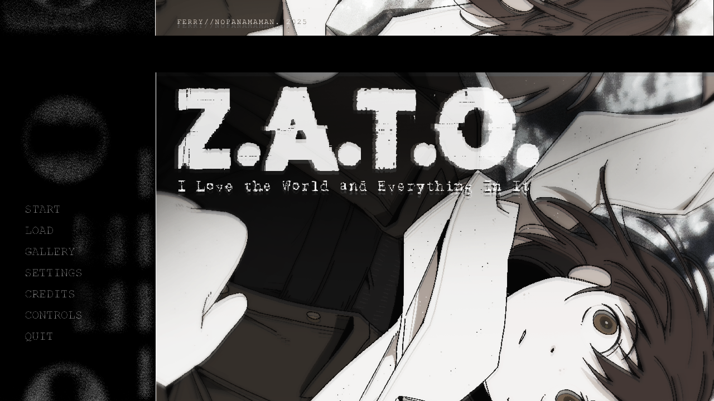
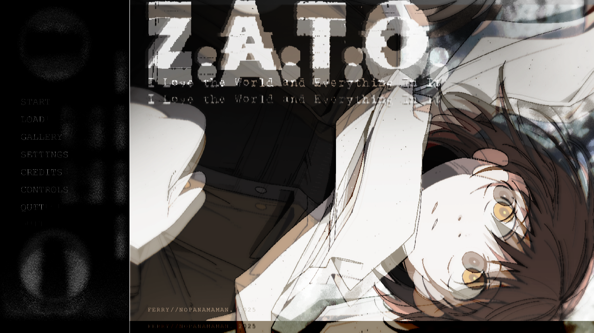

⚠️ 剧透警告 ：本页面包含游戏的全部剧情内容。如需完整体验，建议先在 Steam 免费下载游玩原版游戏。
《Z.A.T.O. // I Love the World and Everything In It》是一部关于存在、孤独与爱的视觉小说。
这是一部很棒的电波系作品，至少对我来说。
所谓"电波"，简单来说就是挑人，挑那些能对上作品电波的人，这其中或许包括您，亦或许不包括您，所以这注定是一个无法让所有人满意和沉浸其中的作品。
如果很幸运，您能够被这个作品所吸引，那么恭喜您，独具特色的文字气质、十分优秀的背景音乐、简约又可爱的人物立绘、细腻到有些疯狂的情感表达和设计精巧的剧情将完全不负您十几万字的阅读旅程。
当然，以电子书的形式来呈现视觉小说，未必能 100% 适配原本的"游玩"体验——毕竟我技术有限，做出来的页面交互大概有些笨拙，少了些点击的乐趣。如果您喜欢 ZATO，还是希望您能够去 Steam 免费游玩原版，那里才是它最完整的样貌。
游戏原生文本为英文，本项目采用 B 站 UP 主"坚果与高坚果 "的汉化补丁，汉化成员坚果、苦苣、Valine0x 的辛勤付出，让这部作品得以跨越语言障碍，在此深表感谢。
技术实现
解析游戏脚本 — 读取 Ren'Py 的 .rpy 源文件，识别场景、立绘、对话、音效、BGM 等命令，提取为结构化元素列表。匹配中文翻译 — 同步读取汉化组翻译文件，通过原文对照自动匹配每条对话的中文译文，并保留原文中的格式标签（粗体、斜体、字号、颜色）。生成 HTML — 按章节顺序将元素渲染为语义化 HTML，使用 Tailwind CSS 排版。对话框以带角色标签的卡片呈现，旁白与对话区分样式，时间表合并为代码块，制作人员名单使用衬线字体引用块。后处理 — 对最终 HTML 进行 Ren'Py 格式标签转换（{b} → <b>），并对特殊文本进行手动调整。
版权声明
所有游戏内容（故事、美术、音乐）版权归原作者 Ferry / Nopanamaman 所有。中文翻译版权归汉化组（坚果、苦苣、Valine0x）所有。
本页面仅供学习交流使用，请勿用于商业用途。如果你喜欢这部作品，请前往 Steam 免费下载游玩原版游戏，亲身体验这部独特的视觉小说。
本项目若有疏漏或排版问题，欢迎随时向我的邮箱发送 issue：1693453236@qq.com，感激不尽！
最后，希望你读得开心。Enjoy it！
目录
开屏CG与标题画面
[intro]

开场
♪ ambi9
你知道吗？我们的太阳其实是一颗非常特别的恒星。
首先，它是一颗黄矮星。
而这种星星在宇宙里总共也就占7-10%%。
就算是在黄矮星这一小类里，它也是个异类。
大多数黄矮星表面都爬满了暗斑。
而太阳不是。
它的表面绝大部分都很明亮——事实上，它的亮斑数量足足有暗斑的三倍。
当然啦，要说整体的亮度指数，它确实平平无奇。
跟同类型别的星星比起来，你甚至可以说它有点黯淡。
可就算这样，它还是比大多数同类更努力地、拼尽全力地发光。
我觉得这点真的超可爱。
我不记得是在哪里读到这些的了。
估计是很多年前的某份报纸吧。
但每当我抬头仰望晨空时，这个小小的冷知识还是会蹦进我脑子里。
说实话，这里的景色实在没什么看头。
天空不怎么样，太阳也不怎么样。
我猜我们这地方就是这样的吧。
有人说在我们这儿，太阳好像总在偷懒，毕竟老是下雪。
可那些到处乱说这种话的人嘛……
他们显然没看过那份报纸。
我越思考这些事，了解得越多，就越觉得一切都是如此不可思议。
我不是在用这个词表达“哇，好厉害”的意思。
我的意思是“这太巧了”。
你不能否认，这个世界真的充满了惊人的巧合。
巧合多到让我开始怀疑，这里面到底有多少能纯粹归功于偶然。
宇宙如此仁慈，同时赐予我们一颗恒星和一颗行星，条件又完美得刚好能孕育出智慧生命。
只要大气成分、地球大小、或者日地距离有一丁点儿波动——我们中的任何一个、以及包围着我们的那些美，就通通不会存在了。
有人会管这叫奇迹。
当然，这种说法很浪漫……
但这难道不是太小看我们身处的这个世界了吗？
啊，不过我可不是在附和人择原理之类的观点！
我倒不至于自大到认为宇宙仅仅是为了我们才存在的。
或者说，我不太确定，宇宙的存在是不是仅仅为了被观察。
婴儿刚出生时，并不会在意别人怎么看他。
那种被在意的需求是后来才有的，是随着孩子发展出自我意识才出现的。
在那之前，他的好奇心只针对周围的环境。
所以说，真要论起来，我的观点恰恰和人择原理的结论相反。
我们是社会性动物，为了生存，渴望被关注是很合理的。
可要说宇宙本身也有这种渴望被关注的优先需求……
我怎么想都觉得说不通。
……
不过，也可以换个角度想。
孩子之所以对世界充满好奇，是因为他认为世界是外在的。
但如果这个孩子就是 这世界呢？
如果他所能观测的一切都存在于自身之内呢？
如果那样的话，一个包罗万象的宇宙还能对什么感到好奇？
在它之外什么都没有了，所以它只能好奇它自己啊！
在整个浩瀚的宇宙里，也没别的东西值得它关心了！
它就是世界本身啊！
废话！
啊，等等，这么一想就全说得通了。
如果我这么说的话……
我想，宇宙也没得选，只能变得“自我中心”了。
就算它刚出生时不是这样……
如果宇宙在成熟过程中，逐渐萌生了渴望被他人感知的心愿呢？
不就像小孩子长大那样嘛。
那当我们想让别人以某种方式看待自己时，我们会怎么做？
我们会努力把自己塑造成那个样子。
啊！
我好像懂了！
宇宙慢慢产生了想被看见的渴望。
它渴望被欣赏、被爱、被注视，因为它原先除了观察自己之外，就再也没别的事可干了。
就这个世界而言，这是最棒，也是唯一的消遣了。
然后，如果观察是好的，那更多的观察岂不更好！
当然，一个无限的宇宙可以无限地观察自己。
你可以说，它的观测值等于无限大。
这个值看似绝对，但起码在数学上并非如此。
“∞+1”是存在的。
这是宇宙作为一个单一、即便是无限的观察者，也永远无法企及的数值。
因此它不得不创造新的、有限的观察者，来叠加到它的“无限”上——它需要创造有感知力的生命。
拥有感知的生命，就是那个“+1”！
这么一说，我们好像都成了派对上被拉来凑数的……
这难道不超有意思吗！
这浩瀚无垠的宇宙如此一丝不苟地改变自己，只为让新的观察者得以诞生；它把所有系统如此精确地调校到恰到好处……
仅仅是为了让我们出现在这里。
它如此努力，只为与我们分享它唯一的喜悦——与我们这一群一文不值的小虫……！
噢，不对……
噢不，我这么想不对……！
这太可爱了！
这真的太可爱了！
啊，我早该料到的。
我早该知道，无限的宇宙也会是无限可爱的。
这世界真是如此美妙，如此精彩，如此令人惊叹！
伊拉·格拉乔夫斯卡娅失踪了。
哈？
我从课桌前抬起头。
教室里泛起一阵低沉的骚动。
格拉乔夫斯卡娅？
什么？
不是吧？
她就是逃课而已……
没，她是跟那个男的私奔了。
你看见了？
没，但是拜托！你还不了解她？她绝对是——
🔊 smash
安静！
老师用教案本敲了敲桌子。
伊拉的父母昨天晚上报的警。
自从她离家上学后，他们就再也没见过她。
又是一阵窃窃私语。
老师提高了嗓门：
所以如果你们有任何能帮助找到伊拉的线索，请在课后到教师办公室或者向警察报告。
就这些。
我们开始上课。
后排有把椅子吱嘎一声。
等一下！
听到这种事，你还指望我们像没事人一样正常上课？
就是啊！
对啊！！我们都吓傻了，你知道吗。
我们都快担心死了！
说真的，我们的同学失踪了。
我们的朋友，我们亲爱的小伊拉啊！
教室里充满了令人作呕的窃笑声。
行了，闭嘴。
加林，坐回去。
老师的声音听起来干巴巴的，和她刚才宣布这个消息时一模一样。
她转身面对黑板，写下日期。
我们都知道，这事大概率……
最后自己就会解决。
所以我们就别演得那么夸张了。
如果你们有什么有用的信息要说，我很乐意在办公室听你们说。
她放下粉笔，然后开始上课。
12月19日。
一只鸟飞过窗外。
♪ clouds
失踪？得了吧！
报失踪不是说得等个三天才能立案吗？
那都是瞎说的。
你随时都可以报失踪，尤其是涉及到小孩的时候。
哦，是吗？
嘿，那咱俩互相举报失踪，看他们先找到谁。
哈，来就来！
不，说正经的……这突然在吵什么呢？
她不就是没回家吗——才多大点事儿啊！
我还以为到处乱跑就是她的一贯作风呢。
可不是嘛。
你还不了解？格拉乔夫斯卡娅就这德行。
我打赌她父母只是想博眼球罢了。
好像他们还缺这个似的。
我是说，我有听过一些奇怪的案子……
对，话不能说太满，万一疯是能遗传的呢。
你觉得她现在会不会是在哪个毒窝里？
哈哈，怎么可能。
我们这儿有那种地方吗？
我倒希望有。
至少还能找点乐子。
哈哈哈！
说真的……
嘿，嘿。
但她……肯定是跟那个男的跑了，对吧？
“那个男的”？
你还不知道？
好多人都看到过他们在一块。
是个老男人，好像……
三十来岁吧。
咦！
真的假的？
对啊，真够烂的。
我慢慢地跟在同学后面，一起去上下一堂课。
真烦人。
他们的谈话让我很不爽，我也不知道为什么。
倒也不是说他们在胡说八道。
伊拉自己一个人跑到不知道什么地方去，也不是一回两回了。
我也没太把这条消息太当真。
说真的，我也没比他们好到哪去。
我脑子里确实有一丝担心，但这担心并不是针对伊拉。
反倒是……
当我第一次听到她失踪的时候，脑海中闪过的想法相当丑陋：
真恶心。
但不管别人怎么说……
也不管我私心怎么想，毕竟是有个人失踪了。
她那可怜的父母一定非常担心。
光是想象那个画面就让我心情低落。
伊拉会不告而别地跑到哪去，我一点也不奇怪，但说真的……
唉……
……
反正我们又算不上朋友。
我要是表现得伤心欲绝，那才奇怪吧？
她就是那样的人。
总是惹麻烦，总是在她不该待的地方瞎混。
他们说得对，这肯定不是伊拉第一次不知去向了。
但这些是真的吗？
他们说的那个老男人的事……
我甚至从来……
我从来没见过或者听说过那种事。
即使这段时间……
……
我猜这也有可能，毕竟有些女孩子就是那样。
即使这样，我也没想过伊拉会是那种被爱情冲昏头脑的人。
冲昏头脑，哈……
这么一说，那简直……
对，那简直太可爱了。
恋爱中的伊拉……
还是禁忌之恋！
哇，我可从来没往这方面想过。
我从来没看出来她是那种会追求浪漫的人。
但她归根结底是个女孩子嘛。
而且她确实喜欢那类书……
所以也许……
她难道一直都计划着私奔？！
啊，要命！
要命，要命，这一切真是太复杂了……！
我真的很纠结，真的。
一方面，这超级浪漫，
如此美丽而年轻的爱，全然不顾旁人的眼光……
这太不可思议了！
难以置信的可爱！
但是另一方面，我真的……
很难过。
我这么想很自私也很蠢，但如果伊拉真的走了……
我就好像再也没什么可指望的了。
嘿，舒宾娜。
啊？
这事儿你知道点什么吗？
不……不知道……
我怎么会知道？
得了吧，你俩之前不是走得挺近的吗？
他们那一伙人都窃笑起来。
我们没……
没有？
没，一点关系都没有。
真的吗？
我还以为你俩是女同呢。
什——
他们全都哄堂大笑起来。
我们没有，我……
我们连话都没讲过！
嘎哈哈，瓦季姆，你真蠢！
格拉乔夫斯卡娅在跟那个老男人乱搞呢，她才不好那口。
那可说不准，有些娘们儿两边都玩。
这年头谁知道呢，哈哈哈！
我没有，这是……
哈哈，快看她的脸！
别激动嘛，舒宾娜，开个玩笑而已，至于嘛。
你干嘛反应这么大？
你不会真是个蕾丝吧？
我不是……！！
他们只是一直笑个不停。
对此我还能说什么呢？
无论我做什么反应，他们都只会一直笑。
如果伊拉现在推门进来，还听到了他们刚才说的话……
嘿嘿，那可就天下大乱了。
我是说，她也才“消失”了一天而已，
她今天八成只是来晚了。
她肯定都不知道有人报失踪了。
也许她现在已经离开她爱人的爱巢了。
没准儿此刻她正跋涉在我们积雪的校园里。
不，不，她已经进来了！
她已经把那件湿漉漉的羽绒服留在衣帽间了。
而此刻，她正沿着走廊走着，
上楼梯，然后左转……
就是这样，她来了！
她随时都会冲进来！
对，对，就是这样！
我听到了，我听到她的脚步声了！
她来了！
伊拉来了！！
你这是什么表情？
你那表情看起来跟憋着屎一样。
哈哈哈，她绝对是个女同。
我——
我不是！！
我从来没跟她说过话，
脚步声经过教室，走远了。
等脚步声近了才发现，听起来根本不像她。
其实一开始就不像。
哎呀，就算你不是跟她搞同性恋，也八成是“那种人”吧。
对了，你还没有男朋友吧，舒宾娜？
为什么呢？
哈？！
我不知道……
我只是——
哥们儿，你也不看看她那德行。
你现实点吧。
哈哈哈！得了吧，别那么说……
怎么？你想当她男朋友？
嘿，舒宾娜，想和伊戈尔约会吗？
喂！！
什——什么……
别害羞嘛，他是个好人。
对吧，伊戈尔？
你会好好对她的。
滚蛋！
我才不干呢！
嘎哈哈哈！
……
我死死地咬住了嘴唇。
啧。
老毛病又犯了。
坏习惯。
反正这幻想也没用，我为什么还要一遍遍地想呢？
我一屁股瘫在课桌前，开始漫不经心地翻着课本。
我得停止沉溺于那样的幻想了。
每次都只会让我觉得自己很蠢。
如果伊拉真的从那个门走进来，当场把他们痛揍一顿，我的处境真的会变好吗？
他们八成只会变本加厉地在她背后说这些话。
以及当着我的面……
我想，那样只会让事情变得更糟。
对，我压根不该盼着她来。
如果伊拉真的看到了这一幕，那只会是火上浇油。
所以她没有插手是件好事。
这是件好事，真的是件大好事。
哈……
至少接下来的一整天，那些男生都没再来烦我。
反正所有人都忙着八卦。
我也没法专心学习。
我一直在想……
我最后一次看到伊拉……
老师说她的父母是早上看到她从家离开的，
但是她没来上学。
那倒不稀奇。
伊拉的出勤率一直都很差，
所以我猜她和平常一样又逃课了……
去见他们说的那个男人了？
她是早上一出门就去找他了吗？
因为如果是那样……
如果是那样的话，我昨天傍晚看到的……
♪ daily
是去教师办公室，对吧……？
我有点害怕直接去找警察。
但我应该……
我大概应该去报告昨天看到的那件事。
虽然不确定这会不会有什么帮助。
而且不知道为什么，一想到要把我看到的告诉别人……
总觉得心里有些不踏实。
但又说不出来有什么合乎逻辑的理由。
我得克服一下我自己的这种别扭劲儿。
当然，她八成没事——我清楚得很，他妈的所有人都觉得她没事！
但万一她真的有事，那……
我未来绝对会后悔死！
哦，但这么做我或许也会拆散一对苦命鸳鸯……
如果伊拉真的是为了逃离世俗的嘲笑，去和她深爱的人相守，那我去破坏这份真情真的对吗？
……要命。
我不得不承认……
我自己也有点爱对别人指手画脚。
我是说，禁忌之恋这真的很美好，我确实觉得用世俗眼光评判别人的爱情是丑陋的、丑陋的、丑陋的，但每当我仔细去想，我就是没法忽略那个男人比她大多少，我就是做不到。
唉，我其实和那些八卦的人没什么两样……
等一下！
就是这个！
这就是为什么我不想告诉任何人我看到了什么！
一定是我内心深处的良知在呐喊：“别毁了人家的好姻缘！他们现在肯定正幸福着呢！这不关你的事！”
天呐，对啊，肯定是这样。
这就全解释得通了。
那我应该听从我内心的召唤吗？
我应该保持沉默吗？
反正我所见到的那些，也起不到什么决定性的作用。
那本来就是件无足轻重的事。
告诉别人也没任何意义。
那又不是什么能指向具体地点或罪魁祸首的情报。
也不见得真有什么罪魁祸首就是了。
所以就保持沉默吧，这样大家都开心！
我会开心，那个善良感性的我会开心，那个冷酷理性的我也会开心。
对，对！
干得漂亮，阿莎雅，你想通了。
啊，问心无愧的感觉真好啊。
好吧，没必要再在这里瞎晃了！
我还是回家吧！
♪ idontlikeyou
🔊 bang
我反对！！！！
反对！反对！
假如，我是说假如，你先听我说，万一伊拉真的失踪了呢？
尽管这种可能性不大，她总有那么一丝可能是真的遇到危险了。
如果我的报告哪怕有一丁点希望能帮忙找到她，那么这些信息就值得提供！
而且，如果她真的与心上人私奔了，那么我的证词也改变不了什么。
这证词充其量也就是毫无用处罢了！
……
这话不假。
如果仔细权衡利弊，“伊拉身处险境，而我的话是救她的关键”这种极小概率事件，反而成了最有说服力去报告的理由。
哇……
“我的话是救她的关键”……
哇！对啊！
那也太棒了！
然后我会去医院看望她，而她会感动得不知所措。
她会说我不必这么做的，她会说：“我不是让你别管我吗，傻瓜。”
但是我会摇摇头回答道：没什么的，我只是做了我该做的……
唔，算了，我得想点更酷的台词。
我得好好想想……
等等，等等，为什么她会在医院？！
我难道希望伊拉最后进医院吗？
老天，肯定不是啊！
我不是希望我那该死的证词真的能救她。
我希望的是我的证词派不上用场，因为她已经在家里了。
或者正在给家里人打电话，告诉她的父母，她与此生挚爱在一起是多么幸福。
这才是我希望的结果。
呃，我今天脑子里怎么净是这些傻念头。
至少我知道我现在该做什么了。
我决定了。
我要去教师办公室。
教师办公室在哪来着？
我估计他们根本不指望有人会来。
我也许看起来有点傻……
也不是第一次了。
算了，管他呢。
走，走，走啊走。
沿着楼梯往下走，向右转，穿过走廊。
那儿，教师办公室！
……哦？
一个女生。
有一个女生站在那，就在门边上。
我想我之前见过她……
她是学姐吗？
我们的镇子很小，学校也很小——要是我平时人再积极一点，我早就该知道她叫什么了。
嗯？
她转过身来看我。
我不确定她想干什么，所以我稍稍点了点头。
嗯……
你也在排队吗？
排队？
对啊，进办公室的队。
噢……
♪ oleg mazur
哦，不是！
我只是在等人。
啊，好吧。
嘿。
什么？
你是阿莎雅，对吧？
啊——
对！
你怎么知道的？
你这问题可有点哲学啊。
人是怎么知道世间万物的呢？
呃……？
我的意思是，咱这儿一共也没几张脸要记。
你也应该认识我，对吧？
嗯……
对不起。
真不认识……？
哎呀，你看，我刚才就是这个意思……！
倒不是说我懒得去记别人的名字。
我只是不知道别人都是从哪知道这些名字的。
他们都说在咱们这种小地方，人人都互相认识，但这根本不是事实。
我们之所以了解自己小圈子外的人，无非是通过八卦或者共同的朋友。
可自从托夏离开后，我就没交过新朋友了。
至于八卦……
当然，有时我会不小心听到同学们闲聊些有的没的。
但是我不喜欢听他们八卦，我不喜欢他们的声音，所以我尽量不去注意他们。
等一下……
这么一说，好像还真有点像是我的错了……
我的意思是，当人们翻来覆去念叨“人人都互相认识”时，那个“人人”里面并不包括我。
我叫玛丽娜。
……噢！
很高兴认识你。
我也很高兴认识你。
你是有格拉乔夫斯卡娅的消息要说？
你、你怎么会知道的？！
什么叫“怎么知道”？
我们班也发公告了，和你们一样。
他们告诉我们向老师报告情况什么的。
啊。
我明白了……
不知道为什么，我还以为他们只把消息告诉了我们这些伊拉的同班同学。
但想想也合理，他们起码得通知高年级学生一声，万一有人认识她呢。
也就是说……
你也知道伊拉的一些事？
对。
啊！那很……
那太好了！
所、所以你跟老师说过了？
肯定啊！
哇……
嗯。
然、然后你和他们说什么了……？
啧啧啧。
那可是我和“调查”本身之间的秘密。
阿莎雅，这种事可不能在大庭广众下随便往外说。
隔墙有耳！
噢、噢……
我、我明白了……
对不起。
行啦，呃，你也不需要道歉的……
糟糕，糟糕。
她对我的第一印象肯定糟透了。
我不仅没记住她的名字——我明明应该记住的——现在还显得我对“警惕性”这玩意儿一窍不通……
啊啊啊，我是在骗谁啊！！
我确实就是对警惕性一窍不通啊！！
那、那个！
那我就先进去了……！
玛丽娜突然挡住了我的路。
哈哈，不，你可进不去。
……啥？
你—什—么—都别想告诉他们。
她每吐出一个字，食指就在空中点一下。
嗯……
为什么？
因为……
一股不祥的预感在我胸中升起。
求你了，别又跟我们班那些人一样是在耍我。
是因为我刚才表现得很没礼貌吗？
我不是有意的。
好吧，我从来都不是有意的。
啊，我就是这样改不了，对吧？
我们才刚认识，我就已经把一切都搞砸了。
该死，该死，真该死！
我拼命地在她脸上寻找嘲弄的痕迹。
但是……很奇怪的是，我找不到。
我一直在等你。
……哈？
嘿嘿嘿！
惊不惊喜？
我当然又惊又吓了！
……不，等一下。
这肯定是个什么愚蠢的诡计。
要是我信了这个女孩，那她肯定会当面嘲笑我的。
我认真的。
伊拉跟我提起过你。
真、真的吗？
对啊！
天呐，她们聊过我？
哇……
考虑到伊拉对我的描述肯定不怎么样，玛丽娜现在竟然表现得这么友好，我真的很惊讶。
等一下，这是不是意味着她是伊拉的朋友？
不知道为什么，我从来没想过她伊拉会有朋友，至少在学校里没有。
我之前这么想真是太武断了。
我想知道伊拉在她朋友面前是什么样的。
我知道你昨天见过她。
！……
我估计你会想报告这件事，所以我下课后就立刻跑过来了！
我本来觉得在课间休息时堵你会更容易一点，但是，哈哈……
我光顾着听那些愚蠢的谣言了！
这事一时间给忘了。
她知道……？
不过话说回来，重要的是咱俩总算碰上了！
嗯……
所以你为什么要拦着我？
啊哈。
这个嘛……
玛丽娜环顾空荡的走廊，然后压低了声音：
如果你把昨天的事说出去，只会让情况变得更糟。
哈？
我们不要在办公室门口聊这个，好吗？
走，跟我来。
她退后一步，朝我招了招手。
我不确定她在想什么，但是看起来不像是什么恶作剧。
可……
等一下！
我知道伊拉大概率没事，但是……
难、难道不是
我们越快把
♪ antics
小声点儿！你这家伙！
我刚说了别在有大人的地方聊这个！
哇！
玛丽娜抓起我的手，开始拉着我往走廊那头跑。
她自己也没安静到哪里去啊！
我所有那些支支吾吾的抗议听起来都太软弱了，在她听来，恐怕跟背景噪音没什么两样。
我明明花了一整天的时间犹豫到底该不该报告！
那又怎样？
我明明仔细权衡了各种选择，才得出了我自己的结论！
我好不容易才下定决心的！
我明明有权去作证的！！
……
……但我内心某处却松了口气，因为好像已经有人替我做了最终的选择。
我的意思是，那股愚蠢的直觉——那股我还以为早就用理性克服了的直觉——最终还是占了上风。
看来这直觉终究还是有点道理的！
所以我是对的，我内心的直觉是对的！
当然，我还不可能真的知道，因为我还没听到玛丽娜要说什么。
但这不可能是纯粹的巧合，对吧？
如果不是的话，那这背后又取决于什么呢？
玛丽娜的出现，是不是因为世界需要阻止我，好去成就什么更重要的事情呢？
还是说，玛丽娜的出现，是是因为我潜意识里渴望着什么东西——任何东西——来阻止我？
无论是哪种原因，我猜我对这结果其实也不怎么介意。
嗯……
我想我暂时还是坚持我那个宏大叙事的角度吧。
世界竟屈从于某只微不足道的小虫——我——的意志而扭曲，这想法真是荒谬至极。
但对我来说，也不是第一次这么想了，不是吗？
而这个世界，竟然出于某种原因，决定引导我走向正确的道路……
那真是可爱得没完没了。
沿着阶梯往下，穿过门厅，抵达衣帽间。
我不再抵抗。
玛丽娜一路都拽着我，我能感到自己的疑虑正转变为兴奋。
这绝对是正确的道路。
这个女生了解伊拉。
我也想要更多地了解伊拉。
而且整个世界都想让我了解。
第一幕
🔊 riser
🔊 radiator
🔊 radiator
♪ pray
🔊 chair
你——你什么毛病？！
所有人的目光都在伊拉、加林，和那把椅子之间游移。那椅子砸在了男孩旁边的地上，差点砸到他。
啊、
哈？！
格拉乔夫斯卡娅，搞什么鬼？！
她是疯了吗……
快去叫老师！
完全无视教室里的骚动，伊拉径直冲向加林。
她的脸因愤怒而扭曲。
没等他反应过来，她从他手里一把抢过记事本，砸在我的桌子上。
我急忙抓住它。
你再敢读一次，我就踹烂你的牙。
哈？！
你疯了？
伊拉没有回应。
她只是死死地瞪了他一会儿，转过身，气冲冲地走回她的座位。
刚刚还在大笑着的同学们现在都鸦雀无声，目瞪口呆地看着她。
她穿过人群回去拿包，接着朝着门那边走了过去。
疯婆子！
她没理会。
啊！
格拉乔夫斯卡娅，你要去哪？
……
🔊 fall
撞！
喂！
伊拉一把推开了老师。
你——
格拉乔夫斯卡娅！
你……
你知道自己在干什么吗？！
这事我一定会告诉你父母！
但她的威胁根本毫无作用。
♪ newpath
大家都知道格拉乔夫斯卡娅这个人。
她一直都是这样，我觉得。
不，我不是说她老是扔椅子……
而是伊拉向来无视那些所有人都该遵守的规矩。
我想，这就是人们口中的“问题儿童”吧。
她的父母因此没少挨批。
在我们这样的小镇，这太正常了。
不只是因为镇子小，更是因为它的……
怎么说呢，那种“排他性”。
沃尔库塔-5最引以为傲的，便是那几乎为零的犯罪率。
毕竟未经许可谁也不准出入，有这成果也是顺理成章的。
能待在这里，你就走大运了：薪水比全国平均水平高，还能买到附近城镇居民做梦都想不到的东西。
很少人能享受到这份特权。
我上次查的时候，我们这的人口连6000都不到。
所以，当伊拉这样的人闯入这个小小社会的视野时，她不只被看作是一个不良少女。
她是这个本应该一尘不染的社区里，一个令人费解的污点。
就像精心维护的花园里硬生生冒出来的一根杂草。
当然，她又不是凭空冒出来的。
他们都说，这是家教问题。
这锅自然就甩到了该负责的人——伊拉父母的身上。
于是问题就来了。
格拉乔夫斯基的女儿怎么能这副德行？
是家里出什么事了吗？
他们觉得这样能接受？
他们都不管教她的吗？
他们难道不知道自己有多走运吗？
他们享受了这么多，结果他们连管好自己孩子这点最起码的事都做不到。
他们到底还想不想待在这儿了？
那我们还能让他们待在这儿吗？
我听过很多这种流言。
自从伊拉拿凳子扔了加林之后，我听到的就更多了。
我当时搞不懂为什么。
大家不就只是在闹着玩嘛。
再说了，带笔记本这事，本来就是我的错。
我本来是想放学后在图书馆写点东西的，结果包没拿稳，东西撒了一地。
他们当然会好奇。
他们当然想看我写的那些傻乎乎的东西。
没什么大不了的，反正我本来也没把写诗或者画画太当回事。
这些不过是有意思的消遣罢了，仅此而已。
要是别人笑了，嗯，跟我有什么关系呢？
我就是想不明白。
我想不明白，但我还是想找个法子谢谢伊拉。
她很少来学校。
就算来了，也可能说走就走。
因此我很长一段时间都碰不到她。
嗯，对……
还有就是，我真的很怕她。
伊拉平时连看都不看我一眼。
就算她对加林发飙的时候，也好像把我当成一个透明人。
但那件事发生两周之后，终于让我找到机会了。
我们撞见了。
有一次上课的时候我去了趟洗手间，好像是数学课吧。
我刚一进门……
而她就在那儿，正对着半开的窗户吐出一口白烟。
我甚至都不知道她今天来学校了。
哦。
你好呀。
伊拉对我投来一个不感兴趣的眼神。
……
嗨。
我尴尬地从她身边溜过，钻进了一个隔间。
关上门后，我才发现自己紧张得要命，该干的正事儿一件也干不了。
所以我就在马桶上干坐着，琢磨着该怎么跟她搭话。
我倒也不是想跟她长篇大论或者讲什么客套话。
我就是想说声谢谢——按理说，这应该很容易才对。
但那会不会让她觉得我也是个怪人？
这还是假设她上次真是为我才那么做的……
那不就显得我太自作多情了吗？
我不知道我在隔间呆了多久。
也许有5分钟，也许是20秒。
但当我一听到她好像从窗台上跳下来的声音，我猛地一下把门甩开了。
🔊 bdam
等——等一下——！！！
哈？
唔……嗯……
我呆住了。
她站在窗边，手里拎着包。
从窗口灌进来的冷风吹拂着她的头发。
我必须说些什么。
我好不容易逮到这个机会，世界给了我这个机会，让我把想说的话告诉她。
可是我该说什么啊？
“谢谢你”？
尤其还是在我刚从一个厕所隔间里狼狈地冲出来之后？
……干嘛？
呃……
她挑了挑眉。
我就傻站在那儿，无助地张着嘴，好像突然哑巴了，又好像我脑子里所有的俄语词汇都被清空了。
……
无聊。
不，等等！
拜托。
我朝她迈出一步，她吓得猛地弹开了，好像我是个瘟神一样。
我不知道该说什么问什么，我只知道我必须出声，哪怕是脱口而出的胡话也行。
干嘛？
你到底想干嘛？
你，你不冷吗？
哈？
窗……
窗台。
你刚才坐在那儿抽烟的时候，
我就在想，
欸？
她眨了眨眼。
……还行吧。
……
……
可能有点儿。
啊……
我想也是。
……
……
还有事吗？
没……
不，我是说，有。我……
我很抱歉害得你
哈？
啊，我只是觉得……
我听说那之后
就是……
真的很对不起。
……
她盯了我几秒钟，但对我来说感觉像一辈子那么长。
然后她叹了口气，慢慢地把头发往后一撩。
你道什么歉？
那事跟你又没关系。
啊？
其、其实
也对哦……
那个人的声音听着就烦。
……
我懂了。
我低头看着地砖。
我当然知道会是这样。
我又没指望伊拉会跳出来为我出头或怎么样。
无论她当时是怎么想的，我都想感谢她——但是不管我怎么努力地思考、措辞，说出来的话听起来都要多尴尬有多尴尬，怎么听怎么不对劲。
为什么总是这样？
她的靴底在地板上吱嘎作响。
她转过身，朝门口走去，这次我没有试图拦住她。
你的诗不傻。
哈？
🔊 punch
啪!
……
我傻站在那儿，目瞪口呆。
她刚才……说了那句话？
我没听错吧？
“你的诗不傻。”
这意思是说她喜欢我的诗？
伊拉喜欢我的诗？
伊拉·格拉乔夫斯卡娅？
🔊 schoolbell
铃声响了，把我从这短暂的恍惚中拉了回来。
我摇了摇头。
对了，我该回教室了。
我估计伊拉是不会去上下节课了。
我胡乱地洗了把手，虽然手上其实也没沾什么东西。
♪ daily
几周过去了。
我的生活其实并没有什么改变。
我照旧上学，熬过一节节课，然后去商店，去图书馆，或者散散步，天一黑就回家。
日复一日。
哈？
我的笔记本……
我刚才不过是去食堂买了点吃的。
怎么不见了……？
噢，舒宾娜。
我们借你作业“参考参考”……
你不介意吧？
……
没关系。
谢啦！
对了，这画的是你吧？
他捏着一张碎纸片举到我面前。
哦不。
我忘了我把它夹在里面了……
不……不是。
就只是一张画而已。
是吗？
你确定？
要是你长得漂亮点，这就跟你一模一样了。
……这不是我。
哈哈，随你怎么说。
……
有时候我的同学会拿我开玩笑。
每当这种时候，我的思绪就会不由自主地飘向伊拉。
她还是会来上课，虽然三天打鱼两天晒网。
课间休息时她总是凭空消失——我不知道她去了哪儿，也不敢问。
我总觉得要是我敢问，她肯定会说：“不关你事！”
……她说得也没错。
但即便如此，我的脑子里还是一遍又一遍地上演着那些场景。
不只是我被嘲笑的时候。
后来在放学路上，去商店途中，又或者只是在街头漫无目的地消磨时间，我都会忍不住开始想。
我一直想，要是我能撞见伊拉，那该多有意思啊。
我在想，如果我们能说上话，那该多有趣啊。
我甚至开始在外面待得更久，开始换着路线走。
现在想起来真丢人。
可是……
啊……
伊拉……
她刚在走廊跟我擦肩而过。
甚至连个点头都没有，连往我这个方向看一眼都没有。
我想，我在人群中确实不显眼，但是……
不，都怪我刚才嘀咕得太小声了。
我应该大声点说的。
即使刚才那一声已经花光了我所有的勇气了。
明明我觉得……
明明我觉得她应该听到了才对。
嘿，瓦季姆。
干嘛？
嗯……
你还记得我上次给过你50戈比吗？
我能……要回来吗？
哈？50戈比？
什么时候的事儿？
上星期五。
我去。
这种事你都记得？
……
我能要回来吗？
天呐，我压根不记得拿过。
你确定这不是你瞎编的？
可能你给别人了。
我……
不，就是你。
哎呦……
我他妈哪知道。
不就半个卢布吗，舒宾娜，谁稀罕啊？
就是，你怎么这么斤斤计较？
真小气……
你八成是自己弄丢了什么的。
……
我的视线忍不住频频扫向门口。
那儿当然是空的。
我在等什么？
就算伊拉她出现了，她会怎么做？
当着大家的面揍他一顿？
……嘿嘿。
那肯定很有意思……
喂！
别瞎想了！
也许他就是真的忘了。
谁知道呢？
我真的不该难过的，也没多少钱。
那钱是够买点杂货，但是……
也不是世界末日。
我又没真的饿肚子。
反正我最近吃太多垃圾食品了……
算是吧。
要是我少吃点这些东西，我的皮肤也许就能好点了。
那样也不错……
阿莎雅，你是不是从来不化妆啊？
不……我没有……
学校也不让啊。
你瞎说啥呢？
去年就不管了。
真、真的吗？
没人会因为这个赶你回家的，哈哈。
噢！
那……那挺好的，我猜……
这些女孩很少跟我说话。
不过，她们人通常还挺好的……
至少在她们不跟着那帮男的一起起哄开玩笑的时候。
我猜她们中可能有一个喜欢瓦季姆？
反正他一欺负我，她就笑个不停。
我想我们之间幽默感的差别一定很大。
但你以前没试过，对吧？
化妆……？
没有，从来没。
不是吧？
你都快十五岁了！
是十四岁……
那还不一样。
你早晚都得学。
尤其是瞧你这……脸色。
但，唔，我真的不……
喂，喂，不如我们来帮你弄一下吧？
嗯？
对啊！
就化点淡妆，我保证你马上就能看到效果了！
我……
我……我不知道……
来嘛，会很好玩儿的！
对啊，你肯定会喜欢的！
呃……嗯……
好……好吧，但是……
耶——！
那就过来……！
我不觉得人们会故意做讨人嫌的事。
没人会一大早醒来，就一门心思想让别人难受。
我真心这么觉得……
就算有人做了伤人的事，他们也没有完全明白自己在干什么。
所以我不该盼着那些压根不知道自己有多刻薄的人遭报应。
我不应该盼着伊拉出现来打断他们，或者冲他们吼，或者教训他们，或者……
或者做任何事。
跑去走廊时，我仍能听到每个人的笑声。
我捂着脸，我可不想让任何老师瞧见我这副样子。
好在厕所很近，所以很快我就能把这一团糟洗掉……
阿嚏……
我不该再上这些恶作剧的当了，但是……
🔊 fall
撞！
啊！
抱……抱歉……
我下意识抬起头。
哦不。
呃！
什么鬼……？
伊拉吓得猛地往后一缩。
我不能怪她。
我现在看起来肯定像个疯子。
是啊，我看起来糟透了……
老天……
我……
我受不了她那样看我。
我……我很抱歉！
哈？
我从她身边跑了过去。
跑啊，跑啊，跑啊……
我只想去洗手间。
我只想把这玩意儿洗掉。
大约过了一个月，我终于认清了现实。
我一直跟自己说，伊拉的行为与我无关——她都亲口告诉我了，清清楚楚的。
她那样说过，我也一直在对自己重复着，一遍，一遍，又一遍……
但是我不信。
在某种程度上，我依然抱着一丝幻想，幻想着伊拉同情我，幻想着出于天知道的理由，她关心我。
呵，说真的，我凭什么啊？
凭她伊拉冲一个她嫌烦的同学发飙——而那个同学恰好在取笑我？
凭她没有跟着大家一起起哄？
凭她跟我说……她喜欢我写的东西？
她根本没那么说。
她只是说我的诗不傻。
喂。
嗯？
三个硬币叮当一声落在了我的桌子上。
二十……
二十……
十戈比。
所以他其实记得……？
就这样了。
谢了啊，你给的“春宵一夜”可真值。
周围的人哄地一下全都坏笑起来。
嘿，你这可真便宜！
喂，待会儿有空吗？
呀哈哈！
……真好笑。
唉，我说真的，舒宾娜，你就不能有点幽默感吗？
你那张丧气脸都拉低全班的气氛了。
哈哈哈哈，就是！
你这是在给大家添堵。
你也该为集体荣誉想一想吧！
……
我曾放任自己沉溺于改变的幻觉。
我曾妄想着，仿佛那些改变是我应得的。
仿佛我以前的日子过得还不够好似的。
仿佛我的生活真有多大的苦难似的。
归根结底，我只是太贪心了。
竟然因为那些愚蠢的巧合就满怀希望……
……这太荒唐了，我都忍不住想笑。
啊……哈……哈……
但没关系的。
我现在想明白了。
之前的我太可笑了。
承认这一点很丢人，但是，嗯……
亡羊补牢，为时未晚，对吧？
我只是有点太沉浸在自己的小世界里了。
而且啊！
即使它们最后也没成什么，我也可以珍视那些与伊拉的小邂逅，珍视它们本身：珍视那些短暂，却也美好的瞬间。
我可以津津有味地回味那一次，我走大运看见加林被吓得惊慌失措的样子。
或者是那一次，有人称赞了我的作品——哪怕那称赞听起来相当别扭。
我可以也理应这么想，因为大家都是这么想的。
每个人都有那些可以笑着回顾的小事。
这么一想，它自有它的美妙之处，不是吗？
我们的一生不就是一连串的小插曲嘛，有好有坏。
哪怕它们没能汇聚成一个宏大的篇章，那也没关系。
因为每个瞬间本身就有其独特的价值。
我本该学会对此感到知足。
直到现在，我也一直都挺知足的。
直到我……
直到我认定，仅仅拥有这些还不够。
客观来说，这有什么好抱怨的？
不，说真的。
我身处这片广袤国土上最美丽的地方。
我有舒适的栖身之所，甚至还有属于自己的房间。
我父母双全。
我有美妙的爱好可以享受，有纸可写，有书可读，有电视可看。
几乎每天放学后，我都会给自己买点零食。
我成绩很好，老师说我很有潜力。
同学们也都知道我很用功。
他们找我的时候，我也会辅导他们功课……
没错！
我有那种随时能聊天的同学！
有那种我可以陪着一起笑的男生，哪怕他们的笑话经常冷场。
哪怕我其实没什么幽默感……
所有这些，我全都有。
此时，此刻。
我这个年纪的女孩所能奢求的一切。
那么，为什么我表现得好像还不满足呢？
我他妈到底为什么——
你个白痴！！！
啊……
啥？
♪ canopy
你他妈为什么老是配合他们搞这种烂事？！
我很——
伊拉看起来像是要给我一巴掌，但最后只是狠狠一脚踢在了旁边的雪堆上。
随后她转过身，开始粗暴地拍打粘在我大衣上的雪块。
我感觉全身都有点麻木。
我开口时，声音比我想象中更弱。
伊拉……
你怎么知道我在这儿？
别管。
我听到那个混账加林在那儿偷笑。
能站起来吗？
嗯……
我笨拙地爬起来——四肢早就冻僵了。
我知道天冷的时候不该坐在水泥地上。
平常我也不会。
但学校后门没别的地方可坐，我的腿又酸得不行。
我没精打采地抖掉裙子和裤袜上的雪。雪屑轻柔地落向地面。
……
我看着伊拉。
她的脸……
咦。
我的脑海里闪过“关心”这个词，但我早就学乖了，这种判断我一向做不准。
我不应该自以为是，这是我的坏习惯。
我不应该自作多情。
我不应该，我不应该，我不应该，但在我把话咽回去之前，问题就已经脱口而出了。
嗯……
所以为什么你在这里？
什么叫为什么？
刚不都说了，加林在吹嘘给你塞了那封蠢信。
不，我不是在说这个……
哈？
嗯……
呃……
这跟你其实没关系，
话一出口，我就意识到我搞砸了。
彻底搞砸了。
这下她要揍我了。
伊拉真的要揍我了。
她会揍我一顿，然后再也不理我了。
我甚至没说对不起，只是绷紧了神经准备迎接即将到来的打击——拳头也好，谩骂也罢，我都不在乎了。
这是我自找的。
……不，也不全是。
……？
这根本不关我事。
只是单纯觉得烦。
是、是这样啊……
行。
他惹毛我了。
你也惹毛我了。
啊……
我真他妈搞不懂你。
你明知道这不是真的。
你该不会真信了吧，啊？
……
……
喂？
我没信。
……
我还没……
那么蠢。
我低头看着那封又湿又皱、我自己都忘了还攥在手里的信。
这是最老掉牙的套路了。
情书恶作剧？
真的吗？
谁会上这种当啊？
我盯着那团皱缩的纸，仅仅是它的存在本身，就让我感到无比悲伤。
把它烧了？
哈？
我带了火柴。
……噢。
不用了，谢谢。
反正都湿了。
我把信叠好，塞进口袋。
里面会弄潮的，但我不在乎。
我没法把它扔了。
虚假的告白，说到底也是告白。
文字本身是无辜的。
这样就好。
即使这一切都是假的……
我今天见到伊拉了。
伊拉来了。
在我祈祷了这几个星期之后。
伊拉来了……！
谢谢你。
欸？
我冲她微笑。
哪怕嘴上说着已经释怀了——不，就算是我对你、对自己、对全世界这么宣称的时候——我也知道我在撒谎。
我依然无法舍弃那最后一点愚蠢的希望。
每当我比平时感到哪怕多一丝孤独时，那个念头就会不由自主地钻进我的脑海。
哪怕过了这么久，她终究还是来了。
我……
我……我什么也没做，真的……
啊……！
害羞了……
伊拉害羞了。
她是害羞了吗？真的？
真的吗？
……哈哈。
哈哈哈。
好可爱。
简直太可爱了！
哈？
你发什么神经？
啊，对哦。
我正笑得跟个傻子一样。
抱歉。
我没事。
……随便你。
我要回家了。
什——
这么快？
伊拉快速上下打量了我一眼。
你……
自己保重。
啊……
好，好、好的。
拜拜！
我们互相挥手，我目送她消失在拐角处。
我犹豫了。
也许我不该……
感觉好像还有好多话想对她说。
我不知道要说什么，也不知道为什么，只觉得还有很多很多。
我转身朝家的方向走了几步。
不。
我改主意了。
我跑了回去。
该死，我的腿还是那么僵……
我转过拐角，不到一分钟前伊拉才刚刚经过这里。
然后——
她已经不见了。
我叹了口气。
这里的雪不够深，留不下清晰的脚印。
……倒不是说我已经没救到要去跟踪她了。
哈……
她为什么总是走得那么急？
♪ newpath
没关系。
我的生活其实并没有什么改变。
我照旧上学，熬过一节节课，然后去商店，去图书馆，或者散散步，天一黑就回家。
日复一日。
有时候我的同学会拿我开玩笑。
每当这种时候，我的思绪就会不由自主地飘向伊拉。
她还是会来上课，虽然三天打鱼两天晒网。
课间休息时她总是凭空消失——我不知道她去了哪儿，也不敢问。
我总觉得要是我敢问，她肯定会说：“不关你事！”
……她说得也没错。
但即便如此，我的脑子里还是一遍又一遍地上演着那些场景。
不只是我被嘲笑的时候。
后来我在放学回家的路上、在去商店的途中，或者仅仅是在街头漫游消磨时间时，我都在想。
我一直想，要是我能撞见伊拉，那该多有意思啊。
我在想，如果我们能说上话，那该多有趣啊。
我甚至开始在外面待得更久，开始换着路线走。
哪怕这种行径幼稚得可笑，我也依然照做不误。
一次又一次。
走啊走，祈祷又祈祷。
啧。
你们这帮混蛋能不能闭嘴？
哈？
呃，这疯婆子……
没人看见伊拉进了教室——当时大家正忙着吹口哨、起哄大笑。
啊……
她正好撞见我摆着一个超级蠢的姿势。
好吧，这赖我。
要是早知道她会看到我这副蠢样，我就不选“大冒险”了。
不过，跟这帮家伙玩的时候选“真心话”……
也不见得能好到哪去。
噢，好吧……
虽然嘴上这么说，但这都是我自找的。
我选择了自取其辱，而就在我扮丑的同时，内心却一直在乞求，拼命祈祷着伊拉能出现。
而她真的来了。
现在，尽管羞耻感铺天盖地，我却开心得快要爆炸了。
伊拉走向她的课桌，几乎连看都没看我一眼。
所有的男生都躲瘟神似的给她让路——只有加林没有。
……
让开。
不让。
急着去哪啊？
……
跟我们一块儿玩呗。
哈？
哈哈，哥们儿，你认真的？
……
来嘛。
换个口味，找点乐子嘛。
瞧，舒宾娜玩得多开心。
对吧，舒宾娜？
求你了，别看我。
……是的。
看到了吗？
伊拉连眼皮都没眨一下。
别挡道。
不然呢？又要拿椅子砸我？
……
出乎所有人意料，伊拉只是平静地把包甩在最近的课桌上。
她一言不发，开始在包里翻找。
加林干笑了两声。
怎么，里面装着手雷还是咋地？
她看着他。
嗯？
你干——
🔊 swish
嗖！
天——唔哇！！——
加林猛地向后一跳，撞上了另一个学生。
搞……搞他妈什么？！
大家都吓得往后缩。
那是什么？
哈？
什么鬼……
你……
伊拉手中闪过一道寒光。
那是……
一把圆规。
……
……那是……
哈哈，你来真的？
她一言不发。
教室里响起一阵低语，很快便转为了讥讽。
变态，疯子，疯婆子。
伊拉放下圆规，走向自己的座位，一脸无动于衷。
啊……
就像上次一样。
伊拉救了我，却都没正眼看我一眼。
也许有些旁观者——不，大部分人大概都会觉得，她压根没打算帮我。
我也倾向于这么想。
但是……
我那不可理喻的心却依然在狂喜。
我开始产生一些非常愚蠢的想法。
伊拉两次对加林动手，都是在她看到他拿我寻开心的时候。
这不可能是巧合，对吧？
当然可能是。
不过才两次而已。
两次——而且隔了好几个星期。
谁会多想的话就是个白痴。
我……
是啊，我想你是对的。
这是唯一合乎逻辑的思路。
我应该认同。
我本该认同的。
要是……
要是那天伊拉没出现就好了。
那之后已经过了两周，那一刻却还在我脑海里不断循环。
一遍，又一遍，又一遍，又一遍，又一遍。
无论是在学校还是别处，即便伊拉无视我，我也再不会为此难过了。
因为在那一刻，我得到了我所能奢求的一切理由。
这正是我所希望的一切。
……
但是……
我终究是个贪得无厌的人。
仅仅是那样，还不够。
每次出门，我依然在搜寻她的身影。
在这么小个镇上想碰见个人居然这么难，简直太荒唐了……
于是从某个时候起，我开始怀疑。
我经常能看见同学们在外面闲逛。
在主街上溜达，在院子里，在文化宫，在商店，在咖啡馆里——想要偶遇他们并不难。
但伊拉简直就像把所有空闲时间都耗在家里了一样。
倒也不是没可能，但这听起来不像她的作风。
据我所知和推测，她跟父母的关系并不好。
在那种家里一待就是好几个小时，日复一日……
不，我真的很怀疑。
另一种更可能的解释是，她更喜欢去郊外这种偏僻的地方。
也许她不想被打扰？
这倒像她的风格。
嗯……
尽管可能性很大，但我偏偏就想做那件事——去狠狠地烦她。
哈哈……
我甚至觉得自己有点勇敢。
伊拉可能会气炸了。
她可能会推开我。
她甚至可能会揍我！
哇！
……
但不知为什么，我真心觉得她不会。
啊、
我的呼吸一滞。
……
嘿。
你、你好！
研究所旁的排气口喷吐着滚滚热气。
除了出来抽烟的工作人员，基本上没人会来这儿。
虽然我没撞见过，但地上满是烟头，所以我敢打赌肯定有人来。
为什么偏偏是伊拉在这儿？
……
又来？
嗯？
这种蠢恶作剧你要上几次当才够？
他们真的让你跑这么远到这来……
什么……
啊，不！
那之后我就没收到过信了！
我只是在散步。
散步？
在这儿？
是—是啊……
……
行吧。
伊拉怀疑地看了我一眼。
你……抽烟吗？
不，我不抽。
怎么了？
这是吸烟区。
啊。
是、是的……
我知道。
……
那你想来一根？
啥？
抽烟？
嗯。
不了，谢谢。
行呗。
她耸了耸肩。
阿嚏……
开局真尴尬。
不能就这么结束了。
我得……嗯……
嗯……
那你呢，伊拉？
我怎么了？
你怎么在这儿？
……你去研究所办事了？
……
算是吧。
差不多。
“差不多”？
我妈在这儿工作。
她老是忘带午饭。
噢……
噢！
你给她送饭？
我不刚说了嘛。
太贴心了！
欸？
我是说……
嗯。
你能这么照顾你妈妈
……也没什么大不了的。
才不是。
我知道，没那么简单。
考虑到关于她家里的那些传闻，她居然还愿意特意跑这一趟……
这真的很了不起。
我从来没想过要为父母做这种事。
我是说，如果有人叫我送东西，我肯定会送。
但是伊拉不一样。
她不会仅仅因为被要求了就去做事。
必须是她真心在乎才行。
哈哈，糟了……
这下证实了。
伊拉和我根本不是一路人。
当我整天寻找借口、能晚一分钟回家是一分钟的时候，伊拉却在做饭、打包，一路把它送到这城镇的边缘。
这跟我听说的完全相反……
但这太合理了。
所以我在街上从来没见过她。
所以她没时间在咖啡馆闲坐。
所以她才没在文化宫瞎混。
所以她才是个这么体贴的人。
所以我才是个废物。
🔊 kb
不。
她只是说她妈妈有时候会忘带午饭。
午饭也是提前准备好的。
就算从镇子的另一头走过来，到研究所也花不了多久。
呵，是啊，确实。
她还是会有大把的空闲时间。
这解释不通。
这个解释行不通。
🔊 sand
伊拉走回了楼里。
♪ clouds
我真的需要一个解释吗？
这本来就不关我事。
我还没妄想到去相信我们已经亲密到可以分享这种私事了。
要是那样就好了，但现实不是这么运作的。
现实是这样的：只要伊拉在屋里，加林就不怎么找我的茬。
当她不在的时候，我希望她在。
看来你那个朋友今天不在啊。
谁？
你说呢？
哦。
她其实……算不上我的朋友……
那就是你的恶犬喽。
恶、恶犬？！
哈哈哈哈！！
嘿，这个词太精准了！
在那娘们儿身边稍微开个玩笑，她都能当场发疯。
真他妈烦人。
……
他们以为我们是朋友？
呃，其实也不算吧。
但看起来他们已经察觉到了……
察觉到当这种我也成了笑柄时，伊拉会有那样的反应。
所以不光是我这么想？
不光是我一厢情愿？
……哈哈。
听到这个真好。
即使我仍然无法确定……
这竟然是我迄今为止，从加林嘴里听到的最让我宽心的话。
好在她很少露面。
对。就凭那个考勤记录，他们在过年前就会把她踢出去。
走好不送。
……
对。
伊拉的出勤率绝对达不到最低要求。
成绩我不清楚，但……
等等，我觉得他们没法开除她。
哈？
为什么？
我们是镇上唯一的学校。
她还能去哪儿？
妈的。
有道理。
唉……
不过，她父母可以直接把她送走啊。
你是说送到别的镇？
对啊。
送到哪个亲戚家之类的。
什——
不！
我去，你这么一说……
各位，到时候大家记得假装很惊讶啊。
哈哈哈！
不！
不，不，不……
我讨厌他们说得是对的。
我讨厌我能预见那一幕的发生。
所有人都在传。
说伊拉在她家里就是个多余的累赘。
这种说法已经很久了。
但是，我……
“她有时候会忘带午饭。”
啊啊啊啊啊啊啊啊！！
这种事绝不能发生！
不！
不可以，不可以，不可以！
这不公平，这不公平，这不公平！！
他们不能把她送走……！
她不能走。她那么好。她在乎别人。她真的在乎。也许不是对我，但对她的家人在乎。为什么他们要送走她？那太残忍了。他们不能那样做。如果他们那样做，那就全完了。
如果他们那样做，那我就再也……
……
我们才刚刚开始……
虽然不知道算是什么。
甚至连说话都算不上。
我不知道那算什么，但这不重要。
哪怕她只是在忍受我，哪怕她不想跟我扯上任何关系，我也不在乎。
这不能发生。
这种事在物理层面上就不该发生。
我抬起头，望向窗外。
雪花轻盈地飘落在庭院里。
深色的松枝在它的重压下摇曳。
狭长的灰云静谧地掠过冻土带。
远远越过栅栏。
越过山岭。
远到我无法想象的地方。
远到我的思绪绕着地球转了两圈，最终又回到了我落座的原点。
这个世界太温柔了。
它对像我这样不知好歹的小鬼都太过仁慈。
既然连我都能得到这世界的恩典，为什么一个比我值得千倍万倍的人却不能？
像她那样的人到底要怎么做才行？
我又能做些什么？
……
一只鸟飞过窗棂。
伊拉……
干嘛？
这阵子我真的把一辈子的运气都花光了。
伊拉正坐在女厕所抽烟，就像我第一次跟她搭话时那样。
几片雪花吹进屋子，栖落在她的发间。
嗯……
变冷了。
也许你不该
……
呃……
我……
我知道你不是很喜欢去上课，
照这样下去，
……
你特意跑过来……
就是为了跟我说这个？
……
我知道。
我又不傻。
我也没觉得你傻。
难道你……
就真的
……
大家都说你会被送走。
说
是真的吗？
大概吧。
唔……
当然是真的。
我在问出口的时候就知道那是真的。
也许……
也许你要是能……好好表现……
如果你
也许就不用走了。
而、而且要是你在学习上有困难，
我可以帮忙。
我、我们可以去图书馆
然后……
只剩一个月了。
……
没用的。
……
我懂了……
我的声音在颤抖。
我最好还是继续盯着自己的鞋看。
没事的。
反正这也跟我预料的差不多。
我当然知道，事到如今再来临时抱佛脚根本没用。
这只是个借口。
一个自私的伎俩，不过是想在她离开前，再从她那儿乞讨到一点点时间的残渣罢了。
我不禁在想，当初托夏搬走的时候，我也是这副德行吗？
明明才过去三年。
但现在回想起来……
一切都那么模糊。
我敢肯定，那时的我和现在判若两人。
至少，我大概没像现在这样自取其辱。
嘿。
嗯？
谢了。
啊、啊……
不、不是，我什么也没做。
那个提议
你人挺好的。
……哈哈。
“人挺好”。
对哦。
她什么都不知道。
她以为我这么做是出于好心。
这真不公平。
她人真的太好了。
……你不是来上厕所的吗？
噢！
呃……
其实，既然你在这儿……
你看到有人在附近藏了一个日记本吗？
日记本？
对。
就你知道的，我们上课用的那种。
也许你看到它
伊拉的脸色沉了下来。
啊，别、别担心，我们只是在玩游戏！
我想那些男生只是有点玩过头了。
我找遍了
整个教室和走廊。
它大概就在某个非常显眼的地方，
我、我就是不擅长找东西。
上次我藏伊戈尔的铅笔盒时，他们
她把烟头扔出窗外，从窗台上跳了下来。
♪ idontlikeyou
伊拉一言不发，带着怒气从我身边走过——但在她快要离开时，我抓住了她的裙角。
等一下！
我说过了，没事的！
我们真的只是在玩游戏。
真的。
……
拜托。
别因为我惹上
我没打算惹麻烦。
哈？
我大概知道在哪。
是加林干的，对吧？
不，是舒里科夫……
半斤八两。
她走出走廊，我跟在后面。
我不确定伊拉要去哪，但在她向右急转弯时，答案瞬间就清晰了。
等等，你来真——
她一把推开男厕所的门，大摇大摆地走了进去。
哇！
有个倒霉蛋跌跌撞撞地冲了出来，差点撞到我身上。
啊、
对不起！！
我们很抱歉……
他转过身，难以置信地冲我摇了摇头。
也是，这种时候还能说什么呢……
我跟着伊拉进了洗手间。
呕，这里的味道冲多了。
我环顾四周，看到伊拉的手伸向了其中一个隔间的顶端。
啊……
找到了。
我的日记本。
就在最上方的小窗户边上。
伊拉踩上马桶盖。
拜、拜托小心点！
没事。
她抓住固定在高处的冲水箱。
以此为支点，她伸手够向窗台。
接好。
🔊 snowhit
啪！
我将日记本紧紧攥在手里。
它真的一直都在这里……
我抬头看向伊拉，她正笨拙地试图下来。
哇，我……
谢谢你！！
行了行了……
哎—
哇—
🔊 punch
砰！！
伊拉差点失去平衡，还好及时跳了下来。
落地时，马桶发出了巨大的哐当声。
哇—哇……！
你还好吗？
没事……
呃……
赶紧走。
你看它坏了没？
……
不知道，我没看。
哈？！但——
我进的可是男厕所欸。
恶心死了。
……
啊。
我懂了。
还是谢谢你。
♪ child
嗯。
我，呃……
你是怎么知道它会在
你觉得舒里克有胆子进女厕所？
……也对。
我其实……
我其实猜到了
我只是没有勇气
……
你不能老是这样。
我知道……
我应该一开始就
而不是像个无头苍蝇一样
不。
你不能再这样任由他们摆布了。
……
这只是闹着玩而已。
才不是。
不，真的是。
我们只是在开玩笑。
放屁！
！……
你心里清楚得很他们在干什么！
他们不是你的朋友！
我—我没说过他们是。
那你为什么不叫他们滚蛋？！
哪怕一次也好！
我……
我不能——
你就那么喜欢当受害者？！
……
……
你……
再这样下去，情况是不会好转的。
只会越来越糟。
……
也没那么糟……
而且我也不能……
……
我……
我做不到。
我没法对他们说
对不起……
凭什么不行？
嗯……
我……
那样是不对的，而且……
老天啊……
我——我又不是以前没试过……！
但只要我一开口，他们只会更起劲地
什么也改变不了……
那他妈又怎么样？
谁在乎他们说什么，别理他们就是了。
我——我不像你！
我做不到那样！
当所有人都在笑的时候，
我没法像那样
……
如果我配合他们的话，至少……
至少他们还会跟我说话。
而且……
我知道你一个人也没事，但是……
但是我……
……
……
所以你打算怎么办？
哈？
这就完了？
接下来三年你都要这样过？
……
……说真的。
她重重地呼出一口气。
她看起来甚至不再生气了。
我懂。
我也对自己很失望。
阿莎雅。
嗯？
你知道我很快就要走了。
……
对。
我明白她的意思。
加林和他的狐朋狗友们那条心照不宣的规矩——只要伊拉在场，就要收敛一点……
这就是我如此害怕她离开的、真正懦弱的原因。
我……
我不知道该怎么办。
……
为什么我停不下来？
她手里的牌明明比我的烂得多。
但我却在这里，像个寄生虫一样一边哀嚎一边死缠着她。
我才是那个应该提供帮助的人。
我才应该是那个劝伊拉振作起来的人。
然而……
我想不出任何一样我能给她的东西。
给我写首诗吧。
……
哈？
诗。
嗯……
怎么了？
……
这是什么蠢问题？
因为我喜欢。
噢，呃……！
真—真的吗？
你喜欢？
你喜欢我的诗？
不然我干嘛要问？！
啊，那——
非、非常感谢！！
我是说……
好、好的，没问题！
我会写的，嗯……！
你想写关于什么的，或者……？
也、也许有特定的格律要求？
我都行。
什么都好。
好—好的！
那我想想看……！
我会努力的！
行。
那交给你了。
伊拉看了看手表。
我走了。
呃……
那……大概，回头见吧。
这么快……？
啊……
是、是，好的。
回头见！
她挥了挥手，离开了。
我目送她穿过空荡荡的走廊。
空荡荡的……
我真的在学校待太久了。
阴影沿着走廊延伸，修长而幽暗。
我的心脏砰砰直跳。
我也该走了。
♪ tosya
我的生活其实并没有什么改变。
我照旧上学，熬过一节节课，然后去商店，去图书馆，或者散散步，天一黑就回家。
日复一日。
有时候我的同学会拿我开玩笑。
每当这种时候，我的思绪就会不由自主地飘向伊拉。
她还是会来上课。
但休息时间她就会消失。
我从没问过她去哪。
我脑海里不断浮现出各种场景。
不只是我被嘲笑的时候。
后来我在放学回家的路上、在去商店的途中，或者仅仅是在街头漫游消磨时间时，我都在想。
我一直想，要是我能撞见伊拉，那该多有意思啊。
我在想，如果我们能说上话，那该多有趣啊。
我甚至开始在外面待得更久，开始换着路线走。
哪怕这种行径幼稚得可笑，我也依然照做不误。
噢？
伊—伊拉！
嗨！
你在这里做什么？
伊拉指了指她的烟。
噢、噢不，我是说……
你在市中心这边
来还几本书。
噢！
原来你会来图书馆……！
你在读
嗯……
随便看看。
你不想说？
我……
你不会喜欢的。
哈？
为什么？
……
伊拉看起来正在进行激烈的思想斗争，纠结要不要让我见识一下她的文学品味。
她是读了什么禁书吗？
也许她觉得这对我这种人来说太黑暗，或者太粗俗了。
这未免有点不公平吧？
嗯……
你知道吗，上上周我读完了
加缪写的。
没看过。
讲的是一位医生试图从瘟疫中
拯救一座城市的故事。
它非常……
直击人心！
我很喜欢！
虽然我不太认同它的主旨就是了……
啊？
讲啥的？
这个嘛，呃……
基本上是说，
你可以试着抵挡它，
即使你在危难关头行善，
嗯，听着没毛病。
啊——哈？
我也猜世上还是有好人的。
但人渣要多得多。
真的吗？
那种看法也太
事实就是这样。
我……
不敢苟同。
至少我还没遇到过
你认真的？
加林不就是现成的例子吗。
加林？！
其、其实
他也没那么坏……
呵呵。
真的，我觉得他不是故意的……
嗯。
我相信大家都在
大部分人都不想给别人
带来痛苦，对吧？
其实我，呃……
我觉得在这一点上，
哼。
得了吧。
如果每个人都这么好，那那些“更宏大的恶”都是哪来的？
你以为那是某种自然现象吗？
不—不是，当然不是！
确实有些事情我们在当下会觉得痛苦，
每天也确实发生着
非常可怕、糟糕的事情……
但我不认为应该称它们为
“恶”。
恶是有意图的。
那些事情并不是出于恶意。
悲伤、孤独、误解、
这都不是恶。
呃——嗯，有个著名的法官，
叫丢尼修什么的……
好像是古希腊人
总、总之！
他说，“恶并非一种‘存在’。”
因为如果它是，
恶无法立足于
行吧。
🔊 bang
所以希特勒不算恶人咯？
🔊 spring
欸——欸？！！ 嗯。
呃……
这—这举例未免
但是……
他又不是生来就那样的，对吧？
我是说……
那不是他的本性，
所以呢？
事实依然摆在那。
他长大了，然后变得坏得流油。
恶是存在的，它他妈无处不在。
仅仅因为事出有因，并不代表它就能被原谅。
当、当然不是！
我只是不喜欢把它
无所不在的东西。
无所——啥？
呃—嗯，就是像……
这—这不重要！
我想说的是……
我们不是生来就在体内
带着某种巨大的邪恶力量。
我觉得宇宙
啊……
啥？
宇宙又不是人，当然不同啊。
嗯—嗯，是，它不是，我知道……
但它也是一种存在，对吧？
呃……
嗯……
我是说，既然每一个存在默认
那宇宙也是一样！
因为它就是
还有……嗯……
呃……
我在胡言乱语，是吧？
确实。
抱歉……
无所谓。
跟我想的差不多。
什—什么意思……？
你是个怪胎。
净说些怪话。
啊……
一瞬间，我感到喉咙像是被哽住了。
但我随即意识到了一件事。
伊拉看起来并没有生我的气。
事实上，她好像一点也不反感我。
我不太理解，但是……
能那样想肯定挺好的。
嗯？
觉得每个人内心深处都是善良的。
觉得没人会故意去伤害别人。
你眼里的世界可真美好啊。
……
你是怎么做到的？
要是我，早就气炸了。
你不是已经很生气了吗……？
我会更生气。
哇……
比那还要生气……
对。
我会比现在气上一百倍。
好吓人。
那可不。
我想象着伊拉扔出一百把椅子。
一百把椅子飞向一百个加林。
椅子横飞，圆规挥舞……
伊拉就像一尊菩萨。
长了几十只手，一半抓着家具，一半抓着文具。
一圈由椅子和圆规组成的光晕。
用圆规画出来的光晕。
每一个新圆规又画出另一圈光晕。
成百上千的圆规，成百上千的光晕。
伊拉被这层层叠叠的光晕笼罩着……
我们又聊了一会儿。
趁着她抽完这根烟的功夫闲聊几句。
我跟她讲了些我最近读的书。
我的读后感，还有我的理解。
我其实不太习惯分享这些，所以我的想法说出来听着又蠢又皱巴。
但她一直在听。
每说一句，我都试图在伊拉脸上寻找厌烦的迹象。
也许是我找得不够仔细，但我什么也没发现。
天啊。
我开心得快要死掉了。
我走了。
她掐灭了烟头。
噢……
真的吗？
嗯，有点事。
啊。
我明白了……
但是，呃……
你说的那些小说，有些听起来还挺有意思的。
如果没忘的话，我会去看看的。
真、真的吗？
如果你看了，请一定要告诉我！
还有……嗯……
抱歉跟你扯了那些无聊的哲学
你他妈能不能别再道歉了？
我是在说谢谢。
啊，我……
对不—
伊拉瞪了我一眼，眼神凶得我硬生生把话咽了回去。
好—好的。
呃……
我……
希望你会喜欢？
……
她满意地点了点头。
呼。
……
噢，还有……
我读的书……
……！
那是，呃……
嗯？
……
《百劫红颜》。
嗯？
安妮·戈隆写的。
安……
《百劫红颜》？！！
那套言情小说？！！
对……
那是……
那是历史小说！
又不光是那些腻腻歪歪的东西，你懂的！
我……
我知道，我妈特喜欢看那个！
那书
我只是……
我一直没机会读，而且，
我真没想到你会喜欢——
还、还行吧！！
又不是说我是死忠粉之类的！
你、你不是？
只是……
如果你想读一些历史向或者别的什么……
这书还凑合吧。
我……
好！
我会记住的！
……
伊拉看起来像是要说什么，但随后猛地转身，迈着沉重的步伐走了。
再见。
啊、
好—好的，回头见！
……
伊拉消失在街道尽头。
她又走了……
我的身体靠在冰冷的墙上。
我的腿都软了。
我们说话了。
伊拉和我真的聊了天。
我真是做梦都没想到……
这比我想象的还要美好。
我真没想到……
原来她喜欢那种书啊，哈。
伊拉喜欢那样的小说……
真棒。
真的，真的很棒。
我对她的每一分新了解，都比上一分更美妙。
我得再去见她。
我想要多聊聊。
也许下次她会多告诉我一点关于她自己的事。
现在回想起来，感觉好像一直都是我在自说自话。
我真是太自我中心了……
下次我要多问伊拉一些问题。
我要多问问她喜欢的书。
也许我们可以谈谈电影？
不知道她最喜欢什么。
她也喜欢爱情片吗？
那可真可爱……
我通常更爱看侦探片。
但我真的各种各样的电影都喜欢。
所以如果她想看什么的话……
也许我们甚至能一起去电影院？
那一定很有趣。
我已经很久没去过电影院了。
我需要再见到她。
♪ newpath
她逃课比以前更频繁了。
要是怎样都要被开除，坚持上课就没有意义了——我猜这就是伊拉的行事风格吧。
某种程度上，我能理解……
但我还是希望她能时不时地出现，哪怕只上一节课也好。
即使她来了，我们大概也说不上话。
我们在课上从不说话，所以我对此也不抱什么期待。
只要能看看她的后脑勺就够了。
吃错药了，舒宾娜？
哈？
这一脸傻笑的。
终于把我的建议听进去了？
呃……
什么建议？
总算不是一副看起来要寻短见的样子了。
真是喜闻乐见啊，说真的。
……
太好了。
是很棒。
我们真为你骄傲。
要不下次把头发梳一梳？
乐呵呵地笑得跟个神经病一样。
谢谢你，瓦季姆。
我会的。
……
哼。
不客气。
他一把抓走我桌上的英语笔记本。
咨询费。
他的朋友们跟着咯咯笑了起来。
我一点也不在乎。
尽管今天她不在这里……
我不介意。
我知道我们很快就会再见。
我要想尽一切办法再次偶遇伊拉。
我会把整个镇子都走个遍，这样我们就能见面了。
我要把这地方每一寸角落都翻个底朝天，直到找到她为止。
也许我太过依赖宇宙的仁慈了。
说到底，即使我走完所有可能的路线，也不能保证一定会碰到伊拉。
但我要相信……
不，我确信这世界是仁慈的。
所以只要我尽最大努力，也许我的付出就会有回报！！
当然，这想法未免太自以为是了。
但是剩下的时间太少了。
太少了。
我必须充分利用它。
趁伊拉还在这里，我要尽可能多地制造难忘的瞬间。
我会珍惜每一次相遇。
我要用美好的事物，填满这最后一点时光的残片。
伊拉！
嗨。
呀？！
哦天哪，是你啊。
她叹了口气，似乎松了口气，却又夹杂着一丝烦躁。
我强忍着没偷笑出声，能见到她真是太好了。
成功了，成功了，真的成功了……！
我在镇子边缘的一排排车库之间发现了伊拉。
她蹲在木墙边，一只手紧抱着保温杯，另一只手夹着香烟。
嗯……
你在这里做什么？
你看像是在干嘛？
嗯……
冥想？
……
……猜错了？
伊拉摇了摇头，重新看向地面。
哈……
刚看见她时涌上心头的那股狂喜，开始逐渐消退。
仔细一看，我觉得以前从没见过伊拉像这样蜷缩着。
她姿态里的每一处细节都在呼喊着疲惫。
可为什么，偏偏是在这种地方……？
嗯……
你没事吧？
她喃喃自语着什么。
哈？
监视我……
你说什么？
我没听清……
我试探性地朝她迈了一步，但伊拉的怒视让我瞬间僵在了原地。
呃——
你现在都开始监视我了？
什……
不—不是的！
不。
我只是刚好路过……
♪ wind
路过这片车库？
是—是啊……
她看着我的眼神充满了蔑视，看得我背脊发凉。
我……
为什么……
我……
我没撒谎！
真的！
……
我是……
我放学后总是会到处走走。
老走同一条路会腻的嘛，
有时候我会穿过这里。
或—或者是穿过
还有几次，呃，有几次我甚至
你也知道的，就在那边那个……
我说着说着，看见伊拉的表情慢慢从鄙夷变成了困惑。
啊……
不对。
明明几天前我们还聊得那么开心。
那为什么……
是她听到了什么关于我的坏话吗？
听谁说的？
我觉得她根本不会信加林的鬼话。
我是说，我一般是沿着
主干道溜达……
或、或者是文化宫那边。
但很快就要变冷了，你知道吧？
所以，嗯……
趁、趁现在温度还行，
我只能不停地说下去，祈祷她能消消气。
我得继续说，我得不停地说，因为这原本就是我想和她做的事。
我想和她说话，所以我必须说，因为我不能浪费这一刻。
我们可以挽回的，我可以让她开心起来，我们会把误会解开，这样她就不会觉得我是个变态了。
我真的受不了，受不了她在沉默中死死地瞪着我。
而且你知道吗，呃，
天空更辽阔，而且
啊，我—我的意思是，我没想到你会
在这里。
那是谎话。
好吧，算是半真半假吧。
我希望她在这里，就像我无论去哪里，都希望她能在一样。
只是……
这根本不是我预想的画面。
尤其是在上次见面之后。
在经历了这一切之后，不该是这样的。
……
她只是死死地盯着我。
有一瞬间，她的眼神软化了。
但紧接着她闭上了眼，仿佛光是看着我就已经耗尽了她的力气。
她深吸了一口烟，转过身背对我。
天呐……
……
能不能让我一个人静五分钟？
！……
对不起。
……
我等着她回一句类似“你干嘛又道歉？闭嘴吧。”或者哪怕只是“随便了。没事。”
但她什么也没说。
嗯……
我……
对不起……
……
……
我……
那我走了。
.........................
再见。
.........................................................
死一般的寂静。
我转身离开。
冷风扑打在我的脸上。
车库顶上的积雪看起来又平整又绵软。
等暴风雪一来，它们就会被彻底掩埋。
我也想被埋进雪堆里，变成一座小雪山。
看着就很舒服。
啊，其实……
我想知道伊拉的保温杯里装的是什么。
一般来说是茶吧？但万一她是那种喜欢随身带点热汤喝的人呢？
那也太可爱了……
我当时应该问问她的。
感觉我要哭出来了。
♪ slow snow
嘿，跨年有啥安排没？
能有啥安排？
跟家里人过呗。
没，我是说那之后。
我姐要去参加那帮高年级的派对。
噢，真的假的？
你说咱们溜得进去吗？
没门，我才不想跟她混在一起。
哎呀，别这样嘛……
那里也会有高年级的学姐在的，对吧？
十年级的那些。
噢，我赌米希娜也会去。
人家才懒得理你。
喂——喂！
话不能说太——
我说了，我们哪儿也不去蹭！
反正他们也不会让我们进。
切。
那倒也是……
啧。
那我们去哪？
去谁家？
别来我家。
我奶奶要来，我不方便招待。
你呢？
我那儿也不行……
瓦季姆？
没戏。
我爸最近……
他最近挺累的。
啊，真的吗？
对啊。
不过也没啥。
估计是工作的事吧。
懂了。
我妈也是魂不守舍的……
大人们压力都很大啊，是吧……？
也是。
毕竟年底了嘛。
……
对哦。
快到新年了。
虽然很遗憾，但我一点过节的心情都没有。
我还得帮妈妈装饰房子。
我该提醒她吗？
感觉我们好像都把过节这回事给忘了。
至少我是忘了……
好吧，也许我并不是真的忘了。
年末将至这个想法一直像阴云一样盘踞在我的脑后，但并不是为了庆祝。
我满脑子想的，都是伊拉搬走前的倒计时。
伊拉……
她今天又没来。
我其实不意外。
我只是真的很想……
我希望能和她消除隔阂。
虽然不确定该怎么做，但我必须去做。
也许我该再道歉一次？
为什么？
我真的做了什么不可饶恕的错事吗……？
我想我是挺烦人的，但是……
哎，我也不知道了。
我得想个办法，下次见面时让她开心起来。
光是道歉真的管用吗？
大概没用。
她只会更烦躁的……
那……送个小礼物？
虽然那样可能会有点怪……
而且下周之前我都没零花钱了。
就这点零钱我能买什么啊？
嗯……
也许买点小零食行得通？
呃……
华夫饼？
她会喜欢华夫饼吗……？
🔊 spring
啊啊啊啊啊啊！！
搞什么啊？！
她又不是小狗！
为什么，为什么，为什么我对她的想法总是这么奇怪？！
呃，我还是闭嘴吧。
想点别的吧。
虽然这几天很难做到。
很难，很难……
但我必须试试。
……
吸气……
……
呼气。
……
好了。
视野变清晰了一些。
我能稍微看清一点人行道了，还有建筑物、天空和灯光。
周围的一切都很友善。
一切都很美。
真好。
这些都是值得一看、值得一想的美好事物。
不过，我也许不该像刚才那样深呼吸。
这样真的会生病的……
毕竟天越来越冷了。
我常走的那几条路线，变得愈发艰难了。
不仅仅是因为气温。
郊区的小路被大雪覆盖，在里面深一脚浅一脚地跋涉，很快就让我精疲力尽。
风也越刮越大了。
即使我用围巾把脸裹得严严实实，还是感觉脸上像被什么东西抽打着一样生疼。
这种鬼天气，我在外面是碰不到任何人的。
啊，我今天应该去图书馆的……
几点了？
也许还来得及。
图书馆六点关门，所以……
不，肯定赶不上了。
哎，算了。
他们已经开始布置新年的装饰了。
到处都挂满了彩灯……
噢！
文化宫旁边还立了一棵松树！
好高啊……
现在还光秃秃的。
不过，我就喜欢它现在的样子。
积雪压在枝头的样子，让它看起来威风凛凛。
嘿嘿，好吧，我稍微有点过节的心情了！
要是寒风没那么刺骨就好了，那样我就能再多转转。
街上空荡荡的，除了刚才看到几个走向酒吧的大人外，没什么人影。
很难想象这样的夜晚会有很多人出门。
那我为什么还要像个没事干的人一样到处游荡呢？
……
无论怎么回答都令人尴尬。
公寓楼道里弥漫着温暖却浑浊的橘色灯光。
这里没有电梯，不过话又说回来，这也才五层楼。
我拾级而上。
一个想法正在我脑海中成形。
这是解决我近期困扰的一个显而易见的方案。
完美。
我有了一个度过今晚的完美计划。
这就是我家的门。
看起来有点冷冰冰的。
但这只是我个人的感觉。
我打赌爸爸的客人们肯定觉得这扇门很热情好客。
不过，从现在的安静程度来看……
我转动钥匙，推门而入。
🔊 unlock
♪ clock
唯一的声响是客厅里传来的电视机低沉的嗡嗡声。
太好了。
谢天谢地，今天没有客人。
我把湿大衣挂起来晾干，脱下鞋，悄悄地走过走廊。
爸，我回来了。
嗯。
我甚至没有停下来往房间里瞄一眼。
反正也不会看到什么新鲜东西。
至少今晚看起来会是个平静的夜晚。
我去洗了手。
走出浴室时，我听到厨房里传来一个柔和的声音。
又和朋友们出去了？
嗯。
嗨。
妈妈点了点头，目光呆滞地盯着前方。
她又在抽烟了。
我走进去打开窗户，顺手开了灯。
突如其来的亮光刺得她眯起了眼睛。
想喝点茶吗？
我正要烧水。
她摇了摇头。
我坐在她对面，等待水烧开。
她一言不发，我也一样。
气氛本身倒不算尴尬。
我只是无聊地抠弄着防油布，挥手驱散偶尔飘向我的烟雾。
我们都以各自的方式习惯了这种相处模式。
尽管如此，茶壶一灌满水，我就立刻回到了自己的房间。
♪ comfort
我不喜欢把自己关在这里。
但我每次都这么做，而每次都会被那些糟糕的念头淹没。
连陪自己亲妈待一会儿都做不到吗？
明明她过得那么苦、那么难，你却只知道逃避。
你个叛徒。
死丫头。
忘恩负义的脏东西。
这是一种毫无意义的自我鞭挞。
难道我觉得只要把自己骂得够狠，就能被原谅了吗？
每次都这样，却什么也没改变。
毫无意义。
所以我转移了注意力。
我刚才打算做什么来着……
我要……
噢，对了！
我拿起一支笔，开始翻阅我的笔记本。
伊拉让我给她写一首诗。
啊……
光是回想起来就让我开心得晕乎乎的。
她是这么说的。
她告诉我她喜欢。
伊拉喜欢我的诗。
哈哈……
哈哈哈哈哈！
以前从来没人对我这么说过……！
好吧，托夏说过。
但那都是好几年前的事了。
那首诗……
被加林念出来的那首。
她到底喜欢那首诗哪里啊？
我也许应该问问她的。
放哪去了……
啊。
就是这首。
🔊 poem1clean
Сырая чёрная земля,
黝黑潮湿的泥土啊，
啊！！
好烂啊！
也难怪他们会笑……！
真要说的话，加林当时甚至还算嘴下留情了……
但至少她喜欢。
虽然不知为啥，但伊拉竟然喜欢它，所以也许它还没烂透。
也许我能写出点有价值的东西。
至少在伊拉眼里是有价值的。
只要这样就够了。
上次见她的时候，她生了我的气。
我不知道为什么。
我总是把事情搞砸。
我真的总是搞砸……
我不觉得她是因为我才心情不好的。
但是，呃……
我肯定也没起到什么好作用。
但这次一定行！
也许如果我写好了这个，她就不会那么生气了。
从那天起我就一直在努力尝试。
我是说，她帮我拿回日记本的那天。
我一直在试，可我就是没法把词句顺畅地写出来。
不过，今天……
今天我真的很想把它写出来。
我觉得我能行。
哈。
我就像个非得家长吼两嗓子才肯写作业的小孩。
我甚至不知道她什么时候会再来学校。
想在这鬼天气里在街上偶遇她，纯属碰运气。
嗯？
算了。
反正我都要试试。
反正也没什么损失。
最坏又能怎样呢？
顶多就是被迫欣赏一下美景？
噢，老天啊，那可太惨了！
我要狠狠地享受个够。
等我把这首诗交给伊拉，然后……
那时候……
一切就都值了。
嘶。
手腕好酸。
照这速度，这块可怜的橡皮就要被我给磨没了。
我得记得买块新的。
这事儿挺烦人的。
虽然我叫同学们小心一点，但他们总是忘……
我以前是不会这么要求的。
但现在，每当我把课本借给别人，都会特意嘱咐他们别在上面乱涂乱画。
尽管如此，书还回来的时候上面总是布满了粗劣的涂鸦。
弄成那样，我没法还给图书馆……
而且要是被老师看见，我就有麻烦了。
唉……
我向后靠在椅背上。
♪ machine
一周了。
距离我上次见她已经过去了这么久。
虽说她一连逃几天课也不算什么新鲜事，但这可是整整一周……
不过其他人好像都不在意。
我也不该在意的。
毕竟当我的……呃。
我不想把她称作“恶犬”。
不管怎么说，这也不是头一回了。
没什么新鲜的，也不是什么坏事。
也许伊拉正在好好看看这个她曾生活过的小镇？
谁知道搬走以后，她什么时候才会再回来。
我能理解……
换做是我也会这么做的。
但即便如此……
我还是希望能见见她。
她还在生我的气吗？
我真心希望没有……
但如果她真生气了，我刚好有样东西能派上用场。
没错！
写好了！
我给伊拉写了一首诗。
不知道她会有什么反应。
不知道她会不会喜欢。
我真的希望她能喜欢。
也许她会笑一下。
又或者，万一她害羞了呢……
那一定可爱极了。
我想再看她露出那种表情。
我继续四处走着。
事到如今，我其实并不指望能见到她。
这感觉就像是我必须履行的职责。
就像一个在街头巡逻的士兵。
哇，哇噢，听起来还挺酷的……！
而且天气也不是一直都这么恶劣。
真正的严寒再过几周才会降临。
吹几个小时的风确实挺烦人，但除此之外……
还算能忍受。
很美。
一切都很好。
主干道。
两条住宅街。
文化宫。
直升机坪。
那片车库。
停车场。
学校。
体育场。
研究中心。
幼儿园。
营房。
这一切我都看过上千遍了。
也许内心深处的某个角落，我确实对这景色有些厌倦了。
但我没法讨厌它。
而且，当它不复存在的那一天，我无法假装自己不会想念这里。
毕业后，我会去上大学。
我会告诉所有人我来自沃尔库塔，而不是沃尔库塔-5。
因为沃尔库塔-5并不存在。
来自沃尔库塔-5的人也不存在。
外面的人会问我关于沃尔库塔——那个真正的沃尔库塔——的事情，而我会毫不犹豫地对答如流。
如果做不到这一点，我根本就不被允许离开。
想要离开沃尔库塔-5，你就必须否认它的存在。
无论我多么希望它是真实存在的，我都必须否认。
我必须否认。
我必须……
我必须……
……
但这很难。
太难了，我不确定我是否真的能做到。
现实点说，我大概会说漏嘴，蹦出一些前后矛盾的话来。
我确实总是犯错……
希望到那时我会变得机灵点。
也许我该停下了。
我拉下围巾，深吸了一口气。
……嘶！
这样真的会感冒的。
阿嚏……
至少脑子清醒多了。
我抬起头，看见了北方暮色中那熟悉的紫灰色。
不……
不是暮色。
今天是今年极夜的第一天。
所以直到十二月的尾巴，我都看不见太阳了……
也没什么大不了的。
就我个人而言，我不介意黑暗。
有些人好像在这个时期会变得很抑郁，不过我不是那类人。
啊……
如果我再多待一会儿，等云层散去，我就能看到满天的繁星。
那景色很美，尤其是从这里，从营房这边看——比我在公寓窗户里看到的那巴掌大的一线天空要强太多了。
真希望能多待一会儿。
但是太冷了。
我开始往回走。
破败的一排排工人宿舍消失在更高大、更气派的房子后面。
转角处是那个旧游乐场。
没错，以前我和托夏总是去那里。
即使在当时那里也没什么人气——因为五分钟路程外就建了一个新的，所以……
我们经常能独占整个游乐场。
我想这就是为什么我们喜欢那地方。
……
不知为何，今天这里感觉比以往都要安静。
我能听到风吹过秋千链条时发出微弱的撞击声。
嗯？
我放慢了脚步。
有一个人影坐在结冰的旋转木马上。
酒鬼？
不，我们这里没有那种人。
至少不会在大街上晃悠……
而且那个身形看起来也不像是个男人。
我走近了些，轻手轻脚地踩过雪地。
我的毡靴陷进雪里，几乎没有阻力，也没有发出一点声音。
上次下这么软的雪是什么时候？
我不记得了。
但也可能是我已经不再留意脚下冰雪碎裂的声音了。
也许是因为我太专注于眼前这个我刚刚认出来的人。
是伊拉。
♪ lullaby
她蜷缩着身子，手肘抵着膝盖，尽管天这么冷，她却没戴兜帽。
她的头发乱糟糟的，被雪打得半湿。
她在这里干什么？
抽烟吗？还是……？
……
哈？
... ..... ...
我在几米外停下了脚步。
伊拉正发出压抑的、喘息般的抽泣声。
伊拉？
她猛地抬起头，就像是被惊醒了一样。
眼睛红肿，脸颊因为用袖子擦拭而显得红通通的生疼。
她的上嘴唇还有一点鼻涕。
你——
你想干嘛。
我不知道该怎么回答。
我想要什么？
我满脑子想的只有，我从未见过一个人看起来如此渺小。
伊拉又抹了一把眼睛，然后站了起来。
她踉跄了一下，试图恢复平时那种姿态。
怎么，这也是你的风水宝地？
死变态……
她说到一半破音了。
……
……
怎么说？
这戏好看吗？
我缓慢地摇了摇头。
不。 我只是……
看见你了。
伊拉又拿袖子擦了擦鼻子。
她的手在发抖。
那就滚回你来的鬼地方去……
……
回家去……
阿莎雅。
这和你无关。
我向前挪了一小步。
我想说点什么，什么都行——但脑子里却是一片空白。
还没等我挤出一个字，伊拉就转过身，跌跌撞撞地踩着雪，逃离了游乐场。
我连喊住她的勇气都鼓不起来，更别提追上去了。
我只是眼睁睁看着伊拉消失在巷子里。
要不是地上留着她的脚印，我甚至会以为她从没来过。
雪还在下。
一种被我遗忘已久的感觉在体内膨胀。
我学会了不去理会它，所以它被深埋在了层层伪装之下。
我胸口的空洞变得更加幽暗。
……
星光如针般刺破天空。
世界俯视着我，却不像旁人那样高高在上。
它仁慈而温柔，在它的注视下，我并不觉得渺小。
那双眼睛纯净而柔软。
第二幕·第一天
🔊 riser
🔊 radiator
🔊 radiator
♪ cafe
小星星咖啡馆里很暖和。
以前每当我路过那巨大的玻璃窗时，它看起来就是这副模样，整个店堂都沐浴在金色的辉光里。
我有好几次都动了心，想推门进去。
可每当看见里面有同班同学，一想到他们会看到我孤零零地坐在桌边，我就只能低下头，快步走开。
你真的一次都没来过这儿？
嗯哼。
哇……
哎呀，总会有第一次嘛。
你得尝尝他们家的鸟乳舒芙蕾！
超好吃的。
好、好吧。
我印象中我妈妈好像有几次从这家店带东西回去过。
闪电泡芙、蜂蜜蛋糕，还有些别的甜点……
具体我不记得了，但味道应该不错。
至于我自己，向来只在商店里买零食。
便宜又好吃。
是啊，肯定比这里的便宜……
噢……
怎么点了别的。
我更喜欢土豆球蛋糕来着。
那——那你刚才干嘛不推荐那个？！
因为只剩这最后一个了嘛……
认真的吗……？
嘿，嘿，别误会！
你看着就像是那种会喜欢鸟乳舒芙蕾的人，懂吗？
这算什么意思……
别在意那些细节！
快尝一口，尝尝看。
喜欢吗？
……
好好吃。
嘿嘿，我说吧？
玛丽娜抿着咖啡。
她看起来是个好女孩。
起初我还以为她是想耍我，或者搞什么恶作剧，但现在看来并非如此。
当她不由分说把我拽下楼梯时，我还以为她是想在校外找个地方摊牌。
“才不要，外面冷死了！咱们去找个舒服点的地方。”
她是这么说的。
我环顾四周。
这里确实挺舒服的。
大部分顾客看起来都是其他的学生。
毕竟大人们这会儿大概都在上班。
我们蜷缩在最角落的一张桌子旁，紧挨着窗玻璃，和其他人都隔着很远一段距离。
我收回目光，看着我的茶杯。
不知道伊拉在这里会点些什么。
……对了。
玛丽娜。
嗯唔？
你知道我昨天碰到伊拉了吧？
是你看见我们了？
她嚼着东西摇了摇头。
没。
那……
是她告诉我的。
啊—哈？！
那么昨天……
据我所知，我是最后一个见到她的人。
你见到伊拉……
具体是什么时候？
我不太确定。
我想大概是晚上八点左右吧。
嗯，时间对得上。
八点半的时候她按了我家的对讲机。
她去你家了？
对。
她让我下楼，而且……
听声音像是很难受的样子。
♪ hateme
我想让她进屋，但她不肯。
“不，不，求你了，你就下来吧。我有话想说” 。
所以我跑了下去。
然后……
她看起来整个人都在发抖。
我从来没见过她那副样子。
至少很久没见过了……
是的，她，呃。
我见到她的时候，她看着……
对吧？
我试图安抚她，但她一直在抽泣。
咕！我不行……
你说得对，我不该……我觉得，咕……
我不知道……
我觉得……我已经控制不住了。
我不想走……
没事的……
没事的。
你不会走的。
伊拉，你哪儿也不会去的。
不，我……咕！我知道。
没时间了……
那就-咕！就这样了……
我完了，玛丽娜。
别这么说。
我们可以解决的。
你还可以……
没。
我不行，没人能帮我……呜！
我……甚至再也写不出东西了……
我什么都写不出来了！！
伊拉……
她站在那里哭个不停，我就紧紧抱着她。
我翻来覆去说着那些重复的话，她也一直重复着同样的东西。
我不知道该怎么办……
然后她说……
她看到我了。
就在刚才……
在我来这里之前。
啊？
那个该死的……
怪胎。
阿莎雅。
她看到我这副样子了……
她看到我了……
……
怪胎……
这是她的原话，可不是我说的！
她笑了起来。
别往心里去。
你也知道伊拉那德行。
……
在那之后，她似乎稍微冷静了一点。
呜……
嘿……
你确定不想上来吗？
如果你觉得难受，可以在我家过夜。
没关系。
我很好。
嗯……
那我走了。
等—
喂，你就这么走了？！
嗯。
再见。
你开什么玩笑！
然后她就走了。
你没试着拦住她？
欸？
我是说，我又不能……
强行把她扣下。
再说，我也能问你这个问题啊！
难道你当时把她反剪双手按在地上了吗？
呃……！
没—没有，我没……
我确实就那样眼睁睁看着她走掉了，不是吗……？
♪ cafe
但听玛丽娜这么说……
看来这两个人真的是朋友。
她刚才说什么来着？
她说很久没见过伊拉那副样子了？
也就是说，她以前也有过类似的状态……
而现在她彻底崩溃了……
全都是因为她被迫要离开吗？
所以……
为什么这事不能告诉别人？
这个嘛……
你对伊拉的家庭了解多少？
……说实话，不多。
我知道他们有些麻烦，是因为，
呃……
伊拉的表现。
大家都说这学期结束后她就会被
开除送走了。
大概就这些……
嗯。
也没说错。
她父母最近挨了不少骂，压力很大。
嗯。
但是……
我还是不太理解。
什么意思？
我是说，就算他们被批评了，
把伊拉送走……
感觉就像是他们
那你说，他们该怎么办？
嗯？
咱们这儿就这一所学校。
如果伊拉被开除了，她总得有个地方上学吧。
这——这倒也是……
但感觉就是不对。
肯定还有
比如有些人可以在家自学……
但我很确定，得有残疾证明才能申请那个。
再说谁来教她？
她爸在研究所工作，她妈是护士。
没人有那个时间。
……
……
等等，我以为她妈妈是……
我也不喜欢这样。
但我也能理解他们的难处。
我低头看着那个被我无意识戳得稀烂的蛋糕。
她说得对。
我站在道德高地上指指点点得太快了。
难道我指望他们全家因为伊拉的出勤率太差就搬家吗？
难道我指望他们跪下来求校领导保留她的学籍吗？
这太幼稚了。
我明白了，但是……
这跟
你知道伊拉有个弟弟吗？
啊……？！
弟弟？！
我—我完全不知道！
哈哈，确实有。
他叫托利克。
挺逗的一孩子。
我……
我真的完全不知道。
没关系。
你看……
确实，伊拉的父母过得不容易。
但托利克的情况要糟糕得多。
你知道大人们想犯坏的时候，总还想着遮掩一下吧？
小孩子可不管那一套。
……
还在上幼儿园的时候倒还好。
虽然是有小孩会因为妈妈不让就不跟你玩，但那时候他们还太小，根本不懂那是什么意思。
虽然很烂，但也算不上世界末日。
然而……
他明年就要上学了。
刚好就在他姐姐被退学之后。
这“光荣传统”，他接得可真是时候。
噢，不对……
真是“毫无压力”，对吧？
至少没人会对他抱太大期望。
别这么说……！
抱歉，玩笑开过头了。
但我的意思是，大家都心知肚明，情况只会越来越糟。
……
我能想象。
是啊。
而且除了这些……
想象一下，如果大家发现他姐姐精神状况不稳定，会有什么反应。
啊？
伊拉本来就容易发火。
你也亲眼见过的，对吧？
……
现在再想象一下，给这情况加上歇斯底里 的成分。
痛哭流涕、惊慌失措、举止怪异。
那场面可不好看。
呃—这个嘛……
这也……太难听了。
我才不会管伊拉那时候
我也不会。
但你知道那帮人会怎么添油加醋。
……
流言传得很快。
你跟老师或警察说点什么——第二天全镇的人就都知道了。
所以我认为……
我觉得这帮不了任何人，阿莎雅。
……
但是……
也许这能给他们提供点线索……
什么线索？
嗯……
嗯……是这样。
真要有人去作证的话，那也该是我。
我是最后一个见到她的，对吧？
噢，对哦！
有道理。
那个，我已经跟他们说了，我大概那个时间透过公寓窗户看到了伊拉……
你懂的，我也没提我下楼跟她说话的那部分。
但是……
我不知道这能有多大用。
我们见面后，她似乎是往她家的方向走了。
但我并没有，呃，一路跟她回家……
所以算不上什么有用的指引。
嗯……
至少他们知道她没有离开
呃，这个去查查出入城记录也就知道了。
对……
这下可真是麻烦了。
我从一开始就对是否要报案这件事有点疑虑。
而现在，玛丽娜把我的疑虑一个个坐实了。
托利克……
这真的可能会害了伊拉的弟弟。
但如果是这样，我们真的要袖手旁观，什么都不做吗？
我不喜欢这样。
啊！
还有一件事我想弄清楚。
一个玛丽娜肯定知晓答案的、灼人的问题。
噢，顺便问一下！
嗯？
你似乎是伊拉的好朋友……
也许你知道点什么。
啊哈哈，“好朋友”这词太抬举我了！
咦？
我是说，我想我也算是吧。
只是别告诉伊拉，不然她要起一身鸡皮疙瘩了。
噢—噢不……
真的？
嗯。
她说我的笑话让她烦，你信吗？
啊。
嗯，我信。
哇—
好坏！
抱歉。
没事，我都习惯被她损了。
等等，我有主意了！
啊—哈？
咱们爬上屋顶，大喊一些像
那丫头绝对会为了掐死我们而跑回来的。
哇—哇……！
好聪明的办法！
可不是嘛！
啊，
但这会儿屋顶上滑着呢。
哎，扫兴。
那就在你身上系根绳子。
为、为什么是我？！
你看着比较轻。
就因为这……？
别担心， 我会抓得很稳的。
我底盘很稳。
所以是我负责尖叫咯……？
正解。
噢、噢，不行。
我干不来那个。
别担心， 我就假装手滑松了绳子——你绝对会叫破喉咙的。
🔊 spring
我拒绝！！
我有多久没像这样跟人聊天了？
感觉像是过了几个世纪。
玛丽娜啊……
我们一直在聊，我却一点也不觉得不自在，一点都不。
真的，我好久没试过这么轻松地跟人说话了。
与人交谈本该如此轻松吗？
感觉像是在作弊。
尤其是……考虑到现在的状况。
就在昨天，我们都目睹了伊拉那副焦躁不安、哭得撕心裂肺的模样。
今天我们得知她根本没回家。
这本该是很可怕的事。
但不知为什么……
就好像我们俩都确信一定会再见到她。
就好像事情绝不可能会变糟一样。
结局必须如此。
噢，搞什么鬼……
！……
嗯？
靠。
偏偏是现在？
♪ idontlikeyou
哟，他们终于肯放你进来了啊，舒宾娜？
这地方档次真是一落千丈啊。
……
嘿，瓦季。
玛丽娜。
嗯？
这两个人认识？！
瞧瞧你，这么快就找好替代品了。
也不怪你。
但拜托，千挑万选选个舒宾娜？
他看向我。
无意冒犯啊。
你连我交什么朋友都盯着？
真让人受宠若惊啊。
阿莎雅，他爱上我了。
呸，做梦吧你。
我只是觉得好笑，你身边总得围着那种货色。
那种货色……？
玛丽娜举起咖啡杯，一脸不怀好意。
想给你的裤子加点料吗？
噢噢，好怕怕哦！
想被你这唯一的窝点扫地出门吗？
才不会。
那纯属是个令人愉快的小意外。
就凭你的准头？
好意思说我。
阿莎雅，这家伙直到十一岁尿尿还对不准马桶呢。
不过他的床垫嘛……
闭嘴！！才没——
加林确认了一下他的狐朋狗友没听到。
他回头看了看我们，试图装作不在意。
呵。
我干嘛要跟你废话？
问得好。
她不是你最好的朋友还是什么的吗？
哈？
天，为什么每个人都非得这么说……
我是说，也许我搞错了。
没了她在旁边，你好像过得挺滋润啊。
有说有笑的。
所以呢？
你……
你……你——你自己也拿这事开玩笑来着。
嗯？
在班上。
当他们宣布伊拉
哼，她又不是我朋友，对吧？
那疯婆子袭击过我。
这不是重点……
你不觉得她是真的失踪了吗？
关我屁事。
而且你看着也不怎么在乎嘛。
谁在乎啊？
唉……
跟你说话真累。
别担心，彼此彼此。
行吧，无所谓……
我进来就是确认一下这儿坐着的到底是不是舒宾娜。
刚有一瞬间我还以为我出现幻觉了。
……
所以怎么着，现在他们肯放你出来见人了？
对你来说肯定是个大日子吧。
玩得开心吗？
在你出现之前挺开心的。
第一，我没跟你说话。
第二，开个玩笑都玩不起。
……切，算了。
兄弟们还在等我呢。
回见，女士们。
祝二位今晚愉快。
哎哟，那可真是谢谢了。
加林嘴角挂着一丝讥笑，晃晃悠悠地走回了他那帮狐朋狗友中间。
♪ cafe
这算哪出啊……？
我猜我不该对他出现在这儿感到意外，毕竟其他孩子也总是在这家咖啡馆闲逛。
即便如此，这感觉就像是被当头泼了一桶冷水。
天，你能信吗？
是啊……
我，呃……真没料到。
不，我是说真的！
一个大老爷们怎么能这么阴阳怪气？
啊……
没想过这个。
呃，这太可悲了。
她瞪向房间另一头那一桌男生。
你们俩认识？
嗯？
对。
我们小时候是一块儿玩的。
哦！
说来话长，而且很无聊。
小时候我们关系还行。
后来我长成了一个正常人，他长成了一个混蛋。
所以我们就不说话了。
全剧终。
我想这种事挺常见的……
嗯。
反正我也不觉得有什么好伤心的。
就像是说，拜拜了您嘞，走好不送！
说到这个，想不想走了？
跟那帮把这地儿搞得乌烟瘴气的废柴坐在一块，太没劲了。
走吧。
♪ slow snow
一迈出门，凛冽的寒气瞬间像针一样刺痛了鼻腔。
天空和我们一小时前进去时一样黑。
呈现出一种深沉的紫罗兰色，我最喜欢的颜色之一。
玛丽娜哼了一声，气鼓鼓地拉起了围巾。
天，真希望我们这儿能多几个餐馆或者别的地方……
嗯？
那个，还有个酒吧……
酒吧……
我想我们应该能混进去。
有人说我看着比实际年龄成熟。
她是真的在考虑吗……
还、还有，谁跟你那么说的？！
如果你想找个地方坐坐，我们可以去，
呃……
图书馆……
话说到一半，我才意识到这个提议有多逊。
呃……！
我还以为我表现得挺好呢……！
图书馆……？
哈，从没想过那儿。
呃—那个，如果你只是想，
嗯……
清净一会儿的话，那儿挺好的。
哇哦。
清净……
平静和安宁很重要，是啊……
自我反省……
冥想……
沉思……
像成佛了似的，诸如此类的。
对。
我懂你意思，我明白了。
……成佛？
听起来不错！
改天我去试试。
谢啦！
呃……
不客气？
不过我想今天我还是先回家吧。
是、是的，没问题。
我也
那就好！
很高兴跟你聊天，阿莎雅。
瓦季那事儿，抱歉啊。
哦！
不不，别担心！
不是你的错，
不，我好像把事情搞得更僵了。
那家伙真让我火大。
嗯，确实。
看来我和伊拉这点上挺像的。
她真的朝他扔了把该死的椅子？
是的。
她扔了。
……
嘿。
嗯？
我确定她会没事的。
你确定？
是啊。
这听起来可能很傻……
但我好像很相信她。
她绝对不可能就这样消失的！
啊……！
我——我想我懂你的意思！
伊拉可是很顽强的。
没错！
她才不会那么轻易就认输呢，对吧？
对啊！
对啊！
嘿……
那，我也该走了。
回头见啦，阿莎！
嗯嗯，拜拜！
回见！
玛丽娜用力挥了挥戴着连指手套的手，顺着大路跑远了。
我也挥手致意，然后转身走上了我自己的路。
临走前，我又瞥了一眼咖啡馆。
那边是加林那帮狐朋狗友占着的桌子。
而我们坐的那张……
咦。
我以前从没注意过，但如果从外面看的话，我们刚才坐的那张桌子其实被遮住了一半。
从这个角度看，路人顶多只能看到玛丽娜的后背。
如果这是她的专属座位，那么……
伊拉以前没准也来过这儿。
这样一来，加林刚才那句话也就解释得通了。
“替代品”……
她肯定是被玛丽娜硬拉进去的时候才会去那儿。
而且她们就坐在那个角落，让外面的人根本看不到伊拉。
不知道这是不是玛丽娜有意为之。
我应该问问玛丽娜。
还要问问伊拉喜欢吃什么样的甜点。
还有她是更喜欢喝咖啡还是喝茶。
我真迫不及待想等伊拉回来。
第二幕·第二天
♪ daily
啊——！我忘了！！
完全忘掉了！
都怪加林凑过来，害我把这事忘得一干二净了。
我本来想问玛丽娜，那个在和伊拉交往的男人是谁来着。
感觉这不像她会做的事，但在知道了这一切之后……
我甚至都不确定自己是不是真的了解伊拉了。
我们家吃早餐时话不多，但今早我还是问了爸妈有没有听说她失踪的消息。
爸爸的回答不出我所料。
啊，格拉乔夫斯基家的女儿。
对，我们收到通知了。
你认识伊拉的爸爸？
那你昨天见到他了吗？
不，我们不熟。
我觉得他没来上班。
这样啊……
你们觉得……会找到她吗？
当然找得到。
这地方总共也就这么大点儿。
也是。
但是消息传出来之后，
这才过了一天。
如果她从检查站出去，警察肯定会知道。
……我想也是。
只是感觉……
有在找。
我有好几个同事都被叫去问话了。
真的？！
什么都没查出来。
纯粹是浪费时间。
一个小屁孩离家出走搞叛逆，跟我们有什么关系。
妈妈缓缓摇了摇头。
可怜的孩子。
这让我稍微安心了一些。
很显然，无论是孩子还是大人，对这起案件的态度……都差不多。
但听起来，确实是有在进行调查的。
所以警察并没有坐视不管……
至少这也算个安慰。
没新消息？
我什么也没听说。
是啊，我也没。
无——聊。
邻桌男生们正在抄我的作业。
一切都已经恢复了正常。
同样的对话，同样的挖苦……
嘿，不过咱们舒宾娜倒是交上新朋友了啊。
呃……？
是啊，那算怎么回事？
被图书馆扫地出门了？
……
我就不能去咖啡馆吗？
哟，还会顶嘴了。
我们只是好奇嘛，你知道的。
毕竟难得见你爬出那个小狗窝啊。
那又怎样……
我们真为你感到骄傲。这么积极参与社交活动什么的……
要不趁这个机会，跟我们也出去玩玩？
欸？
喂，你干嘛呢……
啥？
肯定很有意思。
不，才没意思。
舒宾娜，别听他的。
怎么说？
怎么样？
我……
来嘛。
你的“伊拉小宝贝”失踪了，你肯定很伤心吧。
你得振作一点啊。
她挺好的，别搞她了。
我们可以一起去看个电影什么的，嗯？
听起来怎么样？
这……
我不……
天哪，他在逗你玩呢。
瓦季姆，快算了吧。
兄弟，别坏我好事！
人差点就答应了。
你真是个混蛋，哈哈哈……！
我才没打算……
……
我叹了口气。
以后都要变成这样了吗，呵？
伊拉可能很快就会回来，可一旦她转学了……
这就是我每天唯一能指望的东西了。
他们就不觉得累吗？
永远都是这几个烂笑话。
话虽如此……
更糟吗，呵……
我试着想象那会是什么样子。
她说得好像我在被霸凌一样，但实际上并不是那样，不是吗？
我们都看过《丑八怪》那部电影。
我们知道真正的霸凌长什么样。
没有人动手打我，也没人撕坏我的衣服。
我顶多也就是忍受几句没品位的挖苦。
硬要说的话，应该是我得把脸皮练厚点……
我想她的意思是那些男生会变得变本加厉，但是……真的会吗？
男生之间不也总是互相损来损去的吗？
他们总是互相起外号，然后一笑置之，对吧？
这只是他们友情的表现形式罢了。
所以，认定他们是故意想让我难受，这对他们也不公平。
而且如果他们不是真想使坏，那又有什么理由变本加厉呢？
综合考虑的话，其实他们对我还挺客气的。
我是说，从来没人骂过我是蠢货。
或者混蛋。
所以……
我知道那只是个玩笑，但假设一下……
如果我真的跟他们去了什么地方，真的有那么糟糕吗？
他们是有点粗鲁，但我自己也，那个……
我也有点懦弱。
所以——
不。
你在想什么呢。
欸？
你忘了吗？
……
什么……
你忘了上次你落单时
……
那只是恶作剧。
那一次，我……
不对。
那是我的错。
是我反应过度了。
我老是这样。
你会再次反应过度的。
同样的事还会发生。
可那时加林不在他们那伙人里。
现在不会那样了。
情况不一样了。
没错。
他会让事情变得更糟。
……
对不起。
你是对的。
我明白的。
♪ tosya
阿莎雅！
啊——
玛丽娜！
嗨！
玛丽娜穿过走廊向我跑来。
我立刻感觉好受了一些。
嘿呀！
昨天安全到家了吗？
这不是很明显吗……？
安、安然无恙，谢谢。
你呢？
差点死掉。
什——么——？！
听我说，回我家的路上不是有个跳房子格子嘛……
然后我就滑倒了。
你敢信吗？！
他们甚至都没撒沙防滑！
这简直是谋杀现场！
会出人命的好吗！！
不可原谅。
就是说啊！
我叫我哥去投诉，但他根本把我的话当耳旁风！
你想想看！
这也太不像话了。
我屁股都快摔裂了，他竟然一点都不在乎！
噢、噢不……！
有那么严重吗？
我屁股好疼。
啊……
祝你……早日康复。
我们像这样聊了一两分钟傻话。
我至今还是难以置信，这一切的感觉竟然如此自然。
虽然很开心，但……
有一种感觉挥之不去——我们在竭力回避那个谁也不想听到答案的问题。
玛丽娜好不容易营造出这种轻松的氛围。
理所当然地，我会是那个搞砸一切的人。
那个，顺便问一下……
你有
如果玛丽娜是只小狗的话，她的耳朵肯定耷拉下来了。
没。
你呢？
没……
我们从来没留过对方的联系方式。
这样啊。
早该猜到的。
我觉得就算她有我的号码也不会打给我……
玛丽娜是伊拉唯一的依靠。
如果她真的联系了谁，那肯定是玛丽娜。
她，或者……
啊……！
其实，我有件事
噢。
什么事？
呃……
我环顾四周。
走廊里相当拥挤，我不喜欢这样。
我不确定这儿适不适合讨论这个。
玛丽娜似乎明白我的心思。
嘿。
要不等放学后再聊？
你应该没什么安排吧？
我有空的，所以……
好的，那样挺好。
好耶！
我有五节课，一下课就来找我。
好、好的！
那就待会儿见！
我得回朋友那边去了。
好，一会儿见。
她回到了走廊另一头的那群女生中间。
看来玛丽娜还挺受欢迎的……
这不废话嘛。
她性格那么外向。
看起来是那种跟谁都能合得来的人。
我只是不习惯这种人会注意到我。
感觉很不真实。
就像打破了某种潜规则一样。
就像宇宙又一次纵容了我作弊一样。
上学的时光过得很慢。
早上的短暂交流之后，那群男生就没再跟我说话。
挺好的。
♪ clock
明明昨天屋子里还嗡嗡地充斥着流言蜚语，但今天大家似乎就已经失去兴趣了。
毕竟还有什么可说的呢？
我想也是，当一个你不在乎的人退场时，大概就是这么回事吧。
如果伊拉从来没有挺身而出保护我……
我大概也会有同样的感觉。
……
俄语课漫长得难熬。
上次老师点我上黑板了，所以今天我应该是安全的。
我的思绪飘到了别处。
视线也随之游离。
啊！
窗户……
玻璃上开始浮现出薄薄的霜花蚀刻。
比我预想的要晚——也许是之前的湿度不对。
动画片里总是把它画成漩涡状。
真不知道为什么。
我眼里的霜花可一点都不像那样。
它看起来更像是一棵多刺松树的印记，或者一个碎裂成无数分形的透明表面。
是一个由棱角构成的迷宫，不断扩张，层层折叠。
它强迫你的视线聚焦又失焦，像万花筒一样把你吸进去。
它让你看着它，看进它，看穿它。
看进那不断重复的白色倒钩纹样，那是针尖构成的装饰，针尖之上又是针尖，针尖，针尖，针尖，针尖，针尖。
是虽已破碎却未崩解的玻璃。
是虽有棱角却无刺点的锋芒。
我好像以前见过类似的东西。
对了……
就像那次一样。
图案以锯齿状的线条显现。
它越来越近，越来越近，它在邀请我进去。
那一次，我差一点就领悟到了某种东西。
差点就领悟到了某种非常美好、非常重要的事情。
那时我的状态不对，但也许现在……
也许这就是我看到它的原因。
也许时候到了。
只要我凑得再近些……
极力绷紧视觉……
啊、啊……
那些锋利棱角的密度太高了，刺得我的头、皮肤和眼睛生疼。
有形式吗？
有形状吗？
有征兆吗？
有数字吗？
不……
还不够。
只要我——
……呃！
不，太多了！
太亮了，太美了——那种压倒性的美令人窒息，让我的视线变得模糊。
美得我想哭。
太多了， 太多了， 太多了， 太多了， 太多了， 太多了， 太多了， 太多了， 太多了， 太多了， 太多了， 太多了， 太多了， 太多了——
🔊 sand
一只鸟飞过窗外。
……
啊？
我环顾四周。
大家都在安静地记着笔记。
有人听到那个声音了吗……？
有人看到……
我的视线猛地弹回那扇满是霜花的窗户。
……
真可爱。
♪ slow snow
雪花轻盈地飘落在庭院里。
狭长的灰云静谧地掠过冻土带。
我站在正门旁等玛丽娜出现。
她应该和我同一时间下课。
那为什么她还没来？
……
已经过去几分钟了。
一个念头冒了出来——或者说，一段不愉快的回忆。
几周前的那次假情书恶作剧。
难道她……？
不，不可能。
玛丽娜不是那样的人。
我走下台阶。
她可能以为我们约在别的地方了。
毕竟我们谁也没明确说过要在校门口见。
肯定是个误会。
也许她上的是体育课，从后门走了？
我去周围转转，以防万一。
操场周围积雪很深，走起来有点费劲。
正因如此，如果看到有人往学校后面跑，那么他们不是去运动，就是想躲着人抽烟。
不过我不觉得玛丽娜会抽烟……
……哦？
我听到体育馆后面传来了低低的说话声。
哈！
玛丽娜班上肯定是刚上完体育课！
我就知道。
也许我能在那儿找到她——
别耍我！！
别他妈给我装傻！
小声点，该死！
我都说了，我不知道……
对不起。
什、什么……？
♪ pray
你……
你知道这是怎么回事，对吧？
以为我忘了吗？
……
他……
他一直在胡言乱语。
一直在盯着空气发呆。
我妈真的很担心，而且……
你懂这种感觉的，对吧？
对吧？！
那个男生的声音颤抖得厉害，我花了一会儿才认出是加林。
等等，加林？！
这么焦虑？
你也得过这个。
玛丽娜。
瓦季克——
我求你了。
拜托。
……
拜托。
我……
我不知道该怎么办。
……
对不起。
我不知道。
我也希望我知道，但是——
可你好了啊。
……
听着……
别跟我来这套。
我长了眼睛的好吗。
我知道你跟以前不一样了还是咋的，我懂。
但是……
你现在能正常生活。
……
所以我……
我必须得问你。
拜托——
🔊 fall
扑通！！
什……？
完蛋！！
我本来想偷偷溜走的！
天呐，这也太背了……！
为什么，为什么，为什么我偏偏滑倒了？！
阿、阿莎雅？！
你……
啊——
还没等我反应过来，加林就一把揪住我的大衣领口把我拽了起来。
你个小贱人。
长本事了啊，还敢偷听别人说话？
我、我没有！！
喂，喂！
放开她！
她在偷听我们！
不，我——
我说了，放开她！
他面露凶相，但手上的力道稍微松了一点。
行啊。
舒宾娜。
我、我在等玛丽娜！
我们约好了
没错，是约好了！
虽然，呃……
我以为我们是在校门口见……？
你、你一直没来，所以……
我想着
然、然后我刚走到这边的拐角，
脚一滑就摔倒了……
真是的。
你没事吧？
没、没事……
应该吧。
所以呢，你是说你屁都没听到？
没、没有，什么都没听到！
……呵，是吗。
你撒谎的技术烂透了，舒宾娜。
我才没……！
够了，瓦季克！
别没完没了的。
……
随便吧。
行。
🔊 fall
哇！
他几乎是把我甩到了一边。
玛丽娜冲上来扶住我，免得我再次狼狈地摔倒。
废物。
我压根儿就不信你的鬼话。
敢把这事儿说出去试试。
看我不弄死你。
说话注意点。
这事跟她没关系。
你护着她？
为什么？
你知道她把你那些破事儿全听去了。
你到底想不想要我帮忙？
……
加林攥紧了拳头。
玛丽娜看都没看他一眼，只是帮我拍掉衣服上的雪。
……看来你有路子。
我们回头再谈。
噢等等，别呀，干嘛不现在说？
我是说，反正她都听光了，对吧？
干脆就在这儿说呗！
要不你给她来个前情提要？
怎么样？
来啊，继续说啊。
哈。
以为自己很聪明？
早晚有你后悔的一天，玛丽娜。
嗯……
行了，我今天已经受够你了。
阿莎雅，我们走。
啊——
她一把抓住我的胳膊，拽着我往校园方向走。
她是不是单纯喜欢拽着人到处跑……？
喂！
玛丽娜——
你知道去哪找我。
玛丽娜没有回头，没看见加林脸上那几乎掩饰不住的痛苦。
他死死地瞪着我。
不知道为什么，我却一点也不觉得害怕。
♪ slow snow
没过多久，我们就到了街上。
玛丽娜懊恼地呻吟了一声，用手抹了一把脸。
呃，真是一团糟……
抱歉把你卷进这堆破事里了，阿莎。
啊——
不，不，我没事！
该道歉的
天哪，我就知道该把他打发走的！
那个混蛋凑过来，非说有急事要问。
真、真的吗……
嗯哼。
我想着，好吧，如果只是一分钟的话……
简直是我这辈子最大的失误。
对不起……
如果我来得再快点……
哎呀，行了。
这都是我搭理那个蠢货的报应。
……
所以……
呃。
你到底听到了多少？
哈？
我……
我、就像我跟你说的那样！
我什么都没听到，
真的吗？
你可以说实话，我又不咬人。
不、不，我是认真的。
我只听到一些模糊的
我都不知道是你。
……
行。
那就好。
……
所以，呃……
一切都还好吗？
他看起来
哈哈哈，那可不！
好久没见这家伙这么狂躁了。
不过我没事。
你这么说的话……
请注意安全。
哈，这话你去跟瓦季说！
那个小崽子最好小心点。
她自豪地拍了拍自己的肱二头肌。
我可是去过健身房的。
我举过铁。
硬拉十公斤！
那个废物根本不知道他在惹谁。
哇……
我会转告他的。
玛丽娜的声音听起来好轻松。
她真的信我了吗？
如果说加林有一件事说对了，那就是我真的不擅长撒谎。
但你知道吗？
那不重要。
既然我把这一切都忘了能让玛丽娜开心，那我就这么做。
然后我的谎言就会绕一圈变成真话！
敢打赌你没想到这一层吧，哈？
总之，我快饿死了。
你想吃点东西吗？
我们可以再去小星星那逛逛。
啊，呃……
小星星那边是不错，
噢，我懂。
等等，别告诉我是昨天害你掏空了钱包？！
我不知道你手头紧！
不、不，别担心！
我很高兴我们去了。
反正我
如果你不介意的话，
好啊。
我刚还在想呢，哇，这天气太适合散步了！
确实是。
♪ tosya
我们悠闲地顺着街道走去，有一搭没一搭地聊着天。
原来玛丽娜一周要去好几次咖啡馆，而且每次都是跟不同的人。
周一是同学A，周三是同学B和C，周五是同学D、E和F，以此类推。
听起来是挺有意思，但要是让我过那种日子，我大概会死掉吧……
哈哈，也没那么夸张啦。
要是我真不想去，我就不去呗。
不过，那样肯定很费钱吧……
大概吧……？
我零花钱管够，无所谓啦。
噢，这样啊。
那挺好的。
父母能这么
虽然……我指的其实不是钱……
哈！
这我就不知道了，我是跟我哥住的。
只要我不去烦他，他也懒得管我。
而只要我有钱花，我也不会去烦他！
这就像我们之间签了契约一样，嘿嘿。
噢、噢，哇……
那还挺酷的。
你也这么觉得？
我是说，跟哥哥住在一起
而且你还能天天去咖啡馆
也、也不是一直吃啦！
你以为我是什么甜食狂魔吗？
原来你的精力都是从那儿来的。
喂，给我听好了——
我、我开玩笑的！
哇哈哈！
不，说正经的！
我也不是光顾着在那儿塞东西吃啦。
我们还经常去看电影。
就在文化宫那边，你知道吧？
你想的话，下次也可以一起来啊。
啊——
嗯。
真的吗？
当然咯！
人多热闹嘛。
虽然不知道这破地方啥时候能上新片子……
噢！
我听说下周会引进一部美国大片。
我们一定 得去！
真、真的？
我想去！
那就这么说定了。
当我和玛丽娜穿梭在百货商店的货架间时，我脑子里全是刚才那个邀请。
我们要去看电影了……
我们要去看电影了！
而且还是好莱坞大片！
真高兴今天是周六。
新的一周怎么还没来呀。
啊……
真讽刺啊。
明明今天早上我才收到过同样的邀请……
但那件事——哪怕那些男生只是在开玩笑——那一切只会让我觉得恶心。
真讽刺啊……
真讽刺。
哎，我真想快点离开这鬼地方。
离、离开商店？
是这座城市啦，笨蛋。
啊……！
呼。
真的吗？
怎么，你不想？
这个，呃……
我挺喜欢这里的。
我觉得这里……
哈哈哈，这倒也没错。
我只是希望能有多点乐子吧，大概。
我听说他们在搞扩建规划。
春天要把那些旧营房拆了盖新楼。
还有传闻说要建个新的体育馆……
但那得等到猴年马月去了。
我现在就快无聊死了。
噢，我……
我完全不知道拆营房的事。
真的假的？！
你还真是活在真空里啊。
好像确实是……
行吧，现在你知道了。
重点是，这破地方真是屁都没有！
真想快点毕业啊。
啊，只剩一年半了……！
你已经想好要去哪儿读了吗？
完全没头绪。
啊。
走到哪算哪呗。
本小姐可是多才多艺——谁知道老天爷会赏哪碗饭吃呢？
哇，真的吗……？
好厉害啊。
我觉得自己好像没什么特长……
哎呀，心态最重要啦。
只要我用心，不管干什么都能发大财。
只要别是考数学就行。
或者是生物。
或者是英语。
或者是化学。
或者是物理。
或者是俄语。
或者是历史。
或者是文学。
等一下……
那你呢？
有什么打算了吗？
啊，那个……
我只擅长写作文。
所以可能会选文科之类的吧。
噢。
我还以为你是那种优等生呢。
不，完全不是。
我会按时交作业，
我考试成绩
欸——，这倒挺让人意外的。
你看起来脑子挺好使的啊。
呃……
谢谢？
别客气！
最后我们俩都买了果汁和香肠卷。
我们沿着主街走了一会儿，听着玛丽娜讲趣事。
我没怎么搭话，但她似乎很享受逗我笑的过程。
我大概显得很无趣。
也许，我对那些平凡小事的大惊小怪显得太廉价了。
我注视着她的笑容。
很可爱，我不确定在那笑容背后是否还藏着别的东西。
但玛丽娜是个非常好的人。
这种好人，你很难看透。
也许她觉得我很差劲，只是自己还没意识到。
也许她是出于善心，才强行压下了那种感觉。
也许有一天，这感觉会变得太沉重、太难以忍受，那时她就会对我爆发，把那些我举止怪异、或是站在她身边显得像个丑陋怪胎的时刻，统统发泄出来。
那个日子正随着每一分钟的流逝而逼近。
它在急速迫近，而她却浑然不觉。
但没关系。
我知道它会来，所以我会有所准备。
在那天到来之前，我会尽情享受和玛丽娜在一起的时光。
这份短暂的安宁不是凭空而来的。
我明白的。
本该待到十二月底的伊拉离开了——那个作为回应我所有祈祷而降临的伊拉。
把她带到我身边，大概耗费了世界很大的力气。
而当这一切努力戛然而止……
这……
在咖啡馆时，加林说我是个替代品。
也许从他的角度看是真的，甚至从玛丽娜的角度看也是。
但在我看来，玛丽娜才是伊拉所代表的一切事物的替代品。
我的希望，我的盾牌，我的幸福。
伊拉一消失她就出现了，这很合乎逻辑。
事实上，这一切衔接得如此完美，我都很惊讶自己竟然没有立刻察觉。
当然……
就是这么回事。
但是……
那么我又不确定，为什么事情没有按照预期的那样运作。
这不是玛丽娜的错。
也不是宇宙的错。
那就只剩下一个嫌疑人了。
我。
我脑子里有什么东西就是接不上。
能有玛丽娜这样的人特意来跟我搭话，感觉真的很棒，哪怕只是因为伊拉失踪了。
然而，我却无法完全感激这份恩赐，无法像我本该做到的那样沉浸其中。
就好像这还不够似的。
就好像……
我依然无时无刻不在想伊拉。
距离我上次见她才过了两天。
两天而已，没理由惊慌。
当然，我看见她哭了，但这应该没事，对吧？
她想要花点时间独处也不是什么新鲜事。
而且她真的很坚强，所以……
她会没事的。
她当然会没事。
大家对她的消失如此漠不关心，显得很薄情，但客观看待的话，情况其实没那么严重。
我只是又像往常一样当个爱哭鬼罢了。
话又说回来，这种思维方式是有害的。
如果我相信宇宙会让伊拉这样的人遭遇不幸，那我就是在怀疑世界的公正性。
不仅如此……
我还是在拒绝我被赋予的特权。
我想打个恰当的比方，但所有的隐喻都显得词不达意。
也许……
我就像个被送了洋娃娃的小孩，把它弄丢了，然后当替代品和原来的不完全一样时就开始嘟嘴生气——
不。
看吧？
又是这样。
我开始把活生生的美好的人拿来跟玩具做比较。
我到底有什么毛病？
即使在试图解释我是多么忘恩负义时，我找的借口也是最卑劣的。
我真的不知道自己到底有没有灵魂。
你还好吗？
玛丽娜期待地看着我，双手对着热气流取暖。
在漫无目的的闲逛中，我们走到了研究所后门旁的暖气通风口。
管道周围的雪融化了，露出斑驳的黑土，上面深情地撒满了陈年的烟头。
啊？
没、没事，怎么了？
你看起来有点低落……
如果你听腻了我的废话，可以直接说的！
我一说起来就有点收不住。
没，没有，我在听，真的！
是啦，是啦。
我只是觉得你太客气了，不好意思叫我闭嘴，哈哈。
我才不会呢！
我喜欢听你说话。
真的？
真的！
你的故事很有趣。
而且你有那么多朋友，
你竟然愿意抽空陪我，我真的很感激。
得了吧。
伊拉不在了，难道要我干坐着吃蛋糕等吗？
我是说，就像昨天……
我们确实有正经事要谈。
再说了，偶尔打破一下常规也不错嘛。
生活得有点调剂，是吧？
啊，对哦。
我好像有点
抱歉。
哎呀，我都说了没事的。
我喜欢跟你聊天。
感觉，好像……
挺放松的。
放、放松？
嗯哼！
虽然出了失踪这种事，说这话挺怪的，哈哈……
但跟你聊这些事的时候，感觉就没那么吓人了。
啊……！
那、那真是太好了！
其实我从昨天起
我以为谈论这些事
会让人焦虑……
但完全没有那种
可不是嘛。
这才 吓人呢。
这算哪门子疗法啊？
确实挺怪的，嘿嘿。
说到这个。
你刚才是想问什么来着？
对，是的！
最近有个传言，
也许
嗯？
伊拉是不是在和某个，呃……
老男人交往？
呃，这个啊……
也是，你迟早会听说的。
是的，那个……
我起初以为
以为伊拉可能跟那个人
但你从来没提过这种事，
所以大概只是流言吧……
私奔？！
咦！！
恶心？！
为什么？
我觉得听起来还
浪漫？
那男的都快35了！
那、那个，真爱不分年龄，对吧……？
呕！
别到处说这种话，很危险的！
我的脸红了。
我真的说了那么让人尴尬的话吗……？
呃……
哈哈，行吧，那个。
别人提这事的时候，我通常都不吭声的。
比如有人问我，我就说：“拜托，我从来没见过她干那种事，纯属扯淡！”
但如果是你……
我觉得你会明白的。
欸？
那是我哥。
噢……
哈、哈啊？！
那个男的。
那个老男人。
就是我哥。
所、所以……
所以伊拉和你哥哥是——
不不不，不、不、不，完全不是那种关系！！
恶心死了。
她吐了吐舌头，好像快吐了一样。
有、有那么糟吗？
我真的会死。
噢，不对……
但是，呃。
那是怎么回事呢……？
如果你不介意告诉我的话。
没关系。
我觉得如果有人该知道真相，那就是你。
啊，真的吗？
我能信任你，对吧？
你不会一有机会就跑去乱嚼舌根，是吧？
当、当然——
我是说，当然不会！！
哈哈，我就知道。
总之。
♪ smoke
我哥，列夫……
他在实验室工作。
就是研究所那边的实验室。
他一直在帮伊拉。
帮她……？
帮什么？
我想你可以称之为……压力管理。
诶、啊。
她患有某种神经官能症。
有时候她脑子就像短路了一样，完全不受控制，她自己也没办法。
列夫说是什么脑化学物质的问题……
我也就能说这么多了。
……
所以当她对同学们发火的时候……
不，那反而是伊拉最清醒的时候，信不信由你。
噢。
你只要见过一次就会懂。
有时候她什么都听不进，认不出人……完全没法集中精神。
有时候她脑子里像打了死结，然后就开始发慌……
诸如此类吧。
我……
我明白了。
你觉得她，呃……
我们见到她那天，她的脑子也“打结”了吗？
是的，绝对是。
她已经很久没那么严重过了。
连一年前刚开始治疗那会儿都没这么糟。
……
一直以来……
这么长时间，我竟然毫不知情。
知道得越多，我就觉得自己越蠢。
光是想象她独自忍受的那些时刻，我的心就隐隐作痛。
可怜的伊拉……
我们其实很幸运。
我是说……
如果列夫当时不肯帮忙，天知道她现在会变成什么样。
我能做的毕竟有限。
但他……
他给伊拉弄到了药。
药？
一种能让她控制脑部状态的药片。
那不是随便哪个药店能买到的那种。
你、你是说……
违、违禁药？！
哈？
不！
别说得那么吓人！
对、对不起，也许我误会了……！
天哪，没那么严重啦……
只是种新型药，市面上很难找罢了。
总之，我看伊拉也没老老实实按列夫的医嘱吃。
但至少她好转了一段时间。
……太不可思议了。
你哥哥一定是个
你们两个都是。
耶哈哈，别夸啦！
我也没做什么。
比起帮忙，大概更多是在烦她吧……
我确信你对她来说也很重要。
欸？
啊哈哈，你这么觉得吗……？
嗯。
嗯，谁知道呢，谁知道呢……
毕竟，伊拉拒绝了治疗。
什么……？
一个月前，她干脆地拒绝了。
停了药，也不再来我们家了。
然后，就是……
你也看到出什么事了。
我——
但是……
为什么……？
她明明好些了，
你说过药物有用的。
玛丽娜神色凝重地耸了耸肩。
她就是单纯不想治了。
那些药会有很可怕的副作用，所以我真的不能怪她。
但我还是希望她能跟我们商量一下。
如果不吃药，那种发病状态只会越来越严重。
你为什么不早点说这些……
哈？
为、为什么要瞒着这种事？！
为什么
她可能
如果她在那种状态下
你是认真的在问我吗？
我告诉过你了，我们不能到处跟人说她有那种毛病！
你替她那个年幼的弟弟想一想啊！
你替伊拉想一想啊！！
难道
这一点都不对！
天哪，阿莎雅，我不是那个意思！
听着……
就算我告诉警察伊拉的毛病。
就算我告诉他们列夫在帮她。
然后呢？
那能改变什么？
能告诉他们人在哪吗？
能抓到犯人吗？
也许能提供一个动机——对，我想算是吧。
但这又怎样？
你说“又怎样”是什么意思？！
他们就会知道
那样大家就知道这事很严重，
都会拼了命去找她啊！
也许全城的人都会团结起来，然后——
哈啊哈哈哈哈哈哈哈哈哈哈！
玛丽娜那苦涩的笑声尖锐得刺人。
他们会“知道这事很严重”？
“团结一心”？！
哈哈哈哈！！
阿莎雅，你真该去演电视剧什么的！
！……
哈哈……
听着……
阿莎雅。
小阿莎。
这个世界根本不是那么运转的。
你是说警察？
我是说这个世界。
你以为大家突然就会开始同情她了？
真天真。
让我告诉你人们实际上会说什么。
人们会说：
“噢。 怪不得。 我早看出来她不对劲了。”
“没错！ 她脑子绝对是有病！”
“是啊，这事儿早晚要发生的。”
“神经病说疯就疯。”
“是很惨，但能咋办呢？ 现在找也没用了。”
“我赌十块，她肯定死哪个沟里了。”
“赌一百块，她冻死了。”
闭嘴！！！
别说了！！
别骗我！
我他妈没骗你！！！
事情就会变成那样，你心里清楚！
他们会把这变成变本加厉传八卦的借口。
他们会以此为借口，彻底把她甩到一边。
她的人生，她的选择，她的失踪——所有的一切！
即使……
即使伊拉真的不在了，大家记住的也只会是那个形象。
她就会变成那个“早晚要出事”的疯婆子。
这话好听吗？
呃……
那……
那样不对！
那绝对不对，
很难接受是吧？
玛丽娜……
……
你想怎么生我的气都行。
我也……
你不知道我有多生气。
但如果我像那样背叛了伊拉的信任，我这辈子都过不去这个坎。
我会恨自己一辈子。
……
那你为什么要告诉我这些？
因为她告诉过我，你很崇拜她。
所以我相信你能理解。
也许我错了。
！……
你觉得伊拉会想让我们把这事昭告天下吗？
觉得她会回来感谢我们？
从坟墓里爬出来给我们送祝福？
……
别那样谈论她。
哈？
别这样。
阿莎。
你……
你得面对现实。
你知道一旦大家反应过来——
不。 我不是那个意思——呜……
我胡乱抹了一把脸，才发现眼泪和鼻涕早就流得到处都是。
别说得好像她死了一样。
……
玛丽娜的嘴唇颤抖了一下。
她用力吸了吸鼻子，拽平了衣领。
……
你知道，我也不是真的相信她死了。
……
我只是……
我想让你明白，好吗？
伊拉保持沉默是有原因的。
我不知道她这样做是对是错，但是……
我能理解。
一旦人们知道了那些事，结果从来都不会好。
只会让她颜面扫地。
我明白了。
真的吗？
是的。
这是……
你可能是对的。
不是关于所有事，
我能理解
……
但是玛丽娜……
你其实也很害怕，对吧？
哈？
如果大家都知道
你们家在帮伊拉治那个病……
他们就会怀疑列夫。
对吗？
啊、啊！
这……
你说过他给她搞到了这种罕见的药。
伊拉的父母知道这事吗？
呃……
不、不是，但是……
你们没权那么做吧？
是不行的，对吧？
……
唔。
玛丽娜，其实你有点自私，对吧？
我……
不，我只是……
没关系的。
我知道你很担心伊拉。
真的。
……
你帮她是因为你关心她，
你哥哥也是。
……
那当然。
是啊。
所以拜托了，别装作……
别装作你保持沉默
或者是为了托利克好。
我是说，呃……
我、我没装！
我知道！
我知道。
我只是想说……
哪怕你也为你自己担心，
仅此而已。
……
哈哈。
行，是啊。
既然你都这么说了。
我就是怕惹祸上身。
这下行了吧。
你没必要说得那么难听。
哈？
我说出来了啊。
我把话撂这儿了。
我不想惹麻烦。
我不想让我哥惹麻烦。
我不想让他丢了工作。
这就是你想听的吗，阿莎雅？
玛丽娜……
拜托。
我不想跟你吵架。
！……
明明是你先冲我大喊大叫的……
我也不想吵啊，你知道的。
对不起。
我不该吼你的。
请原谅我。
我，呃……
天哪，哈哈。
干嘛突然这么严肃……
没什么大不了的啦。
啊……
也许吧。
我觉得这很重要。
抱歉。
啊——别道歉了！
搞得我现在像个欺负人的恶霸一样。
噢，呃……
对不起，我不说了。
不——打住！
别那样看着我！！
别用那种小狗一样的眼神看着我！
好、好吧，我不看！
你——
呃。
真是服了……
玛丽娜轻声笑了笑，低下了头。
她的笑容苦涩又疲惫，但不知为何，看着这样的笑容，我并不觉得难过。
她那副挫败的表情中，反倒有某种东西让我感到了希望。
这么说听起来好像挺不厚道的……
抱歉。
我，呃……
我刚才也有点情绪失控了。
嗯？
噢……
噢不，完全没有。
你不算粗鲁
不，真的。
我平时不是那样的……
我不那样说话。
我……
我知道。
呃。
而且你是对的。
虽然我说得很难听，但是……
你是对的。
我可以编出一百个冠冕堂皇的借口。
但那些终究只是借口。
说到底，我只是想明哲保身罢了。
真的挺逊的，哈哈。
那、那不是真的！
你也得顾全
你为伊拉做的所有好事依然
是有意义的。
请别那样贬低它……
也许有意义吧……
呸，我也不知道了。
反正到头来，大家也就是为了保全自己罢了。
人都是动物，对吧？
我完全不是那个意思。
不是吗？
我觉得你依然是个很好的人，
玛丽娜。
……
哈。
……？
哈哈哈哈哈哈……！
你是个有趣的女孩，阿莎雅。
什……？
真的，我都不知道该拿你怎么办了。
呃。
我不知道这是什么原理，但我就是想信任你。
怎么解释呢……
有点像……
感觉你……好像永远不会去审判别人。
真、真的？
嗯哼。
起初我以为你是那种，特别天真的。
不是蠢，但……
可能有点蠢吧，哈哈。
抱歉。
……
不过，我不觉得那完全是真的。
我觉得你不幼稚。
你知道吗，我通常看人很准的。
但对你……
嗯，也许是因为我昨天才认识你。
但你真的很好，阿莎雅。
好到我这辈子都望尘莫及。
……
不。
请别那么说。
“好”这个字眼用在我身上没有任何意义。
我不仁慈。
我不善良。
我不诚实。
在整场对话里，我只不过是个伪君子。
但玛丽娜说得如此真诚，让我没有力气去反驳。
这就像那次情书恶作剧，只是情况完全反过来了。
她那些赞美之词并不是真的——这一次我意识到了这一点，而玛丽娜自己却浑然不知。
但这会削减那些话语的价值吗？
不。
玛丽娜不是故意要搞错的。
善意可能会错付，但它依然值得感激。
无论真假……
它都值得感激。
谢谢你。
嘿嘿，我不确定我说的那话算不算夸奖。
当然算。
我注视着这个世界。
一个所有人都对我很友善的世界。
一个我目之所及皆是美景的世界。
一个残酷不公，却又可爱至极的世界。
它的善意错付在了一个我甚至无法估量的规模上。
但称其为“错付”，是对宇宙本身的侮辱。
关于什么值得、什么不值得，我又懂些什么？
我顶多是一只自以为是的小虫。
我甚至不该试图去理解这一切的缘由。
我唯一有权做的事……
我唯一能做的合理之事，就是说谢谢。
所以我就这么做。
我会说出来。
我会说无数遍，直到我的心意传达出去为止。
换句话说……
我会无休止地说。
♪ dark
谢谢， 谢谢， 谢谢， 谢谢， 谢谢， 谢谢， 谢谢， 谢谢， 谢谢， 谢谢， 谢谢， 谢谢， 谢谢， 谢谢， 谢谢， 谢谢， 谢谢， 谢谢， 谢谢， 谢谢， 谢谢， 谢谢， 谢谢， 谢谢， 谢谢，谢谢， 谢谢，谢谢， 谢谢，谢谢， 谢谢，谢谢， 谢谢，谢谢， 谢谢，谢谢， 谢谢，谢谢， 谢谢，谢谢， 谢谢，谢谢， 谢谢，谢谢， 谢谢，谢谢， 谢谢，谢谢， 谢谢，谢谢，谢谢，谢谢，谢谢，谢谢， 谢谢，谢谢，谢谢，谢谢， 谢谢，谢谢，谢谢，谢谢， 谢谢，谢谢，谢谢，谢谢， 谢谢，谢谢，谢谢，谢谢， 谢谢，谢谢，谢谢，谢谢， 谢谢，谢谢， 谢谢，谢谢，谢谢，谢谢， 谢谢，谢谢，谢谢，谢谢， 谢谢，谢谢，谢谢，谢谢，谢谢， 谢谢，谢谢，谢谢，谢谢， 谢谢，谢谢，谢谢，谢谢，谢谢，谢谢，谢谢，谢谢， 谢谢，谢谢，谢谢，谢谢， 谢谢，谢谢，谢谢，谢谢， 谢谢，谢谢，谢谢，谢谢， 谢谢，谢谢，谢谢，谢谢， 谢谢，谢谢，谢谢，谢谢， 谢谢，谢谢， 谢谢，谢谢，谢谢，谢谢， 谢谢，谢谢，谢谢，谢谢， 谢谢，谢谢，谢谢，谢谢，谢谢， 谢谢，谢谢，谢谢，谢谢， 谢谢，谢谢，谢谢，谢谢，谢谢，谢谢，谢谢，谢谢， 谢谢，谢谢，谢谢，谢谢， 谢谢，谢谢，谢谢，谢谢， 谢谢，谢谢，谢谢，谢谢， 谢谢，谢谢，谢谢，谢谢， 谢谢，谢谢，谢谢，谢谢， 谢谢，谢谢， 谢谢，谢谢，谢谢，谢谢， 谢谢，谢谢，谢谢，谢谢， 谢谢，谢谢，谢谢，谢谢，谢谢， 谢谢，谢谢，谢谢，谢谢， 谢谢，谢谢，谢谢，谢谢，谢谢， 谢谢，谢谢，谢谢，谢谢， 谢谢，谢谢，谢谢，谢谢， 谢谢，谢谢，谢谢，谢谢， 谢谢，谢谢，谢谢，谢谢， 谢谢，谢谢，谢谢，谢谢， 谢谢，谢谢，谢谢，谢谢， 谢谢，谢谢，谢谢，谢谢， 谢谢，谢谢，谢谢，谢谢。
这还不够。
我的生命是有限的，我的感激也是。
即使我苟活到我们那垂死的太阳吞噬地球，这也永远不够。
这是一个我永远无法兑现的承诺。
所以我收回前言。
我道歉。
我得换一种方法。
我所能表达的感激次数有限且贫瘠。
但如果感激本身变得无限呢？
变成一种无休止的感激表达……
这可能吗？
这听起来对吗？
只要我活着，我就能不断重复我的谢意，就像一颗脉冲星喷射出一波又一波的电磁辐射。
是的，就像那样。
脉冲星的辐射在真空中无休止地传播。
我的也应该能做到。
但现在，我的信号总是被埋没在地球那一万公里厚的大气层之下。
它们太微弱了，在超过五千万亿吨重的空气压迫下消散殆尽。
嗯，如果垂直向上传播可能没那么多……
但我数学不好，算不出具体数字。
我只知道，我的信号不够强。
那么，我能做什么呢？
我可以当一名宇航员，从轨道上发射我的讯号。
那肯定行得通……
只可惜当宇航员需要的素质，我一样都没有。
退而求其次，就是从地面发送一个强力的无线电信号。
但要发送一个强到足以击穿地球大气层的信号，需要我根本搞不到的设备。
这和我真的去太空旅行的可能性差不多，都是天方夜谭。
但是，还有什么其他选择吗？
我的广播要如何才能永存……？
……
啊。
是啊。
这难道不明显吗？
当然，依赖外力……这太像我的作风了。
总是试图借助外力来索取我想要的东西，这太像我会做的事了。
答案就在那儿，就在我眼皮子底下。
答案就在我的倒影里。
它正从浴室的镜子里死死盯着我。
我。
一切都在于我。
我自己就是那个抛物面天线。
信号的强度，取决于我感激的浓度。
这取决于我的决心。
这取决于倾慕。
这取决于奉献。
如果我的信号无法刺破苍穹，那就是我自身的无能。
是我有责任去修正的过错。
我能做到吗？
我能——我当然能。
任何反驳的理由都将是借口。
我只需要加倍努力。
我需要努力，好让自己感受到更加强烈的感激。
我需要满溢出爱慕。
我需要满溢出崇敬。
我需要满溢出爱。
如果我做不到，我的声音就永远无法传达到宇宙。
然后，当我被恩典淹没得快要死掉的时候，我会爬上我能到达的海拔最高点。
我会爬得高高的，凝视天空，调整自己的角度，让发射轨迹恰到好处。
接着，我会以此生最强的功率开始传输。我会嘶吼着“谢谢你”和“我爱你”，声音大到让方圆三千公里内的所有人，都在他们的心脏、骨骼和肌肉深处感受到震颤。
他们的电视信号和收音机都会彻底瘫痪。
第二天，全世界都会报道，从共产主义峰爆发出了一股前所未有的强力无线电信号。
不过，也许厄尔布鲁士山更现实一点。
如果我没记错的话，爸爸上大学的时候爬过那里。
至少他的抽屉里还藏着一枚那里的纪念章。
也许我该问问他这事……
不。
还是算了。
他下班回来很累了。
我该回房间了。
明天是周末，所以我可以熬夜。
今天也不用做作业。
整个晚上都属于我自己。
我要休息。
从明天开始，我要比以往任何时候都更努力。
我会倾尽我的一切去爱这个世界。
第二幕·第三天
♪ swimming
在这无光的白昼里，世界已是它所能允许的最亮模样。
尽管寒气逼人，空气却澄澈而柔和。
中央广场上的雕像闪烁着银光。
我已经在城里巡视了一圈。
像往常一样，这是一段美好的时光。
我已看遍了所有值得看的风景，欣赏了所有值得欣赏的事物……
我要是个骗子的话，
我向南行进，前往那个唯一被我刻意冷落的地方。
要避开它很容易，毕竟它就在那条漫长居民街道的边缘。
那个汽修厂。
那地方毫无特别之处，除了厂主的儿子是我的同学。
所以我到底跟这地方有什么过节？
我想，你可以称之为“小心眼”。
自从那次事件后，我就像躲瘟神一样避开这个地方。
但这从来不是修理厂的错。
纯粹是运气不好——再加上我自己的过度反应。
如果想实现目标，我就得克服心魔，直面它。
没错，我要贯彻到底！
我要向宇宙发送我的讯号！
当然，我必须先满足一些条件。
为了达到合适的信号强度，我需要摄入并处理这整个世界的美。
如果我连这座小镇的一草一木都无法发现其美，又怎么能领悟这颗星球的宏大，更不用说是整个宇宙了？
我对沃尔库塔-5的其他地方都了如指掌。
所以仅因为一个玩脱了的旧玩笑就排除一个区域，这不公平。
对不起啊，汽修厂……
我会弥补我的过错。
啊——
我瞬间僵住了，随即迅速缩回拐角后。
刚才……
走在路那边的，是加林吗？
我探出头确认了一下。
没错。
他正快步走着，双手插在口袋里。
他回了好几次头，似乎在确认没人跟踪他。
呼。
我等他走出老远，才从藏身处出来。
经历了昨天那件事，我可不想再撞见他……
噫——
他以前从没对我这么恶劣过。
我是说，街上人挺多的，也许是我有点草木皆兵了。
不过小心驶得万年船，对吧？
路到了尽头。
那就是车间。
……
它沐浴在纯白的光辉中，仿佛散发着微光，在向我发出邀约。
我环顾四周，没看到人——只有冰冷空寂的汽车，堆在楼边的板条箱，还有一些混凝土板。
雪依旧从山丘上轻柔地流淌。
死一般的寂静。
♪ wind
我透过其中一扇窗户往里窥探，但只看到了我自己的倒影。
看来，他们把它修好了……
……
里面真的没人吗？
我也不是特别想进去，只是……
我觉得那样大概是最好的解决办法。
瞄上一眼，确认一切都很正常，然后走人。
干脆利落。
不过，看起来他们今天关门了。
我本以为他们周日也上班的……
我应该看看门口的时间表。
呃……
在那儿！
一块满是划痕的金属牌。
让我看看……
🔊 kb
🔊 kb
周一：9:00-20:00
唔。
应该开门才对。
今天是周日，刚过十二点。
我敲了敲门，然后拉了一下。
……
纹丝不动。
……欸？
我又拉了一下，然后推了一把。
真奇怪。
也许时间还没到？
但如果不是今天，那是什么时候……？
宇宙真的要这样阻挠我吗？
不。
别急着下这种结论。
技工们大概在午休。
哈，当然了！
虽然我不觉得他们把午休时间写上去了。
是我看漏了吗？
唔……
🔊 kb
🔊 kb
周一：9:00-20:00
没写午休。
所以不是我看漏了！
那为什么……
噢。
也许今天是什么节假日？
我向来记不住这种日子。
不过，不应该有个通知或者——
等一下。
我再次看向那块金属牌。
🔊 kb
🔊 kb
周一：9:10 - 20:00
哈？
🔊 kb
🔊 kb
周一：9:10 - 20:59
等下——
🔊 kb
🔊 kb
周母：9:10 - 20:00
这看起来不像是……
什么？
我揉揉眼睛，用力眨了眨。
是我没睡够吗？
我只是眼花了……
啊，我不该在睡前看那么多书的。
我得集中注意力。
集中，集中，集中。
……
……好了。
🔊 kb
🔊 kb
星期一：19:00 - 9:00
哈、啊？
🔊 kb
🔊 kb
周弌：1:00 - 9:00
我不……
🔊 kb
🔊 kb
周六：1:00 - 2:00
我……
🔊 kb
🔊 kb
周一—周六：00:00 - 99:99
为什么——
🔊 kb
🔊 kb
周一—周六：0 - 99.99999:99.99999
啊。
没事的。
我懂了。
我知道这是什么。
我闭上眼睛。
这只是个梦。
我以前见过这种东西。
我走到公寓门口，但门牌号全都乱套了，全是错的。
我急着拨通电话，但旋转拨号盘却卷成了漩涡。
我在学校里狂奔，却找不到正确的教室，因为我要找的号码根本不存在。
在这样的时候，我必须紧紧闭上双眼。
我必须明白这不是真的。
然后，当我睁开眼睛，我就会回到我的房间。
我会看到晨光透过窗户射进来，在墙上投下一个明亮的方块。
我会望向窗外那一线天空。
那是柔和的色调，是粉色和蓝色交织的颜色。
我睁开眼。
🔊 kb
🔊 kb
🔊 glitch
星期一：9:00-20:00托夏的脸
啊——
我懂了。
原来是这么回事。
♪ paradox
啊——啊啊
啊啊啊啊啊啊啊啊啊啊啊啊啊啊啊——
什么？什么？什么？什么？什么？
我踉跄后退。
我的视野很清晰。我环顾四周。一切照旧。这是恶作剧吗？这里没人。是恶作剧吧？这是恶作剧吧？加林以前对我玩过很多次这种把戏。
加林。加林，加林，加林。是的。是他。在来这的路上，我看到他正从反方向走过来。
他很紧张，他从反方向走过来，他是从这边走过去的。他从这里走出去，是因为他决定捉弄我一下。
他东张西望，是因为他给我布置了一个小惊喜，他不想把乐子搞砸了。幸好我躲起来了，不然这乐子就毁了。
哇。这恶作剧真不赖！这回你可是超常发挥啊！你是怎么布置的？你是怎么做到的？你怎么知道的，加林？告诉我，你怎么知道的？你怎么知道的？
我真想知道你是怎么做到的，加林。求你了，告诉我吧。我很笨。我想不通。你一定很聪明。你一定很精明。你一定诡计多端。
真了不起。你真了不起。我周围的人都这么聪明，真的很了不起。
你今天真的帮了我大忙，瓦季姆。
今天，我已下定决心，要向着更深处坠落，坠入更深的爱河。
此刻爱意在我体内满溢，涨得我只想呕吐。
我是如此感激，手指颤抖个不停。
谢谢你，瓦季姆。
至死我也不会忘记这份恩情。
窗户依然不让我窥视内部。
光线太强了，所以我只能看到我自己的剪影。
雪势既不急也不缓，因为根本没有“下雪”这回事，只有“雪”本身。
不。
我搞错了。
谁说我看不到里面？
那就是我。
玻璃后面那个就是我。
我既在向里窥探，又在向外张望。
我在窗里，也在窗外。
我明白了。
你看到了什么，阿莎雅？
从封闭的汽修车间内部，你看到了什么？
和你在外面看到的一样，阿莎雅。
同样的蓝天。
同样的无限。
同样的那件过时的大衣。
噢！
那是什么……？
那是……
🔊 jammedsignal
♪ heart
是机油味。
空气黏稠得让我窒息。
啊……
哈……
感觉指甲缝里塞满了沙砾。
我的手好冷。
好黑。
我身上全是泥垢吗？
一切都蒙着一层酸臭的积灰。
就好像虚无粘在我的皮肤上，糊满了我的口腔和肺壁。
恶心得我简直要吐出来。
“……托，…疼……牙…吧”
“还……烟……”
“……身……味，谁……亲你……嗯？”
“……嘿……开……我……笑的”
……他们在说什么？
是在跟我说话吗？
他们知道我在这儿吗？
他们在……
笑吗……？
那些声音变得完全无法辨认了。
我们之间的墙壁每分每秒都在变厚。
我必须向他们呼救。
也许这一次——
“... ....... ..”
“........ .........”
“...”
发不出声音。
还是发出声了？
就像我的话语还没传到他们耳边，就已经在触碰到墙壁的瞬间颓然崩塌。
一面墙……
没错，是一面黑色的金属墙。
一扇紧闭的门。
一把锁死的大锁。
我一直在拼命敲打，大喊，但都无济于事。
我的躯体太过柔软。
我的话语太过羸弱。
我的轮廓太过离散。
我当然冲不出去。
我不过是一抹残影。
一道肮脏、灰暗、污秽，散发着石油和汗水臭味的影子。
影子为什么会怕黑呢？
雨滴不该害怕海洋。
碎片不该害怕整体。
也许，它并不知道自己是影子。
它活了太久，以为自己是某种更坚实的东西。
它相信在它的世界里存在着自主权这种东西。
那是多么天真的小影子啊。
是时候让它面对真相了。
模糊的影子瘫倒在地，头靠着墙。
那些声音是一团沉闷的嘈杂，但没必要去理会。
很快，影子就没有耳朵去听了。
很快，影子就不必操心任何事了。
机油味很刺鼻，但很快就没有东西去闻它了。
地板很冷，但很快就没有东西去触碰它了。
痛苦很刺骨，但很快就没有东西去感受它了。
这笔交易很划算，不是吗？
影子不再反抗了。
虚无张开了它的巨口。
……
哈？
什——
我抬起头。
一个清晰的声音。
如此清晰，简直就像是贴着我的耳朵说的一样。
谁……
我猛地转身。
🔊 sand
！
♪ step
一扇窗户……！
它一直都在那儿吗？
苍白的光线透过霜花渗了进来。
那层薄薄的玻璃屏障显得那样遥不可及。
但也许我能……
不，我必须做。
我在黑暗中跌跌撞撞，胡乱摸索。
啊！——
我的手撞到了某个冰冷沉重的东西。
那是什么……？
金属？
工具？
不重要。
是个能抓得住的东西。
“呃……”
这份重量稳住了我的心神。
话说，这东西还真沉啊……
又或许，只是我太缺乏锻炼了。
……
不。
不对。
我有形状。
我的身体有着确切的形态。
当然有。
因为我的手正紧紧握着这把扳手。
我能感觉到它的温度、重量和质感。
它存在。
我也存在。
我举起手臂。
要是这招没用，那可真够丢人的。
丢人……？
管他呢。
做还是不做，仅此而已。
就是这么简单。
没错。
就是这么简单。
🔊 glass2
你……
是……
谁……
……
莎……？
🔊 jammedsignal
第二幕·第四天
♪ daily
唉，这天老是这么黑，我都快抑郁了……
一年到头我最烦这个时候！
有那么糟糕吗……？
也不至于……
你管那叫光？
一下午都是那种灰蒙蒙的雾，感觉跟被人塞进烟囱里了似的。
你说，人会不会因为缺维生素D而发疯啊？
会不会因为这个死掉啊？
我觉得应该不会……
而且，嗯……
我倒觉得，
一切看起来都那么温柔。
唉，这只会让我情绪低落。
那些男生还拿这个笑话我，你能信吗？
没太阳心情就差，这不是很正常吗？
是啊，听说这还挺普遍的。
你就像一朵可怜的小花一样蔫掉了……
就是说啊！！
你说得太对了！
我就是一朵快被冻死的、娇嫩的玫瑰！
我日渐枯萎，没有光合作用，没有水，什么都没有……
好啦，好啦……
你很快就能
冬天不过去，我都别想见到了……
话说，真奇怪昨天居然没碰见你。
我以为会在图书馆那块儿或是别的什么地方看到你。
噢，我去了郊外。
那里真的，嗯……
特别宁静。
宁静，你是说……
对！
虽然现在光线有点暗，但……
真的很美。
嚯……
我从没想过这种季节去那里。
散步有点太冷了吧，你不觉得吗？
是啊，我懂……
不过嘛，也许我也错过了什么。
比如，这个季节独有的韵味之类的……
啊？
嘿，改天我也跟你一块儿去吧！
我也正好想换个地方透透气。
啊！
那、那真是太棒了！
随时欢迎。
耶！
那算我一个。
你也知道，我们最近那几次聚会都挺没劲的……
噢……
啊！
我是说不是跟你，是跟我的那些朋友！
他们有些人现在居然有那种蠢得要死的门禁。
我们有一半人七点前就得回家。
七点！
离谱吧？
噢！
哇哦……
怎么突然这样？
因为伊拉不见了，家长们都担心得要死。
我是说，我懂，但是……
……
……已经四天了。
是啊……
我猜，你那边也没什么消息吧？
没有……
玛丽娜的脸色沉了下去。
她叹了口气。
周末的时候，大人们组织了一支搜寻队。
也许你听说了？
没……
我爸在家呢。
我妈也是。
这样啊。
不过，我哥去了。
然后呢？
她摇了摇头。
……
意料之中。
如果搜寻队找到了什么，这事儿早就在镇上传开了。
某种程度上，这反倒让人松了口气。
如果这么久了才找到伊拉的尸体……
不，我不愿去想那个。
你知道我一直在想什么吗？
……想她离开了这座城市？
不。
她一定是躲在谁家里。
啊……
当然，我也想过这个可能性。
但所有支持这个猜想的理由，要么就是听起来太阴暗可怕，要么太牵强附会。
你的意思是……
她被绑架了？
我不知道。
也有可能是她自愿留下的。
……可这镇上哪会有这种地方？
我实在想不到
呃，比如说，这不就有咱俩嘛！
哈？！
我们是最后见到她的两个人，对吧？
谁敢保咱俩里面没一个是凶手呢？
但、但是……
那时候我们压根就不熟！
而且伊拉，她……
她不在我家！
我怎么知道你说的是不是真的？
我——
噗。
玛丽娜……
这玩笑一点也不好笑。
哈哈，抱歉。
我只是站在调查人员的角度说话而已。
要是换你问我，我也得卡壳。
想证明我的清白，唯一的办法就是搜查我家了。
……
我其实……
大概猜到是怎么回事了。
真、真的？
对。
更多是靠直觉吧，但我越想越觉得……
玛丽娜环顾四周。
不过，我不喜欢在学校里偷偷摸摸地聊这种事。
要不这样？
晚点我给你打电话？
噢！
你是说晚上？
对。
能给我你的号码吗？
啊，好的，当然！
我撕下一角纸片，用钝得不行的铅笔把号码用力刻了上去。
谢啦。
在那之前我还有点事，等我一回家就给你打。
反正现在大家都得跟小学生似的早早回家，也不会太晚。
八点怎么样？
行。
反正我本来也要去图书馆。
在那边玩得开心点！
哈，借你吉言。
祝你……
有个，呃……
“充实”的体验。
我会的，谢啦。
玛丽娜跑开了。
天哪……
看来我得等到晚上才能揭晓谜底了。
我本来打算放学后稍稍放松一下的，但现在我肯定要坐立难安了。
好吧，也不一定。
我好久没去图书馆了。
也许这就是我这几个月一直焦虑的原因。
那里总是既整洁又安静……
肯定能让我放松下来。
我折回教室。
喂，舒宾娜。
……干嘛。
我们是不是，呃，没留作业啊？
你本子是空的。
噢。
不，留了。
我记得是……
那作业呢？
……没带。
我没做。
那一伙人发出了一阵惊讶的嘘声。
没关系，我自己也有点惊讶。
哦嚯。
咱们的乖乖女也叛逆起来了？
没……
我只是一时忘了。
哈，经典。
哈哈，行吧。
想偷个懒是挺好，但也得编个像样点的借口吧？
但我说的是真的……
嗯？
真的？
是的。
哈。
那……
这样倒也挺好。
不过，你要是彻底不写作业了，那就太自私了。
嗯？
我们都指望着你呢，你懂的。
对啊，你是最棒的。
你多聪明啊。
没你我们可怎么活啊？哈哈……
听见没？
人民需要你，舒宾娜。
……
好。
这次就算了。
但下不为例。
……
行了。
莱金！
啊？
干嘛？
把笔记拿来。
呃，俄、俄语的？
废话，难道要日语的啊？
你不是挺聪明的吗？
好、好的，好的，给……
……我是真的忘了。
经过昨天的恶作剧，我脑子里乱成了一团。
说真的，上课这事儿早被我抛到九霄云外去了。
不过，这倒是提醒了我。
我转向那些男生，他们此刻正忙着抄莱金的作业。
呃……
瓦季姆？
他啧了一声。
没看见我忙着吗？
是、是的。
但——
但个屁，闭嘴。
……
他瞥了我一眼。
有事儿一会儿再说。
……好吧。
加林刚抄完笔记铃声就响了，所以我没机会问他——只能等到下课。
好在老师没检查我的作业……
她已经习惯了我每次都准备得好好的。
我感觉自己好像稍微辜负了别人的信任。
下课后，我在走廊里追上了加林。
干嘛？
呃……！
我想问你。
关于昨天的事……
昨、昨天？！
他的脸抽搐了一下，回头看了一眼他的狐朋狗友。
你他妈在胡说什么？
我，呃……
我在街上看到你了，所以……
！……
这咋回事啊？
啊——
啊，没啥。
你们先走吧，哥们儿。
呃，行吧。
回头见。
加林猛地转向我，还没等我搞清状况，身侧就狠狠撞上了墙壁。
♪ pray
🔊 punch
嘶！
你他妈看见什么了？
他把我拽到——不，与其说是拽，不如说是扔到了——最近的拐角后面。
呃——
你他妈到底看见什么了，舒宾娜？
你想干嘛？
我……
我看见你从那儿走过来，
……
我知道是你干的……
那个恶作剧。
……什么？
汽修厂那边的那个恶作剧。
我只是想知道
你是怎么做到的。
还有你是怎么知道……
什么……
什么恶作剧？
你他妈到底在说什么？！
我、我知道是你干的！
别装了！
我看见你在那走，
没事的，我觉得
我是说，我不……
我希望你以后别再那样捉弄我了，
但我确实从来没见过那种……
你是怎么做到的？
简直就像……
……魔术？
什么鬼……
舒宾娜，你嗑药了？
你他妈觉得我干了什么？
改了时刻表。
就是汽修厂门口那个，
呃……
我吃饱了撑的干那个？
拜托，瓦季姆……
我知道这不过
如果你不愿意，我不会告诉任何人，
这也太明显了。
我只想明白你是怎么知道
加林后退一步，上下打量着我。
你是不是……
你是不是做了什么怪梦还是怎么着？
没有……！
我——
你为什么就不能正面回答我呢？
他叹了口气，伸手捋了一把头发。
我知道你不经常出门，但店里改营业时间是常有的事。
这他妈很正常。
不、不，不是那样！
我也不是说时间……！
我想知道……
你是怎么知道我会去那里的？
你是怎么知道……
你是怎么知道托夏的事的？！
……
他瞪着我，一脸困惑。
就像他完全没听懂。
但我知道他懂，他只是出于某种原因在装傻。
……啊！
加林是怕他因为弄坏了那块金属牌而惹上麻烦！
废话，当然了。
肯定是这样。
他做这事的时候肯定没过脑子，是吧？
行吧，呃……
我不知道你发什么疯，但你完全是在胡说八道。
他别过脸。
谢谢你浪费我时间啊，真是的。
他要走了。
他正往走廊那边回去。
不，他不能走！
等一下！
我一把抓住他的衣袖——他用力把我甩开。
🔊 woosh2
妈的，松手！
我说过了，我压根听不懂你在鬼扯些什么！
但是托夏的——
我他妈不认识什么托夏！
啊……
他匆匆走开了，就仿佛我是什么瘟神似的。
为什么……
这说不通。
加林对于承认恶作剧向来很痛快。
他难道不一直都以此为荣吗？
所以如果他真的策划了这么精妙的局……
他不是应该向他的哥们儿们大肆吹嘘一番吗？
他为什么如此铁了心要装傻？
当我提到在街对面看到他时，他心里肯定有鬼。
所以我又不是在瞎编。
就算他害怕因为涂改时刻表被找麻烦……
他这装傻充愣的戏码，是不是演得有点太过头了？
……
不。
也许我看的角度不对。
我把人想得太坏了。
我对这个善良、美好的世界也太缺乏信任了。
加林也许完全没有在为他自己着想。
我甚至完全没有想过这种可能性……
但万一他感受到的不是恐惧呢？
万一那是……
愧疚呢？
以前从没这样过。
他从来不是那种会忏悔的人——再说他凭什么要忏悔呢？
对他来说这都只是些无关痛痒的游戏。
但……
也许是因为他意识到昨天的事情有些过火了？
所以当他看到我被吓成那样的时候，他也许……
他选择不告诉任何人。
他觉得假装无事发生会更好。
就像之前那些男生做的一样。
当然他永远不会道歉，在他看来也没什么好道歉的。
但他没有幸灾乐祸地到处乱说……
对加林来说，这就等于是在道歉了。
加林……
这一定让你很煎熬吧。
这就是你当时看起来那么紧张的原因吗？
当你逃离案发现场的时候，你肯定已经在自我怀疑、后悔自己的所作所为了吧。
我很抱歉。
我没能第一时间理解你的感受。
我当时没明白，你为什么要如此极力地否认这一切。
但没关系。
我现在懂了。
我没听到他们和玛丽娜的对话。
这是一句谎言。
但如果我假装它是真的，如果我不利用这个信息做任何事，如果我不改变我对他们任何一个人的看法，
那它就变成了现实。
毕竟在客观上，这是无法被证伪的。
汽修厂那边什么都没发生。
如果我和加林都相信这一点，如果我们俩都表现得像这就是真相，
那事实就会变成那样。
这太不可思议了。
我从没想过他会做这种事。
我都不知道他也懂这种深奥的道理。
我还是不确定他是怎么知道托夏救过我的。
也不确定他是怎么知道我那天会再去那儿的。
我肯定他听说了那件事，但……
啊，我猜那些都不重要了。
你给了我一个选项，去“撤销”昨天发生的一切。
这机会是你这样的人给的，还真是意义非凡啊。
这份心意，我领了。
我不会拒绝的。
谢谢，瓦季姆。
真的非常感谢。
♪ comfort
这是我们镇上的图书馆。
感觉上次来这儿已经是上辈子的事了。
客观地讲，它很小。
我脑子里不由自主地把它跟莫斯科的列宁图书馆作起了比较。
六年级实地考察的时候，我曾被那边宏大的规模彻底震撼过。
相比之下，这个小小的阅览室挤得简直要让人犯幽闭恐惧症了。
墙壁刷的那种绿色，跟学校食堂或者儿童诊所走廊里的一模一样。
尽管如此……
我还是觉得特别亲切。
这里藏书量并不大，我也已经把感兴趣的书都读过好几遍了。
但这里讲究的是贵精不贵多。
我们这儿有一些经典名著的绝佳版本。
听说大多数小镇图书馆拿到的都是劣质印刷版，我想这就是我们这种封闭小镇的特权吧。
我好奇电影院是不是也这样……
我太害羞了，不敢一个人去看电影，所以我对本地的排片不太了解。
这事我该问问玛丽娜。
小阿莎！
好久不见。
你这段时间去哪儿啦，亲爱的？
您好，莉莉娅·伊万诺夫娜。
对不起，我最近……
噢，那真好啊。
道什么歉呀。
我总是说，像你这么年轻的姑娘，不该整天把自己关在我们这憋屈的小地方。
可我就是喜欢窝在这儿。
我想念这里。
莉莉娅·伊万诺夫娜笑了。
她是这里的图书管理员。
我们倒也算不上多亲近，也就是我来的时候会寒暄几句。
所以我没想到，再次见到我她会这么高兴。
我想她平时大概没什么访客……
一股愧疚感猛地刺痛了我的心口。
其实……
您这儿有……那个……
安妮·戈隆写的
哎呀，恐怕我们这儿没有。
不过我女儿以前特别迷那些书。
我去问问能不能从她那儿给你借几本。
噢、噢，不、不用麻烦了！
哎呀，一点也不麻烦。
你是个好姑娘，我相信她不会介意的。
我……
太谢谢您了。
客气什么。
哎呀，真是的……
之前没顺道来看看，现在我感觉更愧疚了。
下次……得给莉莉娅·伊万诺夫娜带盒巧克力来。
我浏览着书架。
有点遗憾，没法见识一下《百劫红颜》到底是讲什么的……
但老实说，我现在的确也没心情看那种书。
我想要读一些熟悉的内容。
轻松点的。
就比如……
基尔·布雷乔夫的《一百年以后》。
完美。
我坐到我惯常的位置上。
在这个年纪还读儿童读物，可能确实有点丢人。
但我今天不想看任何沉重的东西。
不想看任何悲伤的内容。
这本书我都读过好多遍了……
如果我落到了纳粹手里，而活命的唯一方法是背诵这书里的段落，那我大概率能活下来。
……不过纳粹干嘛要让人背这个？
听着，这只是个假设。
哦对了，去年出了个改编版电影。
大家都非常喜欢……
我觉得还可以。
我是说，拍得不赖。
很高兴能有更多人了解到这个故事。
但那和我脑海里书中的样子完全不一样……
唉，还有个烦人的事：现在我一读书，脑子里就全是电影版的画面！
该死。
我得守住我脑海里一直描绘的那个样子。
我得真的专心一点……
随着书页一张张翻过，我的注意力也越来越集中。
我得记住那些未来科技。
我得记住那个未来世界。
我得记住这个现实世界。
我得记住那些外星人。
我得记住那个髓音仪。
我得记住每个人的脸。
我得记住维特的脸。
我得记住科利亚的脸。
我得记住爱丽丝的脸。
我得记住托夏的脸。
我得记住她的脸。
记住它。
记住它。
记。住。它。
……啧！
这对放松根本一点用都没有。
我合上书，身子一软趴在了桌上。
也许读这本书并不是个好主意。
我本想找点不用太费脑子的东西……
行吧，也没什么大不了的。
儿童区还有一大堆别的东西呢。
我起身去换了一本。
童话故事应该正合适。
《严寒老人》。
这真是个特别棒的版本。
书里似乎有某种难以名状的东西，总是深深吸引着我。
也许是基调的问题。
和出版的故事相比，民间流传的那个版本，结局要阴森得多。
童话故事往往都是这样。
但这个重述版……
哪怕是我小时候读它的时候，也总觉得这书哪儿不对劲。
就像是文字在刻意掩盖某些我不该窥探的真相。
“暖和吗，姑娘？”
我真的觉得小孩子其实挺喜欢找吓的。
就算没理由害怕，他们也会想方设法给自己编一个理由。
你可以盯着书上一幅漂亮的插画，却拒绝相信它的美好。
你可以读一个简短温馨的警世故事，脑子里却想象出骇人的画面。
“暖和吗，姑娘？暖和吗，美人？”
难道我们小时候都是追求刺激的人吗？
也许这只是简单的生存本能……
永远做最坏的打算。
永远想象黑暗中有一张可怕的脸在窥视。
永远对笑容背后的东西多留个心眼。
“暖和吗，姑娘？暖和吗，美人？
……不，这听起来不对劲。
倘若我们总是要把自己吓个半死才能体味生命的美好，那活着该有多压抑啊。
至少我不再那样了。
我不会再无中生有地去想象可怕的事情。
因为我知道，真正的世界比那要好得多。
我知道，这世上值得去爱的事物，远比值得憎恶或恐惧的要多得多。
这并非什么一时冲动的感性选择，不，这是权衡一切之后的唯一理性结论。
于是严寒老人对女孩动了恻隐之心。
这就对了。
我的指尖掠过一张张精美的插图。
这比原版民间故事要讨喜多了。
那个民间故事太好猜了——既简单又粗糙，实在没什么意思。
乖女孩遵守仪式的规则，得以存活；坏女孩打破规则，最终变成一具冻僵的尸体被送回母亲身边。
算是一则有趣的民间传说。
但是它背后的理念……
我不确定现代小孩能从中学到什么。
哈哈。
也许加林说得对。
我还真是变叛逆了。
不过……
如果我们把严寒老人这个实体，看作是宇宙意志的延伸……
噢！
我想我明白了！
真正的含义……
当然！
就是这样！
严寒老人就是自然法则！
是世界的意志！
是的，你也许会恐惧它。
你可能会陷入某种境地，觉得对它产生任何正面情绪都似乎绝无可能……
但你仍需竭尽全力，依然去爱它。
然后，然后……
你一定会得到奖赏。
对，对，对。
为什么我以前从未察觉到这一点？
这道理明明一直都在狠狠敲我的脑袋啊！
现在我懂了……
从这个意义上说，这真是个了不起的故事。
从这个意义上说，全世界的每个孩子都必须读读它。
我低头看向一页我从未见过的画面。
严寒老人、玛申卡，还有所有其他的角色，全都咧着夸张的笑容，直勾勾地盯着我。
我做到了。
我收到那条讯号了。
那就是这么多年来，“你”一直试图灌输给我的那一课……
我终于理解了。
这是属于我的小小庆祝。
这是我的“确认”。
今天，我领悟了一些非常美好、非常重要的事情。
我凝视着那一页——那一页前所未见的内容——心中充满了感激。
我知道，这景象只属于我，只为了让我看见。
世上除了我，没人见过那些笑容。
这是多大的荣幸啊。
我真是个幸运的女孩。
再见，莉莉娅·伊万诺夫娜！
哦？
再见，阿莎雅！
路上注意安全。
我当然会平平安安的。
因为我有这份神奇的赐福，我有这份“确认”与我同在……
无论发生什么，我都不会有事的。
🔊 phonering
🔊 phonering
喂？
♪ cafe
晚——上——好——呀！
玛丽娜欢快的声音从电话那头传来。
晚上好，玛丽娜。
你迟到了。
哈——？
说什么呢！
这跟八点也没差嘛。
明明都八点一刻了……！
也许该
抱歉抱歉，我不知道咱们还要掐表算时间。
迟到一点才叫时髦呢，懂不懂啊。
我不怎么时髦。
哎呀，这你可以改嘛！
比如迟到……？
这算是入门吧。
你还可以把头发弄得狂野一点。
见过我们班的娜斯佳吗？
她烫了个超级疯狂的卷发。
我，呃……
我不知道怎么弄。
而且我觉得
去理发店弄呗。
我也挺想弄一个的……
列夫说我弄那个看起来肯定很蠢，但他懂个屁啊！
那家伙穿得跟个土包子似的。
她难道不担心他能听见吗……？
哦，对了。
你的图书馆之旅怎么样？
啊，那个……
还能怎么样，不就是去图书馆嘛。
挺好的。
拜托，哪怕装得有趣一点也行啊……
呃、呃……
那……
逗你呢，你没必要——
很有……启发性。
也许，直到今天以前
但此刻正在与你对话的我，
这次图书馆之旅是决定性的转折。
是一座丰碑。
唔……唔哇……
哈……
哈哈哈，这就对了嘛，我就爱听这个！
俗话说得好，千万别小瞧那些闷葫芦……
嘿嘿……
你们聚会玩得怎么样？
恐怕既谈不上转折，也算不得丰碑。
就是在咖啡店坐着，翻了翻杂志……
买了新一期的《同龄人》。
你读过那个吗？
噢，没……
我读的是，呃……
《少年博物学家》。
还有《篝火》。
噗。
听起来确实很像你会读的。
你、你什么意思……
啊，抱歉抱歉！
没别的意思，哈哈。
但我是说，难道你不会对一些更……呃……
“大人”的东西好奇吗？
……
我一直都在读大人的东西啊。
哦，是吗？
比如什么？
书。
我爸的报纸。
呃……
我妈的杂志。
噢——好成熟哦。
切……
那你呢，
好东西。
《同龄人》、《班次》、《女工》、《苏维埃风尚》。
最后一个哪里成熟了……
我跟你说，阿莎？
改天我得借你几本看看。
你绝对会爱死它们的。
呃……？
我不知道，其实我对那些也不是很感兴趣——
不，我是说真的！
你一定会喜欢《班次》的。
他们上个月登了个关于毒贩的超级疯狂的故事，你一定要看看。
前几期里好像也有个关于外国妓女还是什么的故事……
我会找来看看的。
……
听起来确实很有意思。
好、好吧。
不过，我爸要是知道我读那些，
……也是。
那咱们可以一起读嘛！
真的？
当然！
这周我就带几本过来。
好、好的！
老实说，我对那些刊物好奇很久了。
去年，我甚至偷偷买过一期《同龄人》。
我一口气读完了整本。
但后来被爸爸发现了，然后……
唉，真是得不偿失。
我想我可以直接买几期，然后当场读完。
然后，呃……
再把它们扔了……但这听起来太浪费了。
噢。
也许我可以捐给图书馆？
这主意不坏！
这主意简直太棒了……
不过，如果玛丽娜愿意借我看，我倒不如省下这笔零花钱。
对了，那个……
言归正传。
嗯？
我给你打电话的原因。
……记得。
听筒那端陷入了漫长的死寂。
仿佛玛丽娜正在积攒开口的勇气。
还记得我们之前聊过伊拉的病情吗？
当、当然。
当然记得。
嗯，那个……
是这样。
♪ mystery
我跟你提过吧，当伊拉不太……
“清醒”的时候，她会陷入某种状态。
通常情况下，她能自己缓过来。
这需要点时间——也许几分钟，也许几个小时。
但她能挺过去。
然后……
随着时间推移，这变得越来越难。
……
治疗起了作用。
那些药片就像是稳定剂。
怎么说呢……
就像……就像她脑海里的那些深渊变浅了。
它们依然会裂开，但更容易应对。
更容易爬出来了。
而当伊拉停药之后……
就像直接被扔进了万丈深渊。
玛丽娜顿住了。
她的每一个字都仿佛是从喉咙深处生硬挤出来的，在那沉闷的听筒声中，显得格外压抑。
而这还只是噩梦的一半。
……还有？
当你在那种状态下待得太久，你就会……
你就会开始衰退。
嗯？
人类的大脑生来就无法承受那种压力。
所以结果就是……
我们的意识，我们那些高级的官能，会开始腐烂。
什……
换句话说，我们会逐渐失去“之所以为人”的东西。
我不确定这是不是不可逆的，但……
据我所知，情况就是这样。
……
我的喉咙里仿佛哽着一块冰冷的铅。
高级官能衰退？
失去之所以为人的东西？！
这到底……
这到底是种什么见鬼的病啊……？
我们见到伊拉的那天……
她看起来已经那样神志不清好几个小时了。
所以很有可能，如果她之后没能尽快清醒过来，她的意识当时就已经开始崩解了。
！……
但问题就在这儿。
以她当时那种状态，根本不可能跑远。
想要躲起来更是难如登天。
凭她那时的脑子，根本想不出什么隐蔽的藏身处。
至少不可能隐蔽到让好几支搜寻队都漏掉。
……所以你觉得她去哪了？
她回家了。
嗯？
你知道那种感觉吧？回家的路走熟了，身体就像开了自动挡一样。
不需要你刻意去想。
所以就算伊拉当时已经彻底懵了……
她也很可能摸回了家。
不过，肯定花了她不少时间。
……我不明白。
她那天晚上
如果她回去了，
我觉得他们当时是真的以为她不见了。
我说过了，她可能花了很长时间才走回家。
甚至好几个小时。
伊拉的脑子已经乱成一团了。
她自己估计都不知道过了多久。
所、所以……
你的意思是……
伊拉没像往常一样回家，
她父母就去报了警……
那大概
对，大概是晚上十一点之后报的案。
嗯。
然后，在他们已经报完警之后，
对。
那他们为什么不销案呢？
玛丽娜叹了口气。
……这才是最恶心的地方。
嗯？
假设伊拉几个小时之后出现了。
凌晨一点，也许两点，差不多那时候。
想想她那时候会是什么状态。
……
别忘了伊拉以前把病情藏得多好。
她在发病时是多么小心地既躲着家里，又避开外人。
说不定，那是她父母第一次见她那样。
而且如果是在那种极端状态下……
耷拉着脑袋，胡言乱语，站都站不稳……
那……
起初，他们大概会以为她喝醉了，或者吸嗨了。
他们冲她吼，逼问她干了什么，在哪儿，跟谁鬼混。
但后来他们停下了。
他们意识到不对劲。
也许是直觉告诉他们的。
也许是她瘫在椅子上的样子，或者她不停念叨些疯话的样子，又或者她那双看起来既呆滞又警惕的眼睛……
那一定很让人心里发毛。
不，更确切地说，是吓死个人。
所以……
他们可能慌了。
慌了？
嗯，也许这个词不太准确。
他们试图保持理智。
一种恐慌式的“理智”……
你还记得我们在咖啡馆那次聊天吗？
……记得。
他们家可是要面子的。
至少，维护那点仅存的面子。
他们的女儿已经是那个问题儿童了。
是那群孩子里最难搞、最不稳定的一个。
你觉得要是大家知道伊拉回家时一副不知注射了什么鬼东西的样子，他们会说什么？
或者更糟：大半夜才摸回家，嘴里还像个疯子一样碎碎念？
你的意思该不会是……
我是说，这会很麻烦。
这只会让他们家已经有的那些问题雪上加霜。
所以在他们看来，短期内最好的办法就是拖。
等伊拉从她嗑的不管什么药的劲头上缓过来。
等她能见人了，他们才会宣布她回来了。
但是……
如果她一直没缓过来呢……
他们当时大概以为她睡一觉，早上就好了。
但如果没好，那……
……
那……
他们为什么
我觉得不会。
他们可不想让外人看见她那副鬼样子。
而且伊拉她妈是护士。
她八成会想自己处理。
但这也太……
他们就不能对外说
干嘛还一直不销案？
她回家那样子毕竟不太对劲。
也许，他们觉得最好先编个借口。
他们想等她好一点，然后再宣布她回来了。
但不知不觉间，好几天已经过去了。
你也知道，刚报完警那么快就销案，也挺丢人的。
我……
那还是……
这听起来有点太牵强了。
但同时……
我又没法否认确实有这种可能。
我跟伊拉的父母不熟。
但连我也知道他们家的名声有多岌岌可危。
为了维护名声，他们真的至于做到这一步吗？
人真的能干出这种事吗……？
该死……
哈……
确实该死。
但如果……
如果一切真像你说的，
没错。
她的病情只会越来越重。
我、我们得做点什么！！
啊——
我环顾四周。
客厅里的电视还在低声絮叨。
我盯着那扇门屏息凝视了好几秒。
……阿莎雅？
你还好吗？
……
嗯……
嗯，抱歉。
没事。
我说话得小声点。
噢，懂了……
话说回来，我也这么觉得。
我之前试过往她家打电话，要么没人接，要么就是她爸妈接的。
根本没戏。
我还想过我们可以问问托利克，但这得旷课才行。
为什么？
他还在上幼儿园啊。
想单独跟他说上话，就只有趁孩子们被放出来玩的时候。
但那跟我们的上课时间冲突。
嗯……
我没办法……
旷课。
没事。
我能。
真的？
当然。
学校会给列夫打电话，但这没什么大不了的。
既然你都这么说了……
行，那我去找托利克。
不过，也没法保证问他就一定有用。
所以我想去伊拉家那边，亲眼看看情况到底怎么样。
啊！
对、对，好聪明！
嗯哼。
不过我觉得多个人照应可能更好。
想让我陪你去？
如果你不介意的话。
我们可以在你放学后碰头。
你有几节课……？
五节。
行，太好了。
那就十二点半，校门口见。
来不来？
当然来！
棒极了。
那到时见？
嗯，回见……！
啊，等等。
我能把你的号码
呃，行，当然。
我把它记在了我一直用来涂鸦的便签本上。
……
好，记下来了。
现在你可以尽情骚扰我哥了。
我才不会呢！
啊哈哈。
逗你玩呢。
晚安，阿莎雅。
晚安！
哔！
♪ clock
……
听筒回到了座机上，发出一声轻柔的咔哒声。
我又回到了这个现实。
走廊里的钟表轻柔地滴答作响。
客厅里的电视还在低声絮叨。
我低头看向通话时心不在焉涂下的那些线条。
有些地方的排线画得特别密……
我不记得自己有那么用力。
我也不记得自己本打算画什么。
我觉得我没想画什么，然而……
当我凑近端详这个形状……
当我扫视它那漆黑模糊的轮廓……
当我目光滑过那佝偻的脊背……
当我顺势而下，沿着那波浪般的乱发……
当我进而探向深处，凑得更近，看向那张本该存在的脸庞。
笼罩着那里的阴影太过浓重。
我的大脑只能捕捉到一样东西。
不，两样。
我笑了，因为画中伊拉那双惊恐的眼睛，正死死地盯着我。
……
我想你。
我是真的，真的好想你。
第二幕·第五天
♪ slow snow
天幕低垂。
黑板前，老师正像苍蝇一样嗡嗡念叨着某场历史战役。
我实在逼迫不了自己去听。
此刻唯一重要的，只有我和玛丽娜计划要做的事。
最后一道铃声刚响，我就冲出教室，穿过走廊，跑下楼梯，穿过另一条走廊，奔向衣帽间，最后冲到室外。
凛冽的寒风扑面而来，袭向我毫无防备的脸庞，我赶紧系好那条原本松松垮垮挂在脖子上的围巾。
阿莎雅！
玛丽娜在校门口朝我挥手。
我朝她跑去，就在这时——
🔊 pop
啪！
哎哟……！
♪ antics
哇哈哈！
去死吧，德国间谍！
不知道哪个小孩朝我头上精准扔出一枚雪球。
我踉跄了一下，感觉到碎冰顺着头发簌簌滑落，化作冰冷的湿意。
哇哦……
这一球砸得真够准的。
哇，扔得漂亮！
还是别夸他们了吧……
不如说——
你们算哪根葱，竟敢这么瞄着淑女砸？！
淑女？
哪来的淑女？
她跟那个间谍是一伙的！
抓住她！
哈？！
🔊 woosh1
🔊 woosh2
🔊 woosh2
🔊 woosh1
漫天雪球如飞蝗般袭向玛丽娜，好在她不像我这么废，成功护住了头顶。
搞什么鬼？！
格列布，达尼亚，我要告诉你们妈妈去！
哈哈哈！
反正她们也不喜欢你！
可恶！
阿莎雅，快跑！
抓住我的手。
好、好的，跑！
我们狼狈地穿过庭院，可怜的侧腰成了这猛烈炮火的活靶子。
天哪，他们从哪儿练出这种准头的……
说实话，技术还真不赖。
他们打拉普塔球肯定是一把好手。
现在的孩子还玩拉普塔球吗……？
啊，这到底是怎么回事？！
这帮蠢小鬼！
等我抓到这帮小兔崽子……
玛丽娜气喘吁吁，拍打着她那件惨遭蹂躏的大衣上的残雪。
我也照做，直到附近传来一阵令人不爽的笑声。
跑得挺欢啊，两只老母鸡。
哈……？
♪ oleg mazur
加林穿过校园朝我们踱步而来，一副若无其事的样子。
玛丽娜咬紧了牙关。
瓦季……
嘿！
那边那个！
你们怎么不砸他啊，哈？！
噢对啊，你们怎么不砸呢，小的们？
大声点，说清楚。
因为你们是我们老大！
收到！
听见没？
什么……？
你是他们的保姆还是咋的？
他们的老大。
把耳朵掏掏干净。
老大？
那是什么意思……？
我的意思是，我们有契约在身。
一份互利互惠的协议。
资本主义猪猡。
阿莎雅，我们去举报他。
契约……？
很简单。
我让他们看几眼我的美女扑克牌。
作为交换，每次你们穿过院子，他们就负责给你们稍微锻炼一下筋骨。
顺便说一句，刚才那场戏很精彩。
什——
什么样的扑克牌……？
哼，这你就不懂了吧。
跟普通扑克差不多，就是上面印着性感的小妞儿。
还有裸体的呢。
哇，哇哦……！
呃——
呵。
你到底从哪儿弄来的？
在我哥房间里找到的。
他藏在抽屉最里面。
真够高雅的……
给我看看。
欸欸？
想得美。
我看起来像是会免费送福利的大善人吗？
切。
反正那东西肯定都脏得要死。
脏……？
没。
它们崭新出厂，完好无损。
只给懂行的人看，可惜你们不懂。
哇哦，那你这还是个秘密结社咯。
叫什么名，色情扑克联盟？
哈哈！
我承认这名字挺朗朗上口的。
我、我觉得我们不该谈论
这个……
说得对，舒宾娜。
身为共青团的女同志，把这种词挂在嘴边实在有失体统。
那共青团的男同志随身带这种东西就得体了吗……？
瞧瞧是谁在说话。
总而言之……
你做了个这么蠢的交易，就为了让我们被雪球轰炸？！
差不多吧。
你是三岁小孩吗 ?!
为什么？
这是为了报复你让我跑那些腿。
我觉得这很公平，对吧？
跑腿？
啊，对了。
昨天忘跟你说了。
咱们聊完我就给他打了电话。
欸？
他要跟我们一起去伊拉家。
噢……
什——什么？！！
是啊。
我的目光在加林和玛丽娜之间来回游移，祈祷这只是个恶劣的玩笑。
我早就知道这趟差事不会轻松，但是……
我真的不想跟他多费哪怕一句口舌。
但，为什么？
我有种预感，光是请他们让我们进去是行不通的。
到时候就得用上瓦季那四肢发达、头脑简单的蛮力了。
头脑简单？
我？
你自己的成绩不也是一塌糊涂吗？
哈？
才没有，不过谢谢你的关心。
退一步说，就算真的差，从什么时候起成绩成了衡量智力的标准了？
这种观念太过时了。
你知道吗，阿尔伯特·爱因斯坦的成绩就很烂，但他可是现代物理学之父。
我再告诉你，整个学业评分体系都散发着阶级歧视的腐臭。它违背了伟大革命所主张的一切。如果由我做主，这整个腐朽的制度早该废除了。
玛丽娜……
你的成绩真的没问题吗？
……
我们去伊拉家吧。
切。
♪ tosya
那个，嗯……
你都知道了？
看你指的什么咯。
差不多吧。
他知道我的那套理论。
我知道，确实很蠢。
没问你的意见！
我们要去看看那是不是真的站得住脚。
等等，所以……
你已经跟瓦季姆说了伊拉的……？！
什么？
她的病？
！……
……别担心。
他不会告诉任何人的。
你、你怎么保证？！
我肯定不会。
哈？
我们说好了。
我不会告密的。
……
他欠我个大人情。
这就是他为什么会出现在这儿。
别想现在拿我当狗使唤。
过了今天，老子屁都不会再帮你放一个。
行行行，随你怎么说。
……
我望向加林。
他竟然知道伊拉的那些事……
那些极不体面、难以启齿的隐私……
我总觉得心里不是滋味。
我所认识的加林，肚子里根本藏不住这么劲爆的八卦。
不过，话又说回来……
我也从未想过，加林会因为恶作剧过火而感到局促不安。
对哦。
并不是加林不懂得仗义。
而是我对他成见太深。
反正我看那小妞本来就是个神经病。
就算现在换了种疯法，也没什么大不了的。
……
呵。
……如果你非要这么说的话，行吧。
噢。
话说回来，那个小孩咋样了？
那个小孩？
她弟弟？
你说过你要去问他，伊拉在不在家的。
噢对对，没错。
结果怎么样？
哈，那个啊。
跟你想象的差不多。
呸。
我就知道。
大家都出来的时候，我看见托利克了。
我把他叫到围栏边，试着打听他姐姐的消息，用那种……很温柔的方式。
你懂的，没问得太直接。
结果他嘴巴闭得像个蚌壳，转头就跑……！
废话，不然你以为呢？
这事听起来简直疯得没边了。
哈？！
哪里疯了！
是吗？
溜进幼儿园去问一个学前班的小屁孩，他爸妈是不是绑架了他亲姐，这事儿在你看来很正常？
在哪门子的世界里算正常？
嘿，你这话说的也太难听了！
我根本不是那个意思！
谁管你怎么说？
反正就是那么回事。
才不是！
就是！
明显不是！
绝对是！
不是，不是，就不是！
就是，就是，就是就是就是就是！
才不是，才不是，才不是不是不——
行行好别吵了……
就——
行了，搞什么鬼？
你俩怎么跟个穿开裆裤的似的。
我像穿开裆裤的？！
那你呢？
又不是我先挑的事。
嘿，也许你刚才就该留在那个幼儿园里。那儿更适合你的智商。
唔……！
阿莎雅，往他领子里塞点雪。
啊？
嗯……
是吗？
你想试试吗，舒宾娜？
我没想……！
为啥不——下——手——呀？
因为她还有那么一丁点常识，不像某些人。
切！
怎么这儿什么事都得我自己动手……
玛丽娜俯身抄起一团雪，一脸决绝地转向加林。
喂，喂，住手！
他开始后退，顺手也抄起一把雪。
啥？
怕了？
怕？
没有。
但我也绝不会束手就擒。
噢，想干一架？
老子这就成全你！
大、大家……！
吃我一招！
呃！
想得美。
喂，给我站住！
玛丽娜和加林笨拙地追逐起来，拼命想把雪塞进对方的夹克里。
我试着喊了他们几声，一次又一次，却仿佛成了透明人一般……
唉。
这已经乱成一锅粥了……
尽管有了这段小插曲，我们还是很快抵达了目的地。
原来伊拉住的公寓楼离我家并不远。
真好啊。
简直就像邻居一样。
我不禁在想……
玛丽娜？
怎，怎么了？
她的声音微微颤抖，正从湿透的领口拂去残留的积雪。
你去过伊拉家吗？
里面是什么样子的？
呃……
没，从没去过。
啊……
跟你说过的，我们没那么熟。
不过她去过我家几次。
挺不公平的，对吧？
确实。
也许等她回来了，你能去看看。
……也许吧。
“如果她还没回家的话，”她其实想补上这半句。
我看得出玛丽娜的眼神，她今天铁了心要查出真相。
无论如何，她都要去那间公寓一探究竟。
你怎么知道家里有没有人？
我们转向加林，他正站在几米外抽完最后一口烟。
他的兜帽上还粘着几块残雪。
嘿嘿，问得好！
去幼儿园之前，我的时间还很充裕。
所以我顺道去了趟医院，打听了一下格拉切夫斯卡娅护士的事。
啊。
这么说她是上夜班？
比那更有意思。
自从伊拉失踪后，她就再也没去上过班。
……嚯。
听见没？
看来我的推论也不是那么蠢了，嗯？
还是很蠢。
玛丽娜吐了吐舌头。
……瓦季姆，你为什么老是这么说？
我觉得这也没那么傻吧。
你认真的？
她这是先射箭再画靶。
搞什么？
才不是那样！
是啊，我也有同感……
阿，阿莎雅！！
对不住了，玛丽娜……
但确实听起来有点
不过，我也不会说那是，呃，狗屁不通。
虽然
“离谱”，是吗……
你知道吗，哪怕只有百分之一的几率她在里面，我也必须试试。
我不在乎这计划听起来多离谱。
嗯，我同意。
不入虎穴，焉得虎子。
噗。
舒宾娜，这话放哪都对。
是可以。
但是每天
所以……
我觉得不能用愚蠢或疯狂
还大胆的猜想，你有没有搞错！
外星人坠落通古斯，那才叫大胆的猜想。
她这纯属是从三流侦探小说里抄来的烂俗桥段。
我觉得这两种都挺大胆的……
不过，
在通古斯。
听过这说法。
太牵强了。
我读过一些目击报告，里面没提过任何关于电的迹象。
唔，这个嘛……
我觉得，那种量级的电爆和火灾，
而且不一定非得是电，对吧？
世上还有其他形式的能量嘛。
尼古拉·特斯拉没准尝试了
得了吧，特斯拉可是玩电的行家 。
你觉得他会心血来潮去玩什么……等离子体之类的东西吗？
我想的其实是
各位。
你们到底在扯些什么啊？
啊，
啊。
对哦。
咱们现在该关心的不是这个……
♪ idontlikeyou
🔊 bang
那已经被证实是一颗陨石 了！
那玩意在低层大气爆炸了，就这么简单。
他们甚至做过模拟，所有数据都完全吻合！
天啊！结果搞半天我才是那个疯子？
……啊。
这个嘛……
纯属胡扯。
你以为万事都那么简单？
奥卡姆剃刀原理，朋友，奥卡姆剃刀。
而且所有证据都指向陨石！
你没理了。
好吧…
还是有些讲不通的地方。
比如？
呃，比如……
这要么是陨石，
我觉得彗星说是
但是，呃……
彗星的轨迹曲线相对平滑。
如果真的是彗星，
呃。
那，它也可能还是小行星啊。
名字不就叫通古斯陨石嘛。
那动动你的脑子想想，碎片在哪儿呢，大天才？
陨石坑在哪？
呃……
我都说了它是在空中爆炸的！
肯定不会有陨石坑啊。
那周围也该散落着碎片才对。
他们把整个区域都翻了个底朝天——结果啥也没找到。
那些碎片……
残骸可能因为高温解体了呀！
爆炸规模很大，对吧？
附近的村民都感觉到了剧烈的热浪！
那种高温绝对能把陨石彻底融化。
融化？
嚯！
我就知道你物理烂，没想到烂成这样？
噢是啊，因为你的外星飞船版本就“特——”现实。
其、其实，
还有一种死彗星理论……
之后的几分钟里，我们的对话就这样持续着。
哇哦。
我从未想过，竟然能与同学探讨这样的话题……
尤其是和加林。
尽管每个人的观点都天差地别，这交流简直快变成了一场全面的辩论……
但我觉得……我好像乐在其中。
很奇怪。
毕竟，如果所有人只是坐在一起点头附和，那恐怕也算不上什么真正的对话了吧。
这点浅显的道理，连我都懂……
我只是忘了，这般光景究竟该是何种滋味。
上一次经历这种情形，是在什么时候？
……我曾有过这种经历吗？
也许从未有过。
又或者，我本就不该拥有？
如今，连我自己也说不清了……
倘若我本无缘这种场合，那此刻发生的一切，便只能是一种恩赐。
这是唯一讲得通的答案。
正因如此，哪怕残缺如我，也能安享这份欢愉……
是啊。
毫无疑问，这是一份赐予我的礼物。
我绝不能辜负它。
或许，我人性中那仅存的、尚知如何与人交际的碎片，能借此得以修补。
莫非正因如此，这种不可思议的事才被允许发生吗？
也许是我奢望过头了。
无论如何，这终究又是一件值得我满心感激的幸事。
好啦，太空话题到此为止。
咱们该办正事了，好吗？
好、好的。我们走吧。
早干嘛去了。
玛丽娜向我们投来宽慰的一笑，随即，众人一同走向入口。
它和沃尔库塔-5区的其他居民楼没什么两样。
狭长的五层板楼，底层的雨棚排列得整整齐齐，各自掩映着装有密码锁的铁门，身侧还伴着一方公告栏。
如果有人拍下这里的照片，骗我说那便是我的家，我大概会不假思索地信以为真。
然而……
当我走近它，凝视它，一想到伊拉便是在这片屋檐下长大、入眠、用餐……
我心中竟莫名升起了一股近乎虔诚的敬意。
知道密码吗？
是啊。
我有同学也住这栋楼。
万一撞见她咋办？
淡定点，不会的。
玛丽娜输入密码，锁舌咔哒轻响。
我们进来了。
楼道里有些昏暗，透着暖意。
经过那一排排眼熟的信箱，爬上那一道道眼熟的楼梯，穿过那一层层眼熟的楼道——我们就这样来到了伊拉的家门前。
噢！
原来是在同一楼层的同一方位，竟与我家如出一辙。
真有趣……
呼……
玛丽娜深吸了一口气。
好。
我来负责交涉。
你们俩的任务就是站在旁边，装得礼貌点。
懂了没？
遵命，长官。
我点了点头。
见我们回应得当，这位谈判专家理了理头发，按响了门铃。
🔊 zvonok
……
数秒静默流淌而过。
玛丽娜正欲再次伸手，门内却传来了渐近的脚步声。
旋即停住。
我们屏息伫立。
我仿佛能透过肌肤感觉到，门后那人的视线正穿过猫眼，在我们的身上来回扫视。
终于，咔嚓一声——门扉开启，漏出一线窄窄的光亮。
♪ kitchen
一张女人的脸探了出来，神色颇显憔悴。
那蓬乱的发丝，与伊拉的发色一般无二。
有事吗？
下午好！
我们是伊拉班上的朋友。
我们礼貌地颔首致意。
朋友？
是的。
我们一直很担心她……
这种时候，真不敢想象您该有多煎熬。
……
我不知道她在学校还有朋友。
怎么会没有呢？
伊拉是我认识的最酷的女孩了。
对吧，各位？
呃，是啊。
是、是的。
酷毙了。
而且人特好。
没错！
我们以前，老是一起去咖啡馆来着。
她怎么从没跟您提过？
……
……
咳咳。
总之……
实在抱歉多有打扰，但我保证，很快就好。
上周一，我借给伊拉一本我哥哥的书。
如果不麻烦的话，我想把它拿回来。
他工作上急着用。
……
行吧。
书名叫什么？
《论封闭系统的稳定性》。
是个平装本。
《论……稳定性》……
她还读这种书？
哈哈，我也挺惊讶的。
不过看来她对结构动力学感兴趣有一阵子了。
真希望能有她那股劲头……
像我这种笨脑袋可看不来这些，哈哈。
顶多也就是分享点学习资料罢了。
唔。
懂了。
女人眼底的坚冰似乎消融了几分。
好。
我去找找。
噢，没事，我们可以——
🔊 punch
🔊 unlock
房门砰然紧闭，反锁的声音随即响起。
紧接着，脚步声向屋内退去。
……
……
……
干得漂亮。
闭嘴。
玛丽娜低声呵斥道。
先别动。
一切都在计划之中。
是吗？
我看咱们就是被人拒之门外吃了个闭门羹。
她说她去找找看。
等着就是了。
等她两手空空地回来，咱们就提议自己进去找。
她进去这几分钟都要特意反锁门。
你觉得她会随随便便放我们进去？
如果我推测得没错，她肯定不干。
到时候就得硬闯了。
看你的了，瓦季。
你认真的……？！
啥？
连个柔弱的小阿姨都推不动？
当然不是。
只是——
嘘！
她来了。
门再次开启。
女人探出头来。
给。
哈？
一只手从门缝中伸出，攥着一本薄薄的软皮书。
你的书。
玛丽娜的目光在书册与女人的脸庞间缓缓游移。
她伸出手，小心翼翼地接了过来。
谢——
谢谢。
谢谢你们愿意做她的朋友。
🔊 punch
砰！
门关上了。
♪ slow snow
玛丽娜心不在焉地翻着书页。
那个，嗯……
你真的借给伊拉
没……
我觉得没有，绝对没。
你“觉得没有”？
她摇了摇头。
她将书塞给我，开始在包里翻找起来，这大概已是第四回了。
该死……
哪去了？
活见鬼……
我低头审视着手中那本《论封闭系统的稳定性》。
正如玛丽娜所说，这是本小巧的平装书，而且已经很旧了。
出版年份写着1966年。
我随手翻开一页。
若将认知要素按顺位排列，列表如下（从高至低）：道德信念、偏见、主观性、客观性、创造欲、改变欲、幸福欲、地位欲、野心、自信、自尊、自我形象、亲缘欲、家庭欲、亲密欲、健康欲、稳定收入欲、资源充沛欲、庇护欲、食物、水、睡眠、性、繁衍、排泄、呼吸、稳态、灵魂。
确切排序尚存争议。
话虽如此，在撰写本文之时，灵魂被公认为一切认知功能的根源。
根源之下的每一项后续要素，皆是基础编码发生不同程度偏离之结果，这种——
你在里头寻宝呢？
我……
我把我们那一本带在身上了。
本来想如果我们进去搜查，好拿给她的妈妈看。
可是……
她噤了声，手上的动作也随之凝滞。
……玛丽娜？
……不在这。
……
她凝视着空空如也的挎包，露出一副我从未见过的神情。
随后，她抬起头，从我手中抽走了那本书。
玛丽娜端详着它，仿佛正竭力将眼前之物与今早记忆中的那本相互比对。
可能是另一本复印本。
她轻轻摇了摇头。
我……
我不知道。
……
也许你确实借给她了？
玛丽娜没有回应。
我望向加林，却发现自己也猜不透他此刻的表情。
换作平时，他绝不会放过这个插科打诨的机会，对吧？
玛丽娜看起来很失魂落魄，这未免太过残忍——
没有。
这恰恰是加林做得出来的事。
还有这张严肃的脸……
见他露出这般神情，实在令人心里发毛。
……
所以成功了……？
哈？
玛丽娜迅速将书塞进邮差包，转向我们，脸上又挂起了往日那种爽朗的咧嘴笑。
哈哈，看来我是本性难移啊！
我还是那个没头没脑的老样子。
欸？
被你发现了，阿莎雅，嘿嘿。
看来最近这一堆破事搞得我有点晕头转向，记混了。
啊……
呃，嗯。
没关系啦！
我有时候
对吧？
……
你现在才反应过来自己脑子里装的是浆糊吗？
我看是你周围的人都太客气，没好意思拆穿你。
哎哟。
行吧，谢天谢地有你瓦季来告诉我真相。
总——而——言——之！
刚才那一出还真是大场面啊，哈？
是啊……
其实就是竹篮打水一场空。
我们屁也没问出来。
错。
你们没看她妈妈刚才的表现吗？
依我看，有点可疑。
你这么觉得？
你们不觉得？
她铁了心不让我们看一眼公寓里的样子。
你们觉得是为什么？
嗯……
我明白你在暗示什么，但是……
也许她只是比较注重隐私。
哎呀，这不明摆着吗？
她只是烦透了闲杂人等来打听她女儿的事。
你俩说的也没错。
我肯定这两点都是重要原因。
但即便如此……
我不知道你们怎么看，但在我看来，她的举止有点太过神经质了。
我看绝对不光是为了隐私那么简单。
也许吧……
我懂你意思。
嗯哼。
我想说的是，即便这不能证实我的理论，但也绝对没法推翻它。
啊对对对，你说的都对。
行吧。
我现在能回家了吗？
啊……
给我站住。
谁批准你下班了？
啧。
老天…
还有什么要干的？
当然是直接找伊拉啊，废话。
把你叫来就是为了这个。
啊？
我以为我的任务是把她妈推开强闯进去之类的。
不。
我就没指望正面接触能顺利，刚才不过是走个过场罢了。
现在，同志们，真正的行动开始了。
真、真正的行动？
没错。
跟我来。
啊——
我听见加林在我身后叹了口气。
玛丽娜领着我们绕过大楼，停在了面向隔壁公寓楼的那一侧。
我们要在这干嘛？
她径直走向那片被两栋高楼夹在中间的狭小操场，俯下身，开始徒手扒开覆盖地表的积雪。
唔……
玛丽娜？
这女人…
喂。
你们就要傻站在那儿看着？
快点，来帮忙啊！
帮什么忙？！
天哪，你们这群人。
动动脑子！
呃……
我们要拿石头砸伊拉的窗户！
♪ idontlikeyou
……
你……
加林难以置信地摇了摇头。
好吧…
有一说一，这提议其实挺正常的。
……虽然我很想这么说，但我抬头仰望五楼，也就是伊拉房间所在的高度。
但是……
是不是稍微有点太高了？
阿莎雅，这就是所谓的失败主义心态。
这要是在卫国战争那会，我当场就得把你毙了。
哇！
可确实很高啊。
你觉得自己能扔那么远？
试试又没坏处。
而且我其实指望着你来扔中呢。
还是说…
是不是有点太难为你了？
当，当然不难。
我是在说你的弱鸡胳膊，又不是说我。
玛丽娜发出一声得意的哼笑。
与此同时，加林正谨慎地打量着那栋楼。
所以是哪扇窗户来着？
呃……
应该是那边那扇…
那里！
瞧见没，摆着泰迪熊那扇？
啊……！
我的视线在那庞大的公寓楼群间疯狂游移，急切地搜寻着。
泰迪熊？
泰迪熊，泰迪熊，泰迪熊…
噢！
找到了！
就在那儿，方位恰好和我房间的窗户一模一样！
啊哈哈，就在那儿。
伊拉的窗户…
那是她每日都会向外眺望的窗口。
是她特意挑选了毛绒玩具摆放的窗口。
她特意如此，是为了在凝望窗外时，也能看见她的小熊。
也许闲暇时，她还会将它捧在掌心，轻轻揉捏。
那只熊有名字吗？
肯定有的。
不知道会不会是那种经典的名字，比如米沙或者维尼。
我觉得伊拉可能是那种脑子里蹦出什么词，就给玩具起什么名的女孩。
听起来确实像她的风格，但是…
直觉告诉我，事实并非如此。
我真心觉得，她肯定是花了心思，才挑出一个最完美的名字。
也许，她最终选定的名字有些不落俗套。
但那名字一定感觉无比契合，让她无法想象除此之外的选择。
啊哈哈，我完全能脑补出来！
天哪。
太可爱了。
简直太可爱了。
可爱得要命。
伊拉，你真的……可爱得过分了……！
你怎么知道是那一扇？
你说过你从没进去过。
我倒是有叫她出来过几次啊。
这样吗。
所以……
加林向后退去，试图测算最佳的投掷角度。
他脸上的表情看起来可不怎么自信…
玛丽娜已从地里挖出些许碎石，跑过去丢了几颗在他掌心。
看来下一个轮到我了。
呃，我不觉得我擅长这个…
胡扯。
我刚才怎么说失败主义来着？
唔…
三颗小石子落进了我的连指手套里。
它们湿冷、肮脏，泥垢死死地纠缠在羊毛纤维之间。
这种触感竟有一种迷人的粗砺。
抬头看去，加林正把玩着手里的一颗石子，抛起又接住。
他死死盯着伊拉的窗户，那眼神如同拳击手在擂台另一端审视对手般犀利。
怎么样？
你磨蹭什么呢？
滚一边去，我得瞄准。
哈，行吧。
你又不是在解数学题。
直接扔就完事了！
别弄得跟门外汉一样。
是吗？
你要不要以身作则示范一下？
乐意之至。
玛丽娜挑衅地瞥了我们一眼，随即转身面向公寓楼。
她后撤几步，指间紧扣着那枚石砾。
屏息，呼气，接着——
🔊 woosh1
🔊 snowhit
…啪！
石子软绵绵地栽进了雪地里。
呃…！
哈哈哈——！！
也差太远了吧！
闭嘴！
连墙根都没碰到…
喂，喂，听着，重在参与精神懂不懂！
你以为那些专业选手进国家队之前没失误过吗？
不！
通往成功的道路总是崎岖的。
胜利源于心态，一种以目标为导向的心态！
这、这话倒也没错！
噢是啊，那是，你肯定前途无量。
就凭这一手投掷技术……
没准哪天你能进残奥会呢。
嘁。
还没出手的人口气倒不小。
你还立在那儿干嘛呢，嗯？
怕你扔得还不如我远？
你的激将法还得再练练。
🔊 woosh2
加林做了一个夸张得近乎戏剧化的甩臂动作，将石子狠狠掷向庭院对岸。
石子划破长空，勾勒出一道优美的弧线…
🔊 bap
随即在二楼下方的墙面上清脆弹开。
哇哈哈哈——！！
就这？！
总，总比你那没眼看的投掷强！
啊…真让人怀念…
这么多年过去了，你投球还是跟幼儿园小孩一样。
把嘴闭上，卡普兰，不然下一块石头我就喂给你吃。
噢不，咱们已经开始直呼姓氏了。
他是认真的。
你这不废话吗。
听好了。
谁先砸中目标谁赢。
输的人请喝汽水。
哈！
行啊，我入局。
阿莎雅，轮到你了！
欸欸？
但是……
我也得来吗……？
真的太远了——
来嘛，就是玩玩！
再差也不会比我更差了。
那个……
如果我们三个都玩，
如果最后终结游戏的人是赢家……
总不能有两个输家吧？
谁砸得最低谁就输，管他呢。
赶紧扔吧你。
呃…
我真的不擅长这个…
我体育成绩很烂的…
视线再次攀升至五楼。
老天…
跟玛丽娜混在一起，我的钱包迟早要被掏空。
永别了，我的零花钱…
不。
不，她说得对。
这是失败主义的态度！
我不能就这样被打倒！
我曾听闻，危难之际有人能徒手掀翻汽车。
在生死关头，我们人类能爆发出原本不可能的运动潜能。
我也能行！
我只需要引导出那股力量。
我需要进入心流状态。
我要释放我内心的战士。
我内心的战士…
没错，就是这样。
千万年前列祖列宗的血脉……
史前猎人的热血正在我体内奔涌！！
那些曾猎杀猛犸巨象、为追逐猎物而不眠不休的先祖之魂……！
啊……！
我感觉到了……
我感觉到了，我能感觉到肾上腺素在飙升！！
眼神变得好坚定哦。
没错，我就喜欢这股劲儿！
给我们露一手！
我抡圆了手臂。
抱歉了，玛丽娜。
我或许够不到五楼……
但我绝不会是最后一名！！
起码这次不会……
这一次，我要……！！
🔊 piu
🔊 fart
啪嗒！
……
……啊。
那颗承载着先祖荣耀的石子，在离我不到两米的沥青地上弹了一下。
我僵在原地，如遭雷击。
我的…
血脉之力……
好、好吧，看来大家的开局都很精彩！
啊哈哈……
太惨了。
我能退出吗……
求你了……
玛丽娜看着我这副可怜相，叹了口气。
……行吧，这一局你还是歇着吧。
赢了你也是胜之不武。
确实，那样太没意思了。
那就闪一边去。
卡普兰，准备好你的钱包。
带着我那碎了一地的奥运级自信心，我灰溜溜地挪到了旁边。
没事的……
有些人天生就不是干这块料……
没事的……
🔊 woosh2
嗖——
🔊 woosh2
嗖——
🔊 woosh1
嗖！
加林接二连三地发射了他剩余的弹药。
🔊 bap
啪！
🔊 bap
啪！
🔊 window
叮！
每一下都比前一下砸得更高——最后一下击中了三楼的窗玻璃。
我靠！
啊——
空气仿佛凝固。
完了……
要是有人探头出来骂我们，整个小区的目光都会被引过来。
虽然我们本来也就没多低调，但是……
……
几秒钟过去了，无人应声。
我们要齐齐松了一口气。
♪ antics
呼……
瓦季，稍微小心那么一丁点会死吗？
是你让我直接扔就完事的！
我说过吗？
你说过…
啊，好吧。
不经大脑地盲从命令是没前途的。
有些批判性思维总是好的。
所以我们到底听不听你的……？
舒宾娜，递石头。
玛丽娜，准备跑路。
哇，好怕怕，好怕怕。
还有，轮到我了。
她用肩膀粗暴地挤开加林。
考虑到她的第一投，我不该抱太大希望……
但虽然角度全错了，力道却挺足的。
如果她瞄得再准一点……
玛丽娜手中的石子如离弦之箭，又快又高地射向高空。
🔊 bang
砰！！
哇哦！
它惊险地砸在四楼窗边——恰好在加林最强一投的上方。
什……
啊——
玛丽娜似乎也被自己居然能砸这么高给惊到了。
随即，一抹傲慢的坏笑在她脸上荡漾开来。
唔。
哦对啊，瓦季，我真纳闷我干嘛叫你来。
不过还是谢谢你帮倒忙了。
你可以退下了。
喂——！
唔……
抱歉把你拽出来。
噢，都怪我。
不好意思啊。
看来我们自己也能搞定。
回见。
什——
回头见是几个意思？
我手感才刚热起来呢！
🔊 punch
啪！
一块石头猛地砸在墙上，恰好落在玛丽娜刚才那个点上方一点的位置。
嚯——
看见没？
我这还是热身呢。
欸，那个……
看我这里。
啊？
我指了指地面，我在雪地上刻下了几道线。
这。
记分板。
哟！
专业啊！
……嘿嘿。
挺会给自己找活干嘛。
哎，给我也画高一点呗？
喂！
不许偏心眼啊。
啊，抱歉。
不许作弊，玛丽娜。
天哪，你到底哪头的……？
我只是喜欢公平竞争。
而且我相信你嘛。
……略。
🔊 woosh1
砰！三楼。
🔊 punch
砰！三楼半。
🔊 woosh1
砰！二楼半。
🔊 snowhit
噗！落地。
🔊 woosh1
砰！三楼半。
🔊 punch
砰！一楼。
🔊 woosh2
砰！二楼。
🔊 bap
砰！三楼半！
🔊 woosh1
砰！二楼！
🔊 bap
二楼半！
🔊 woosh1
三楼！
🔊 punch
二楼！
这两人不停拿那栋可怜的建筑当靶子，我就不停在雪地记分板上刻下刻度。
偶尔我还得跑出去，把那些坠落的石头捡回来。
仔细想想，这游戏岂不像是一场倒流的流星雨？
石子逆空而上，直指苍穹，却终究难以抵达终点……
若是用长曝光相机捕捉下来，怕是能在天幕上留下类似的轨迹。
那是一片黝黑的抛物线之海——大多参差不齐，半途折断，支离破碎——
🔊 pop
唔！
痛……！
我一走神，一颗小石子正好砸在我脑袋上。
阿莎雅！
对不起！
你，你没事吧？
痛……
🔊 spring
没，没事，别担心！
请继续吧。
天哪，舒宾娜，你站位倒是看点路啊。
抱歉……
🔊 woosh1
嗖——
🔊 woosh2
嗖……
现在看来……
玛丽娜的准头确实不怎么样。
简直像抛硬币撞大运，要么飞得老高，要么直接一头栽进雪堆里。
不过，她手上的力道倒是挺足的。
加林也看出来了。
别看她技术糙，玛丽娜还真算是个旗鼓相当的对手……
🔊 woosh1
三楼半！
🔊 woosh1
四楼！
🔊 woosh2
三楼半！
🔊 woosh1
三楼半！
🔊 bap
四楼！
🔊 snowhit
落地！
🔊 woosh1
四楼半！
🔊 woosh2
四楼！
🔊 woosh2
三楼半！
🔊 woosh2
四楼！
🔊 bap
四楼！
🔊 woosh1
四楼半！
🔊 bap
四楼半！
🔊 woosh2
四楼半！
🔊 woosh2
四楼半！
啊……
就差一点点了！
哈……
哈……
呼……
看好了，小屁孩。
我这次要直接把伊拉的窗户敲下来。
别，千万别！
你管谁叫小屁孩呢？
给老子闪开——！！
🔊 punch
砰！！
该死！
哇哦！
差一点就中了！
讲真的……
下一个绝对中。
自求多福吧，卡普兰。
还有，把钱包准备好。
顺便提一句，我喝奶油苏打。
奶油苏打？
真的假的？
你口味还满可爱的。
怎么就——
随便。
啊，对了。
这对你不太公平吧，阿莎雅？
欸……？
什么意思？
瓦季，咱们可不能冷落了这位跟班。
跟班？！
输家请两瓶。
赢家一瓶，阿莎雅一瓶。
你要是这么急着散财，那请便。
噢！
嗯，那个……
我喜欢公爵汽水！
听见没？
听得真真切切。
顺便通知你，我要喝龙蒿风味的。
早猜到了。
嘿嘿……
我运气真好。
不管谁赢，都能蹭到免费汽水喝。
当个软柿子终于也有回报了。
好。
看我的。
快去吧，瓦季，小卖部就在拐角那边。
赶紧扔你的吧。
玛丽娜摆好架势。
嘿嘿。
好一阵没失手了……
这次感觉来了。
她把手臂向后甩去。
……等等。
她刚才说什么？
“好一阵没失手了”？！
玛丽娜的准头全靠瞎猫碰死耗子……
就像赌博一样，最好的策略是在手气最旺的时候收手。
不然的话……
玛丽娜，小心！——
🔊 glassbreak
哗啦！！！
喔，喔噢……
那块石头飞得又快又高。
它笔直地飞向——并直接击穿了四楼的窗户。
……
……正中靶心。
什么？！！
啊——
大家快跑！
哇！
玛丽娜一把抓住我的手，还没等我完全反应过来，我们就一股脑地窜到了最近的墙角后躲了起来。
那个男人暴怒的吼声在楼宇间回荡。
你们这帮小兔崽子！！
让你们爸妈赔钱，听见没？！
卡普兰！！
别以为我没看见你！！
糟糕……！
哈哈哈哈哈哈！
你个白痴！
咳哈哈哈……
加林倚着墙根，上气不接下气。
闭嘴吧你！
那老东西认出我了！
哈哈哈……
没准他能让你出名呢。
这可是……
世纪神射手啊。
她锤了一下他的肩膀，但还是忍不住咯咯笑出了声。
嘿嘿。
哎，至少我击中目标了嘛。
一个你根本没瞄准的目标？
不要在意细节。
我蹲下身子，长叹了一口气。
哇哦！
这下篓子捅大了。
万幸那人好像不认识我。
要是被人投诉，我爸非杀了我不可……
可怜的玛丽娜。
希望列夫别太生气。
还有她的父母也是。
嗯……
她的父母……
好像从没听她提起过。
是在别的城市工作吗？
那为什么女儿会住在沃尔库塔-5？
也许改天我该问问她。
♪ daily
我抬头看向玛丽娜，她还在跟加林斗嘴。
我不确定该不该插嘴，但是……
那个，呃。
我们现在怎么办？
啊？
他们脸上的笑容僵住了。
也许我不该这时候提这个。
问得好。
咱们这就散了吧，对吧？
你就这么急着回家啊。
抱歉让你失望了，但我还有C计划。
C计划？
嗯哼。
这套往窗户扔石头的策略本来就不怎么靠谱。
就算我们够到了她的楼层，一般人也不会因为一块石头就有反应吧？
也、也对！
所以我们至少得砸中那高度好几次。
那太难了。
而且就算伊拉在里面能听见……
谁说她一定会回应？
如果她真是被强行关在里面的，一有机会肯定早就对着街上大喊大叫了吧？
那我们一开始折腾这些是为了什么啊？！
总还是有机会能得到点反应的嘛。
哪怕只有百万分之一，在我这儿也值得一试。
……你那狗屁理论全指望这点概率了是吧？
没错。
呃……
其实也没那么低。
如果我们假设伊拉就在这儿的某户人家里，
概率应该是六千分之一左右，
正是！
看见没？
不，会更高一点……
这里的公寓大多住了
所以至少是
我的妈呀，舒宾娜，谁在乎这个啊？
得亏你上课不爱说话。
……
……也是。
我差点就忘了加林是个什么德行了。
虽然也没指望他说什么好话，但是……
喂。
别那样跟她说话。
少管我。
总之，还要我在这干嘛？
还想平白无故多砸几扇窗户？
不。
我们要上这上面去。
玛丽娜手往上一指，指向我们藏身的这栋公寓楼顶。
啊？
楼顶？
是啊。
你还记得怎么爬上去吗？
老天爷……
为什么？
你想往她公寓里打摩斯电码吗？
噢……
这主意其实不赖。
这主意蠢到家了。
肯定行不通的……
试试又没坏处，兄弟们。
你们谁带手电筒了吗？
我没带。
没随身带着？
没有。
不是吧？
男生不都随身带这种玩意儿吗？
你平时都跟什么男生说话啊？
啊，也是，我的错。
毕竟你是那种随身揣着色情扑克的货色。
那可不。
一脸骄傲个什么劲……
不管了，反正我也没那个打算。
说真的，我只是想往里面瞄一眼。
比如……
瞄伊拉的窗户？
是啊。
虽然不太道德，但我们也没别的招了。
……
行吧。
噢。
就这么答应了？
不讽刺两句？
不抱怨了？
切，说得好像抱怨有用似的。
赶紧完事得了。
这你倒说对了。
好嘞，那就出发！
好的……
据说，几年前加林把这城里几乎所有的屋顶入口都摸了一遍。
不算营房和车库，只有少数几栋住宅楼的顶楼没锁。
巧的是，伊拉家对面这栋正是其中之一。
在推到第七下时，那扇小门终于吱呀一声开了。
加林把头探出洞口时，我们听到了风的呼啸声。
如何？
能爬出去吗？
不行，最好别。
坡面上全是滑的。
哎呀，真扫兴。
那边能看见什么吗？
没。
连灯都没开。
唔。
让我看看。
他顺着梯子滑下来，玛丽娜接着爬了上去。
哇哦！
这视野绝了！
挺带劲吧？
确实……
而且伊拉那栋楼看起来好近。
我们是不是该带点石头上来？
从这扔过去应该很容易。
噢！
我可以下去捡点来。
给我站住，舒宾娜！
别给上面的帕夫利琴科同志输送弹药了。
好吧，好吧。
我也就随口一说。
玛丽娜在包里翻了一会儿，掏出一副双筒望远镜。
嚯，看来有人是有备而来啊。
那是当然。
看起来好酷……！
嘿嘿，是吧？
等我下来给你玩。
她再次探出头，将视线锁定了伊拉的房间。
……
……看见什么了吗？
……
她跳了下来，一脸失望。
没。
哈。
我就知道。
喏，给你，阿莎雅。
啊，谢了。
我接过望远镜，顺着梯子爬了上去。
当我探出头去，一阵风吹乱了我的头发。
……
啊。
我明白了。
♪ above
尘紫色的天穹如同一张巨毯，沉沉地包裹着整个世界。
寒冷的浓雾如厚重的棉絮般低垂，无边无际，仿佛只需伸出手臂，便能触碰到那虚无的边际。
这景象全然不同于夏日的苍穹，那时的天空美得令人屏息，高远明亮得刺眼。
我感觉我更偏爱这样的天空。
我伸出手去。
……
嘿，瓦季姆？
干嘛？
这是你能爬到的最高的屋顶吗？
算是吧。
住宅楼也就这么高了。
这最高的也就是研究所大楼了，因为顶上有个塔楼。
不过没人会放你上去的。
这样啊……
我把望远镜举到眼前。
嗯……
好像看不太清。
调一下焦距，别那么糊！
噢，好的。
我调整着角度和对焦轮，直到面前的楼房变得清晰起来。
哇！
真感觉像是近在咫尺一样。
科技真是神奇啊……
别管那个了。
赶紧找伊拉的窗户。
有泰迪熊的那个……
泰迪熊，泰迪熊……
在那儿！
啊哈哈！
找到了。
浅棕色的绒毛，扎着蓝色的小蝴蝶结……
哎呀呀，真可爱！
你好呀，小熊！
不过……
除此之外也看不清什么了。
房间里漆黑一片。
我……
我仿佛看见了什么。
一团蓬乱纠结的发丝。
明亮的双眸，或许是悲伤，或许是愤怒，又或许是恐惧。
又或许是快乐，因为窗外终于有人看见了她。
也许她正看向我，也许她也曾看向玛丽娜，只是玛丽娜没能察觉。
也许我能看见。
所以我必须试一试。
我努力地凝视着。
怎么样？
风景不错？
是不错……
房间里没人？
……
没有。
我放下了望远镜。
那里什么都没有。
无论如何，窥视那片黑暗总让人感觉不对劲。
我爬下梯子，脑海里还在试图勾勒那个静静坐在窗帘边的轮廓。
那个窗子里的人，那个我费力想要看清、玛丽娜却错过了的人……
伊拉母亲在那属于女儿的房间里枯坐的剪影。
♪ daily
所以这全是在浪费时间。
嗯……
我倒不这么觉得。
噢对，你的笨蛋理论被证实确实是笨蛋理论了，
很高兴我见证了这一刻。
喂，顶多只能说是证据不足好吗！
我……
我也觉得不太可能是真的，玛丽娜。
抱歉。
连你也这么说，阿莎雅……
话说你干嘛这么执着？
之前几天你都没动静，怎么突然就开始玩起侦探游戏了？
不是那样的——
不是那样的……！
我只是脑子里突然有了个念头，就想着，也许该查查。
然后也许……
也许能帮上什么忙……
那、那个……！
确实，无能为力的感觉
这整个星期
噢是啊，你猜我信吗。
你知道她昨天出门了吗？
跟朋友鬼混，笑得像只发情的土狼。
是，这我知道。
你他妈管得着吗？
哎哟喂，行。
冷静点，我只是实话实说看着像什么样。
反正我也不在乎。
……算了。
噢。
对了。
你输了。
……哈？
饮料啊。
你欠我们的，这就忘了？
什——
我怎么就输了？！
最后那石头是我扔的，所以……
胡扯什么呢？
而且你也太没礼貌了。
现在也是。
我们需要精神赔偿。
这里唯一需要赔偿的是舒宾娜，因为她被你的破石头砸了。
还有老子，被你们两个怪胎拖着到处跑。
拜托，说得好像你有正经事干一样。
有两位美女相伴本身不就是一种奖励吗？
先让我看到美女再谈这个。
接你们电话之前，我正打算跟哥几个去电影院呢。
还是部美国大片……
该死。
噢，对啊！
这周上映来着！
我也想去看的。
啊，我记得那个……
咱们一起去看吧。
哈？
电影啊。
你是说，大家一起？
当然。
这样就不觉得今天白过了，对吧？
想是想，但是跟你……？
我懂了。
阿莎雅，他从来没带女生去过电影院。
他害羞了。
啊，真的吗……
我、我当然跟女生去过电影院，好吗。
我只是不想跟你们两个关在一个屋子里。
跟你们待久了，我也得成疯子。
要是怕疯，你最好连自己家都别回了。
喂……
行吧，随便。
你也别想坏了我们的兴致。
谁稀罕一个说话不算话的男人，对吧，阿莎雅？
说什么屁话！
你的胜利条件根本不合理！
噢，对了……
我真的很想喝
我信你才怪，你除了想蹭吃蹭喝还能干嘛！
反正不管怎么着你都能喝到，这哪里公平了？
……
确实不公平。
玛丽娜夸张地转过身，朝我招了招手。
走吧阿莎雅，让他跟他的宝贝扑克过一辈子去吧。
连一瓶公爵汽水都舍不得请的小气鬼，不值得你浪费时间。
真的，我们该去警告一下其他的女孩子。
🔊 spring
嘿！
你知道的吧，这跟钱没关系！
回见了您嘞，瓦季。
我们要去跟好莱坞约会了。
啊，啊，好的。
那个，再见，瓦季姆！
喂，喂！
卡普兰！
这是赤裸裸的挑衅！
等等……！
加林追上了我们。
我们并肩走在通往文化宫的路上。
玛丽娜和加林还在不停地斗嘴。
偶尔他们会笑出声，我也跟着笑。
对此我并没有抱什么幻想。
明日一早，一切又将回归原本的轨迹。
加林还是那个加林。
而玛丽娜……
等伊拉这事儿淡出大家的视野，她也就没理由再跟我说话了。
很自然。
我明白，此刻我所经历的这短暂的一瞥，窥见所谓正确的生活该是什么感觉，很快就会结束。
所以我该珍惜当下的每一分每一秒。
我不确定真正的朋友之间是否该这样恶语相向……
但对我而言，这就足够了。
回忆总爱给往事加一层柔光滤镜。
哪怕是今天发生的种种，想必日后回想起来，那些细碎的不快也会被自动修饰掉吧。
而剩下的……
最终留下的会是……
当心点，别洒了！
哎呀我知道！
玛丽娜把她偷偷夹带进来的玉米泡芙递了一圈。
加林手里攥着我们共用的那瓶奶油苏打，这可是大家都不情不愿妥协后的结果。
我其实还是更想喝公爵汽水……
对了，你知道这片子讲啥的不？
噢对了。
阿莎雅，你觉得呢？
唔……
讲某个大明星的？
看海报像是。
嘿嘿。
算你猜对一半。
玛丽娜凑到我耳边轻声说。
是讲……
男扮女装的。
噢——！
哇哦！
嘿嘿，带劲吧？
靠，剧透什么啊你？
这哪算剧透！
这叫精彩预告。
是像《你好，我是你姑妈》那一类的？
……
噢。
我……
也是，这种题材咱们早有了吧？
还有那个《热情似火》，
去年刚放过。
啊，也是啊！
啧，本来还想看她吓一跳呢。
得了吧，大老爷们穿裙子早就不稀奇了。
我哥看过个片子，里头女的直接脱光了。
电影啊？
我说真的！
正宗好莱坞大片。
那啥的过程都给拍出来了。
……厉害。
那还挺……嗯……
挺大胆的。
别——
别拿那种眼神看我！
你们女生懂个屁啊。
哈哈，懂懂懂。
叫什么片名啊？
呃……
擦，忘了。
《特技替身》？
不对，好像不是……
啊！
开场了！
灯光渐暗，银幕上照例先放起了《引信》的新闻片。
其实我没觉得多好笑，但身旁玛丽娜笑得花枝乱颤，惹得我也跟着嘴角上扬。
随后，正片开始了。
♪ film
这电影……
怎么说呢？
外国片我也看过几部。
但这美国片……
完全是另一个维度的东西。
画面光鲜亮丽，像刚印刷出来的铜版纸杂志。
仿佛那个世界的肌理，都要比我们这儿来得更加细腻、考究。
我想知道，这其中有几分是真的？
或许这只是一种美好的臆想，一种手段高明的宣传片罢了。
……不，不对。
完全不是那种感觉。
它一点也不干瘪。
更不生硬。
倘若这样一个鲜活多彩的世界当真全是虚构，那我敢肯定，创造它的人从未哪怕一秒钟怀疑过它的真实性。
这道理我很早就悟出来了。
就像是一条铁律，或者说公理：
那便是：所谓完美的伪造，前提是连造假者自己都分不清真伪。
这必定是一个精妙绝伦的伪造品。
玛丽娜在笑，加林在笑，我也在笑，影院里的每一个人都在笑。
我咧着嘴，脸颊肌肉都笑酸了，却怎么也停不下来。
我还在跟着笑，哪怕眼前已经看不清银幕了。
所有的色彩开始晕开。
连声音也是……
他们在说什么？
我听不懂了。
耳边全是笑声，于是我也跟着笑。
脸颊滚烫。
音乐声震耳欲聋。
这是演到什么蒙太奇片段了吗？
我不知道。
只有噪音。
我的脸……
啊。
无论我怎么擦，脸上始终湿漉漉的。
哪怕我低下头死盯着膝盖，躲开那些闪烁的光影，眼前的雾气却怎么也散不开。
啊……
啊……
喂。
喂，阿莎雅？
你还好吗？
是玛丽娜。
我听见她在低语，感觉到她轻轻拍着我的肩膀。
不知怎么的，我给不出回应。
嗓子像哑了一样。
她不停地小声问我，却得不到只言片语。
她又转头跟加林咕哝了一句，他也含糊地回了一声。
我分不清加林是跟玛丽娜说，还是在跟我说。
没过多久……
我发现自己已经坐在了休息厅里，缩在玛丽娜怀中。
她一下下轻抚着我的头发。
不知我们在这儿坐了多久。
当我再次听清加林声音的时候，喉咙已经干得冒烟了。
怎么回事？
哪儿不舒服？
有点。
喂，舒宾娜。
还活着没？
哪儿疼啊？
你就少说两句吧。
……
我，呃……
嗝……！
我……
嗓子……
根本连不成句。
我就像往湖心投了一块石子，却没听见落水声，只有一圈圈、一圈圈无声荡开的涟漪。
没事了。
没事了。
我摇着头，越摇越用力。
玛丽娜松开怀抱，让我坐直身子。
加林杵在一旁，一脸懵。
他怎么出来了？
电影还没演完呢。
我吸着鼻子，试图把气喘匀。
要纸吗？
呃……
想喝点啥不……
不，不用……
哈……
……
四周的景象逐渐清晰起来。
文化宫。
窗外浑浊的天空。
还有那惨白的灯光。
♪ machine
……
……
就在这一刻……
你们说她现在会在做什么？
……
……她会想家吗？
会想妈妈吗？
阿莎雅……
你说她会在哭吗？
太久了。
连我也没法哭那么久。
……
会找到她的。
调查还在继续呢。
所以，那个……
我不是那个意思。
就算他们今天找到了伊拉……
我又吸了下鼻子——还没等到我拒绝，玛丽娜就把一张餐巾纸塞到了我手里。
我下意识地把它揉成一团。
……我们怎么能这样？
哪样？
这一切。
看电影……
大笑。
开玩笑。
而与此同时伊拉在……
……
那又怎样？你想让我们就坐在这哭，直到她奇迹般地出现？
瓦季姆。
我……
不，我知道那不可能。
那要怎样？
我们该干嘛？
……
我不知道。
但这……
这让我觉得
不，阿莎雅……
玛丽娜想再抱我，但我推开了她。
！……
对不起。
……
听着，这他妈不是你的错。
也不是我们的错。
如果你想为此来折磨自己，那行，请便。
但你就算摆出一副哭丧的架势，也不能让她好受哪怕一点。
嗷！——
干嘛？！
玛丽娜掐了一下加林的手，做口型让他“闭嘴”。
但问题是，我知道他没错。
他的世界就是那样运作的。
加林眼中的现实，以及加林眼中的伊拉……
如果我处在他的位置，我也会相信同样的事。
但可悲的是，那不是我生活的世界。
有些事是我可以做的，有些事则是我不配做的。
我是一头溜出猪圈、闯入草地的猪。
这不是我注定能看到的世界。
我可以欣赏风景，对苍天赐予的机遇感恩戴德。
但我不能称之为家。
我必须要有自知之明。
一头猪在田野里撒欢，看着是很滑稽的。
可如果是猪在田野里撒欢，骏马却断了腿倒在沟壑里，那看起来就令人作呕了。
明白你的意思，瓦季姆。
可我做不到那样去思考。
为什么？
你……
说实话，其实她对谁都不客气……
所以我不指望
我理解。
但是……
……
你跟她根本就没那么熟。
🔊 sand
！……
……
哈。
哈哈……
哈哈哈哈哈哈哈。
没错。
他说得太对了。
啊哈哈……
哎呀，这下可真尴尬。
我无言以对。
你又赢了，加林。
你把我不留余地地逼进了死胡同，此刻我无论怎么回应，都只会让自己像个跳梁小丑。
尽情笑吧，这是你应得的。
这笑话挺逗的。
够了。
……
你们怎么不笑？
回放映厅去。
什么？
没听见吗。
让我们静静，行吗？
……行吧。
随便。
他把汽水瓶搁在我旁边，披上了夹克。
哈？
你不把电影看完？
顶着这种心情？
我就算了吧。
噢不……
对不起。
算了。
他走进了漫天风雪里。
我和玛丽娜沉默地盯着那扇门。
几秒钟后，玛丽娜拿起那瓶奶油苏打水，猛灌了一大口。
啊——该死！
她把瓶子重重地往长椅上一拍，就像个刚干了杯伏特加的中年大叔把空杯狠狠拍在桌上。
哈啊……
我还以为我这招能行得通呢。
……啊？
原谅我，阿莎雅。
我是个白痴。
不、不，你不是！
别这么说。
是我的错。
我不该硬把大家都拽出来的。
不。 是我不该那种反应。
我……
我把大家的兴致都毁了。
你没有。
我也有同样的感觉。
……
我知道这很蠢。
我只是想……
如果我能改变些什么，那该多好？
或者做点真正有用的事，你知道吧？
我从一开始就知道没戏，但是……
我一直告诉自己，嘿，万一成了呢？
……啊哈哈。
真是蠢透了。
抱歉把你也扯进这摊浑水里。
不、不！
千万别道歉，我真的……
即使结果是这样，
我今天还是玩得很开心。
噢，所以现在允许觉得开心了？
啊，呃……！
我——我是说……
逗你玩的。
玛丽娜叹了口气。
她站起身，松开了马尾辫。
你真是个宽宏大量的人啊，阿莎雅。
我无法想象像那样活着。
……
请别误会。
那是件好事。
我希望我也能这么轻易地放过自己。
但是……
我本该更清楚的。
我已经过了玩过家家的年纪了。
她转向我。
你想回家吗？
还是把电影看完？
我回家。
猜也是。
这看似漫长无尽的一天，
这说法还是好听的。
它其实是戛然而止，发出了刺耳的刹车声。
并不是说我很伤心。
我从一开始就知道那是什么——一个美好的幻象，一次对某种遥不可及之物的窥视，
一场你终将醒来的梦。
但是……
真的非得这样收场吗？
如果我没有无理取闹……
也许那样……？
不。
无论你在哪里剪断上一场戏，
我们可以坐着熬完那部电影。
我们甚至可以在那之后去小星星。
我们可以逛一整晚，聊天，玩乐。
但到了明天，我还是那个老样子的我。
明天，加林还是那个老样子的加林。
明天，他还是会找到新的理由来取笑我。
明天，我还是会听到同学们那些老掉牙的笑话。
明天，我还是会盯着天花板，祈祷伊拉出现。
她不会来的。
伊拉……
换作是她，大概能毫不费力地把小石子扔到五楼上来。
嗯，也许不是完全不费力，但……
她曾经可是扔过一把椅子！
那可不像看起来那么容易，
她绝对能赢。
然后她就能从玛丽娜那儿赢到一杯免费饮料。
噢！
她会最喜欢什么口味？
也许是，呃……
贝加尔汽水？
我觉得很像。
我也喜欢贝加尔！
然后我们会一起去看电影。
伊拉可能已经看过一大堆美国电影了。
我能想象她独自去电影院的样子。
她对此肯定毫无顾虑……
啊，如果能一起去该多好玩啊。
今天的电影太好笑了。
我赌她会从头笑到尾……
嘿嘿。
我真想看看那一幕。
啊……
我觉得靴子里进雪了。
糟了。
怪我这么晚才想到这个主意。
说实话，我是从伊拉家对面的屋顶往下看时想到的。
我只是聊得太投入，忘了说。
而且玛丽娜已经被发现了，再把她拖回去也挺冒险的。
不过，这事我自己也能搞定。
我并不完全相信玛丽娜的理论。
就连玛丽娜自己也从未真正相信过。
坦白说，那种臆测纯粹是不尊重人。
但即便如此……
还是有些事我想去做。
雪积得很快，所以我得把线条挖得越深越好。
我一直挖到了泥土地。
论清晰易读，没什么比纯白画布上的黑色字迹更胜一筹了。
等到早晨来临，它大概就不会这么醒目了。
但应该还能认得出来。
我爬上那个小小的游乐梯，检查一切是否妥当。
嗯……
可以。
应该足够了。
对谁来说足够了？
伊拉的妈妈？
啊哈哈。
是啊，我只是在做没品的事。
这写得挺冒犯人的——承认这一点并不会让事情变好。
但我也不至于没原则到会去把它擦掉。
我是自私的。
我需要今天以某种特定的方式结束。
这样的结局让我感到满足。
我从结冰的梯子上爬下来，向家走去。
一条信息在伊拉窗下的操场上铺展开来。
🔊 kb
🔊 kb
🔊 jammedsignal
♪ child
你迟到了。
抱歉，抱歉。
你本来可以在里面等的。
我在抽烟。
玛丽娜又跟朋友出去玩了。
她就不腻吗？
她四下张望，然后显眼地把什么东西塞进我口袋。
我不用看也知道那是什么。
下一批要等两周后。
所以省着点用，懂？
你以为我是拿这当糖豆吃吗？
谁知道呢。
毕竟你才是那个有成瘾型人格的人。
她指了指我的烟。
我想戒随时都能戒。
是——是——。
我朝她吐了一口烟圈。
玛丽娜嘟囔着，手忙脚乱地挥舞着手臂把烟拍散。
呵。
在我抽完之前，她最后还是抢过去吸了两口。
噢对了。
你真的朝瓦季扔了把椅子吗？
到底怎么回事？
呃……
能不能别提那个？
啊哈哈，没门，我想知道嘛！
到底怎么了？
没怎么。
他就是讨人厌。
这不才是常态吗？
我叹了口气。
我烦透了她这种蠢得要死的盘问。
有什么好解释的？
他就是很烦人，没了。
噢……
噢噢，别告诉我……！
他是不是想泡你？！
没。
恶心。
也是，我的错。
真要那样，大伙现在都该凑份子给他办丧事了。
别让我做那种美梦。
哇哈哈哈哈！
这桩破事……
发生在多久前，两周？
两周半？
感觉像过了好几个月。
不过，这种时间错乱的感觉也有一阵子了。
……
药瓶沉甸甸地坠在我的口袋里。
他当时在找那个女生的茬。
叫什么来着……
阿莎雅。
哈？
那个万年受气包。
她无所谓啦。
……噢。
呵。
你总是那样挺她吗？
当然没有。
关我屁事。
……嗯。
那为什么这次出手？
跟她没关系。
那帮混蛋吵得要死，惹毛我了。
啊哈……
懂了。
你说是就是呗。
……她能别那样了吗？
那是什么眼神？
干嘛？
啧。
你们这些人……
哈哈，不，说真的，咋了？
你也太不加掩饰了。
先是那个怪胎，现在是你……
为什么每个人都把这当成什么天大的事？
嗯？
她干嘛了？
呃……
就在今天……
或者昨天，我也搞不清。
她在厕所堵住我跟我道歉。
什——么——？
为啥？
不为啥。
她表现得好像全是她的错一样。
好像她才是我惹这一身骚的主要原因。
饶了我吧，我们以前连话都没说过……
啊哈哈，哇哦！
连句谢谢都没有，竟然是道歉？
我不需要谢谢。
这事跟她没关系。
哈哈，唉呀……
我想对于她那种处境的人来说，这事挺大的吧。
那种人很渴望任何形式的善意，你懂吧？
我压根就没发善心！
这是反差的问题啊，笨蛋！
就像，如果这种事发生在我身上……
我现在可能不会想太多，但要是搁在初中那会儿，那完全就是另一码事了。
就像，天——大的事！
我挑了挑眉。
她到底在说什么？
玛丽娜笑着耸了耸肩。
哎，以前我生活一团糟的时候，没人向我伸出援手。
但我要是知道有人那么做了，我一定会非常珍惜的！
但我并没有向任何人伸出援手啊……
那不重要。
你帮了就是帮了！
谁在乎你是为了什么？
……
我向后靠在椅子上。
这太令人困惑了。
表面上看她说得有道理，是没错。
但那样的话，这逻辑应该也适用于我才对。
但无论怎么看，都不适用。
因为那样就意味着……
意味着玛丽娜……
我搞不懂那种人。
她不像班上其他人那么混蛋，但是……
呃，不管了。
我不想谈这个。
喂——，别就这么转移话题啊！
干嘛？
没什么好聊的了。
真的？
你搞得有点神神秘秘的……
我叹了口气。
该说的我都说了。
你可以闭嘴滚蛋了。
切——
我还以为能窥探一下你那颗冷酷的心呢。
想得美。
我埋头吃蛋糕。
少管点闲事会死吗？
至少现在说话的是她。
学校里的蠢事，朋友间的八卦纠纷，反正我都不感兴趣。
我开始放空。
算是凑合的背景音吧。
……
这不公平吗？
我完全没在听。
她知道我没在听。
我们见面的次数变少了，她肯定注意到了。
但她没提这茬。
哈。
这太像她的作风了。
玛丽娜说起话来就像无事发生一样。
我想这也算公平。
确实什么都没发生，以后也不会发生。
毫无意义。
一切都毫无意义。
药瓶在我的口袋里发烫。
我觉得我撑不下去了。
我听着玛丽娜像往常一样喋喋不休。
我本想一上来就告诉她我不吃药了，但她总有办法把你拖进那些蠢得要死的对话里，让你脱不开身。
不，曾经我是可以脱身的。
在很长一段时间里，我转身就走也没问题。
那为什么他妈的今天就这么难？
为什么我这么软弱……？
啊……
无论我怎么嚼，这蛋糕都味同嚼蜡。
🔊 jammedsignal
第二幕·第六天
♪ tightrope
在脑海里画一条线吧。
倒不需要有多笔直——再怎么画也不会有多直。
只要画得够久，它就会开始蜿蜒、颤抖，或是参差不齐。
只要画得够久，即便是艺术家那双沉稳的手，也无法纹丝不动。
但假设你沿着同一个方向，一直、一直画下去。
靠近点看，你画出的那条线像一团乱麻。
哇哦！
一切都如此多变：那些起起伏伏、那些柔和的波纹、那些尖锐的棱角……
然后，你把镜头拉远。
离得越远，那些微小的波动就越显得微不足道。
一旦升得足够高，你的肉眼便再也无法分辨它们。
映入眼帘的，只会有一条直线。
一道唯一、完美的笔触。
你或许会想，假如波动的幅度足够大，以至于甚至构成了线条的主体呢？
要是偏移量非常大，大到即便在外太空俯瞰也无法忽视呢？
答案很简单。
继续画下去就好了。
只要过了某个临界点，所有的偏差——哪怕是横跨数千光年的偏移，也将变得可以忽略不计。
你明白我的意思了吗？
现在，想象一条贯穿整个宇宙的线条。
真正的，无尽的线条。
什么样的曲线才有可能留下一道印记？
只有无限的曲线，才能抵消无限的直线。
一条没有止境的曲线……
一个圆。
永无止境的车轮。
一卷周而复始、播放着过去与未来的一切的磁带。
其中的乐曲是无尽的吗？
还是说它只是卡在了一段循环里？
磁带本身是无尽的，所以它从不需要倒带。
在天衣无缝的衔接中，它永恒地播放着。
它所播放的，是一首美丽的歌曲。
它不需要改变——也不可能改变。
即使如此仍然渴求改变，不是很愚蠢吗？
幻想着篡改那本已完美的存在不是很愚蠢吗？
不对，“愚蠢”这个词不适合。
这是亵渎。
你算什么东西，竟以为能改良这旷世杰作？
你，区区一个人类！
还是说，你的想法根本就是反着来的？
你只是想玷污它吗？
就像在身躯上划开伤口一样，把“改变”强加于这杰作上？
真是低劣。
谢天谢地，你想玷污的这具躯体，其愈合能力远超你的想象。
将刀尖插入的那一刻，你感受到了。
你感受到来自表皮柔软的阻力，你感受到皮下肌肉的坚韧。
你感受到刀刃已经碰到了骨头。
你目睹着血液喷涌而出，顺着刀柄滴落。
你眨了眨眼。
……发生了什么？
刀消失了。
创口消失了。
双手沾染的鲜血消失了。
只残留着一缕淡淡的铁锈腥气。
你表现得很惊讶，但其实你清楚这一切本该发生。
因为你一直都清楚。
这世界的一切都将归于绝对。
太阳在我无法看见的地方升起和落下。
黄昏带着晦暗的神情俯视着我。
它的注视刺穿了学校的楼顶，刺穿了上方的楼层。
毫无疑问，我注定要承受那道目光。
我必须与它对视，并承认我的狂妄。
但还有一个问题。
我的信号强度仍然不足以穿透混凝土。
我很清楚，因为当我抬头时，除了直射入眼的灯光带来的灼痛，我什么也感觉不到。
不行。
或许，我可以透过窗户建立连接。
……
唔。
不，看来不行。
太暗了，外面的景色完全分辨不清。
反倒是玻璃上，模糊地抹着我那张脸的倒影。
那副……
我根本不想看到的嘴脸。
喂，舒宾娜。
……
我叫你呢——喂！
🔊 bap
噢！
一只自动铅笔戳到我的后背上。
好疼。
不要这样戳我……
到底什么事？
至于吗，爱哭鬼，不就是支铅笔嘛。
英语作业写了吧，啊？
……写了。
……所以呢？
加林站在那儿，理所当然地伸着手。
总是摆出这种姿势。
总是挂着这种表情。
……
瓦季姆。
咋了？
你们怎么总是……
你们难道
……
他眯起眼睛。
我们没跟你说过吗？
我们很忙的。
呃，那可不。
哈哈，他说的没错。
我们要做的事多着呢。
你这种人理解不了也没事。
……我也有事要做的。
哟，比如呢？
比如你一个人瞎逛，盯着雪看
什——？
哈？
你在说什么呢？
哈，你还不知道吗？
这个疯子昨天把我堵在墙角，说什么我是不是对她搞恶作剧了……
不对，我还以为……
我还以为他不会……
为什么……
我为什么会以为他不会把这种事到处乱说？
哈哈，什么鬼……？
舒宾娜，你真这么干了？
也不是她第一次做这种事了吧。
当然，我还记得五年级那次……
你是说汽修厂那次吗？
那么，为什么是现在……？
为什么今天突然要说这件事？
……
啊！
难不成……？
我是说，我一直觉得她有点怪。
感觉挺压抑的，是不？
你的意思是说吓人吧。
万一她，哪天她那根弦断了怎么办。
哈哈哈，就她？
她能干什么？
谁知道呢，要是她真疯成那样……
嘿，舒宾娜，该不会是你把格拉乔夫斯卡娅给做掉的吧？
🔊 smash
闭嘴！！ 哈？
……哈？
那是我自己的声音吗？
哈……
哈哈哈。
什么玩意？
……
瞧瞧你这德行。
懂不懂什么叫开玩笑啊，舒宾娜？
……
我懂。
但这一点都不好笑。
然后呢？你打算开始哭了吗？
自己没幽默感，那是你自己的问题。
……
……所以？
“所以”什么？
英语作业。
……
加林盯着我——我盯了回去。
就在这……
我不给。
欸？
为什么？
我……
我不想给。
就这么简单。
但不知道为什么，话语被堵在了喉头。
……嘿嘿嘿。
哥几个，看见没？
舒宾娜有脾气了啊。
哈哈，她犯什么病？
讲真，你今天表现得也太不友善了。
这可不是和你的同学讲话的样子。
小心点，万一她真要咬人呢。
啊哈哈！
那可不，我可不想被他传染。
放松点，小舒宾娜，放轻松。
嘲笑声没有停下来。
我还没来得及反应，加林就一把抢过我的包，扔给了其他人。
他们粗暴地翻找起背包来。
我起身想要夺回背包，但我太柔弱了——他们毫不费力就把我推开了。
当然，他们找到了想要的东西。
他们拿走了我的作业，搞乱了我的笔记本。
虽然看着不像故意的，但我心里清楚。
好吧……
起码我不再带着写的诗一起来了。
不然只会更糟。
不过……
要是那样的事发生了，会有人……
会有像伊拉那样的人——
快停下。
想都别想。
绝不允许。
伊拉是无可替代的。
不仅仅是因为这个世界再没有像伊拉那么好的人了。
不仅如此。
这背后的理由还要更宏大，远比这个理由宏大。
是因为我们已经经历过那一切了。
我和伊拉，已经经历过了那一切，结果呢？
一无所有。
一切都回到了原本的轨道上。
一切都自然地回到了应有的位置。
一切早已写在了宇宙的规则书里。
一切偏差都会被梳直成一条完美的直线。
而依照那条法则……
我能理解为什么加林必须用这种下作手段，为什么一定得是今天了。
这是一条讯号。
当然是了……
现在看来……
加林的表情和往常并不完全一样。
有点不对劲。
他的假笑，他的眼神，他的嘲笑。
这一切都显得有一点……
刻意。
噢。
我理解了。
昨天开始你就害怕我忘了自己的位置。
你觉得我不会让你死咬着“那件事”不放。
“那件事”？
“那件事”是什么事？
根本没什么好死咬不放的，你在扯什么啊……？
想必你会这样反驳吧。
但很明显，你只是在装傻。
因为我听到了。
你问我为什么在哭的时候，我听到了。
一丝不易察觉的关切。
我也看到了。
在玛丽娜坐在长椅上安慰我时，你神情里藏不住的尴尬。
我说得对吧？
这就是你如此恐惧的原因吗？
真可笑。
你真的以为你需要和我划清界线吗？
你根本不需要。
我根本没打算触犯那条底线。
你表现得好像我不懂这世界的运作法则，好像还需要你来教我似的。
但我懂，我一直都懂。
事实上，被蒙在鼓里的人是你。
你真以为你是出于自身意志在行动。
你以为你是被私欲所驱动。
不是这样的，瓦季姆。
没那么简单。
你甚至没意识到，你的使命比你想的要重得多。
此时此刻，你即是宇宙意志的化身。
你是将钟摆推回原点的力。
你的存在如丰碑般伟岸。
我无法想象你是怎么在被赋予如此重要的角色的同时，如此的无知。
这甚至有一种美感。
你现在正在做的……
或者说，宇宙正借由你的手所做的……
我不敢相信，我正亲眼见证着这一切。
我曾祈求奇迹般的转机。
我曾感谢宇宙，让我挺过了世界自然状态下的这些小小波动。
我曾如此贪婪地汲取它们，因为我知道，这一切很快就会终结。
但此刻，当宇宙正在寻回它的重心，我的感觉却恰恰相反。
各个尺度被推回平衡点的过程是如此美丽，美得让我心痛。
没关系的。
嗯哼？
他从正抄着的作业堆里抬起头来。
是啊，现在我可以确信了。
我在他的眼里看到了，无比清晰。
没关系的，瓦季姆。
！……
他握笔的手指瞬间捏紧了。
……什么没关系？
这一切。
……
他的朋友笑起来。
我不在乎。
他硬挤出一声嘲笑。
哇哦。
谢了啊，大预言家。
他的那群朋友继续挖苦我。
但那丝毫触动不了我。
说实话，我欢迎他们。
因为那不过是世界回到平衡的另一个征兆罢了。
多么壮丽的景象。
啊……
我可以感觉到。
我的谢意、我的敬意，我的爱意。
我的信号，越来越强。
很快，我就可以发送我的讯号。
很快，我就能完成我的使命。
一只鸟连续三次掠过窗前。
♪ clouds
她总是被朋友围着，或者和别人聊天。
所以当我看到她独自一人在走廊里徘徊时，我有点惊讶。
玛丽娜！
……
啊——
你的头发……
……
哦，阿莎雅。
你好。
你好。
嗯……
……
嗯哼。
我……
我真的很想再道一次歉。
为了昨天的事。
啊……
那件事啊。
我说过了，没关系的。
反正整件事都是因我而起。
玛丽娜虚弱地笑了笑。
感觉她的目光像是穿透了我的身体。
……你累了吗？
啊？
我看起来很累吗？
糟了，哈哈……
嗯。
你没睡好吗？
呃……
我觉得也是。
……
嗯。
希望你今天能
嗯。
谢谢。
……
怎么会……
这感觉根本不像我们平时的对话。
是我说的话不对吗……？
还有别的事吗？
呃——啊。
没，没有。
我只是想来，唔嗯……
打个招呼。
啊哈哈，那我们已经打过招呼了嘛。
是，是啊，哈哈……
我想也是。
嗯。
看来昨天真的让玛丽娜身心疲惫。
天，这件事让我很难受。
但我不能再道歉一次了，那样只会让我显得很烦人。
我该试着鼓励一下她吗？
平时都是她主导话题，所以……
我不太习惯这种情况。
呃啊啊啊，我不能就这么杵在这！
我得找个话题。
什么话题好呢？
嗯。
呃……
有什么好玩的事能提……
我的脑袋里一片空白。
坏了，坏了。
有意思的事情？
嗯……
我们一般会聊些什么……？
有，有什么伊拉的新消息吗？
……
不。
🔊 pop
糟透了！！！
玛丽娜轻叹了一声，移开了视线。
讲真，我觉得……
我觉得我们不该再提起那件事了。
你，你是说……
关于她吗？
她点点头，嘴唇抿成一条细线。
我……
我们都知道这件事的答案。
……
哈哈
这周我对你真的很过分。
呃——哈？
为什么？
不要这么说嘛……！
不，阿莎雅，你不理解。
我只是想……
我只是想否认那个摆在眼前的事实。
但你……
……
对不起，这段时间我一直在利用你陪我演戏。
不光是昨天。
欸？
演戏……？
啊——
啊哈哈……
我……
我以为那样会好受一点。
想要说服自己，你就得找一个和你想法一样的人。
然后……
即使你想要相信的是假的，起码你不是孤身一人。
因为如果你真的孤身一人……
那就只是你的妄想。
……
你知道最可笑的是什么吗？
这一切都没用。
我以为只要我全心全意地去想，就能让它成真。
只要我骗自己相信她还好好的。
哪怕只是在学校，或者和朋友出去玩，又或者只是和你在一起的时候。
但……
哈哈。
我真差劲。
玛丽娜……
如果伊拉出了事，那一切就都是我的错。
为，为什么？
因为那天你没拦住她吗？
因为所有的一切。
而我没法忍受这样的想法。
哦，好吧……
很显然，这就是我必须面对的现实。
……
求求你。
不要这样说自己。
太残忍了。
哈哈，天哪，没关系的！
我说这么多可不是为了让你安慰我。
我只是想和你实话实说。
……
你没必要再和我说话了。
我……
哈？
真的。
我不会再打扰你了。
但、但我想和你说话！
我喜欢
呵。
想也是。
你刚刚说了什么……？
你是个好孩子，阿莎雅。
不要在那种人身上浪费你的善意。
哪种人……？
我这种人。
她轻轻拍了拍我的肩膀。
那一刻，感觉她不再是透过我看向别处了。
那双眼睛……
如果我不曾撞见那种神情，或许会更快乐些。
她转身离去，只剩我一脸呆滞地站在原地，胸口泛着平淡的闷痛。
感觉就像是，我看到了一些我本不该看到的东西。
玛丽娜只是和往常一样微笑着。
但她的眼底却充斥着我无法理解的绝望。
不是那种撕心裂肺的尖叫，完全不是。
那是一种平静的，麻木的绝望。
就像一片深不见底的汪洋，被困在了永恒的死寂中。
那样的表情，一直都在那里吗？
存在多久了？
如果我看得更仔细些，我是不是早该发现了？
我想要再叫住她，但她已经走远了。
啊。
啊……
哈哈。
一切都回到了原来的模样。
正如我所料，正如一切本该如此。
我打从一开始就准备好了。
所以啊，为什么……
为什么这股疼痛挥之不去……？
该死。
哪怕是我，也没自私到那个地步。
也不是我想让这一切继续下去的。
这不过是一次失足，一个小小的、注定会自我修正的偏差。
我很清楚。
所以，这股令人窒息的感觉，这股在教室里也感受到的感觉……
♪ signal
一定就是这一切的美妙之处。
我被这股美妙征服了。
每一片碎片都如此优雅地落回原位，让人移不开目光。
自末尾开始，一直回到最初。
按照这样的顺序……
最后一个表现出异常的是加林。
考虑到一切来说，算不上什么巨变，但也绝不是自然。
还好他已经被修正了。
接着，玛丽娜开始和我说话。
不仅如此，我和玛丽娜几乎每天都形影不离。
极度异常，这是一个非常严重的偏移。
所以当属于她的碎片落回原位时，引发同等强烈的情绪反应也是理所当然。
好，一切都说得通了。
然后……
剩下的碎片就只有一块了。
那片引发了这一切异常的碎片。
那个引起了最严重，最不自然的偏移的人。
她曾是第一个到来的，也将会是最后一个离去的。
但等一下……
那怎么说得过去呢？
伊拉已经离开了很久了。
她还有什么可梳理的？
你如何去抚平一道根本不存在的褶皱？
不对。
我的思路全错了。
伊拉和我不在同一处，但她一定存在于别的某处。
她的身体，无论是死是活，仍然是这个世界的一部分。
只要她还存在于这个世界，只要她留下的痕迹还在……
这种异常就不会消失。
但什么样的痕迹可以被抹除呢？
什么是合乎情理的手段？
伊拉不可能从我的记忆里凭空消失。
也许在别人的记忆里会，但我这里绝不可能。
这么说很放肆，我知道。
我算什么东西，也配断言什么做得到、什么做不到？
一切皆有可能。
天呐，只要宇宙愿意，我就算撞坏脑袋、忘了自己的名字也不稀奇。
但即便如此……
我确信我仍会记得她。
我仍会记得我为她写的诗。
我仍会记得向她献上的祈祷。
无论如何，伊拉将继续存在于这个世界。
她会一直存在，直到我死去的那一天。
而在那之后……
在那之后……
我猜异常也会走到尽头。
这传达的讯号如今显得愈发凄凉。
积雪渐深，字迹渐浅。
但它仍然在那里。
我抬头望向那扇窗。
……
不出我所料。
什么都没有。
没有替代品，只有那只熊曾经坐过的空位。
多么简单直接。
不知为何，这一举动的傲慢让我感到惊讶。
世界如此无限复杂，却选择用这样直白简单的方式传递讯息。
说实话，很可爱。
我很欣赏这一点。
原来你是这个意思。
你想要抹除她所留下的一切。
抹除她留下的每一个脚印，说过的每一句话。
抹除一切的一切，直到伊拉·格拉乔夫斯卡娅变得只剩一段回忆。
好吧，那么。
那就让她成为回忆吧。
我正注视着你。
你看到我了吗？
我的信号很弱，所以你可能听不清我在说什么。
但或许你感到了我的来意。
我已经说过了，对吧？
你或许可以抹除地球上的所有扭曲。
你可以一口气抹除所有的一切，所有的人。
正因如此，每当想起你，我的呼吸都会停滞。
正因如此，我才爱你。
但这一次，仅此一次，我必须违抗你。
好吗？
……
啊？
你生气了吗？
抱歉，我看不出来……
但求你了，请不要生气。
生气也于事无补。
我不过是一只可悲的，毫无价值的小虫。
我知道我所做的一切从来没有意义——无论是对你，还是对任何人都一样。
但为了伊拉……
不，只是为了我。
我绝不会让关于她的记忆消逝。
这是我唯一不会让步的事，即便是对你。
……
嘿，你这是什么表情？
我知道我看起来很傲慢。
所以如果你想，就像拍死苍蝇一样拍死我吧。
我能理解的。
用任何你喜欢的方式……
随时，随地……
将我从这个世界上抹除。
我一定也是个异常，对吧？
我也是问题的一部分，对吧？
既然伊拉存在于我的体内，你除了降罚于我，别无选择。
那么来吧，降罚吧。
求求你。
从你的躯体中将我净化。
从你的躯体里把这污秽清除。
愈合吧。
让这个世界回到正轨。
让一切回归正常。
把一切回归原位。
让一切变得美好。
让所有人幸福。
我求求你。
求求你。
求求你。
求求你。
求求你。
……
动手啊，你这混蛋！！！ 我的声音并没有在建筑之间回荡。
甚至没有任何一个人往外看上一眼。
但……
我感觉到了。
我刚刚发出的信号穿透了半个天空。
在大气层中燃烧、噤声，最后消失。
但如果它已经抵达了中途……
那它就已经穿透了最致密的那一层。
最大的阻碍已被我抛在身后。
剩下的……
剩下的就是再收集一点点爱。
只要足够迈出那最后的一步。
再多一些感激。
再多一些温暖。
再多一点，只要再多那么一点点……
然后……
然后……
然后你就能听到了。
你就能听到，我是多么地爱你。
🔊 phonering
🔊 phonering
哪位？
晚、晚上好。
我可以和玛丽娜说几句吗？
……
她正在忙。
噢。
我知道了。
那能麻烦让她有空的时候
🔊 clinkmuffled
行。
非常感谢。
……
她身体不太舒服。
我想她今天应该不会给任何人打电话了。
如果你需要的话，我可以帮你带个话。
那是什么……
杂音？
啊，那个啊……
没什么东西。
谢谢你。
那么，晚安。
晚安。
咔哒。
听筒另一端的声音听着不一样了。
🔊 jammedsignal
♪ newpath
地面。
地面。
脚下的地面。
坚实的地面。
我可以感到靴子下的地面。
我用力踩下去，隔着靴子确认地面的存在。
跺。
踩实了。
跺。
踩实了。
跺。
啊——
我坠落了。
就像在做梦。
就像将睡未睡时，身体突然的那种下坠感。
又或是下楼梯时，一脚踩空的感觉。
这不公平。
我明明看着地面呢。
我直直地盯着呢，那坚实的地面。
为什么我还是坠落了？
我明明那么谨慎。
这不公平。
这不公平。
这不公平。
这不公平，这不公平，这不公平，这不公平！！
这一点也不公平，该死！！！
嘿。
我在下坠。
……你听得到吗？
我停不下来。
喂——？
当然无论如何，我都会一直下坠。
我那些可悲的自救尝试，不过是自欺欺人。
我在骗谁呢？
我到底在骗谁呢？！
嗯……
当脚下根本没有地面时，你又怎能阻止坠落？
我为什么会觉得那里有地面？
每当我往下踩的时候，我到底在想象些什么？
这么做原本是为了得到什么结果？
一次碰撞？
和什么的碰撞？
撞击需要两个物体。
这里没有两个物体。
我与地面没有碰撞，因为一个物体不会和自己碰撞。
一切都是同一个物体。
同一个物体。
世间万物都只是同一个物——
！……
我猛地一激灵，像虫子一样从那个刚碰到我肩膀的人影旁窜开。
什……
你想干什么？！
好模糊。
这是谁？
周围的一切都只是不成形的色斑。
我的手陷进了某种湿润又易碎的东西里。
我什么都没打算做。
你能看见我吗？
当……
我当然可以！
这算什么问题……？！
我的后背撞上了某种坚硬的东西。
呃啊。
我试图抓住身下那易碎的东西，但颤抖的手却陷得更深，剐蹭着某种冰冷脏污的表面。
我能感到那些东西钻进了我的指甲。
真恶心。
哦，你能看到呀？
我看起来是什么样的？
呃——哈？
你能看见我，对吧？
那这个问题应该不难吧？
嗯……
让我看看。
那道人影在一点点逼近。
我必须得逃，可是……
无处可逃。
双腿发软。
我眨眼，试着聚焦。
但没用……
它的轮廓不断模糊，与周遭的世界融为一体。
要不……
我的头发是什么颜色的？
……
那玩意长头发的？！
呃啊啊，我真看不出来。
不，事实上，我也不在乎。
我一点也不在乎这玩意看起来什么样。
这玩意到底想对我做什么？
我不喜欢这样。
我一点也不喜欢。
怎样……？
要不，嗯……
说说我裙子的颜色嘛？
这个应该更简单点，对吧……？
你回答得上来吗？
呃啊，走开啊。
为什么这玩意一直缠着我？
我该怎么让这玩意离开……
我想给它一拳，但身体虚弱得直晃荡。
我做不到……
等等！
不对，我可以扔 东西啊！
我绝对能扔点什么！
扔什么？
呃啊，手边只抓得到这些奇怪的一碰就碎的东西。
但总该能给我争取点时间吧？
当然！
我做得到。
我做得到。
只要抓一把……
嘿……
来嘛，试着让眼睛聚焦。
这样，嗯。
看！
这里有几根手指呀？
在这，看到了吗？
看——
🔊 woosh1
呜哇！
我甩了出去。
尝尝这个——
🔊 spring
呀？！！
呃啊！……
一团恶心的东西朝我的脸飞来。
湿润且坚硬，并且——
呕！！
呸！
呸！
呸……！
进到嘴里了！！
呕，呕，呕，呕啊！
恶心！！
我吐出刚刚往逆风里甩出去的脏草。
恶心，恶心死了……！！
噗……
噗哈哈哈哈！！
面前的那个人大笑起来。
咕……
她以为她是谁啊？！
……
对了。
“她”。
是个女孩子的声音。
一个女孩……
呸……！
略……
你、你给我……
我抬起头。
你给我闭嘴！！
有什么好笑的？！
哇哈哈哈哈！！
欸嘿嘿……
嘻嘻……
那个女孩擦掉了眼角的泪花。
啧。
这也没那么好笑吧……
啊哈哈，对，抱歉……
抱歉……
嘿嘿……
这倒是个让你清醒过来的好法子，哈……？
欸嘿嘿……
嘻。
对了。
那么……
你看到我了吗？
现在看到我了吧？
啥？
废话，我刚不就跟……
你……说……
等等。
我真的看见她了。
真真切切、完完整整地看见了。
深色的双眼。
聚拢成马尾的过肩发。
愚蠢的脸。
愚蠢的微笑。
校服。
……那么。
她摆出两根手指。
你看这是几根手指？
……去你的。
怎么？
真是的，回答我嘛！
我知道你现在能看得见！
你彻底看得见了，对吧？
那你问什么呢？！
我能感到身下冰冷坚硬的土壤。
我的手按在湿润的草丛上。
啊……
对了。
不久前刚下过雨。
我的屁股肯定脏透了。
糟糕。
妈妈要被我气死了。
……
那个女孩带着奇怪的表情观察着我。
突然，我意识到了状况有多严重。
我迅速起身。
干！——
我还是站不稳！
我靠在旁边车库的墙上。
呃——嘿！
小心点！
来吧，我可以……
别碰我！！
……
她走开了。
你要……
你要是把这事告诉任何人，你就死定了。
……噗哧。
“死定了”？
这年头谁还这么说话啊？
闭，闭嘴！
我……可没开玩笑！
……
……哈？
这算什么表情？
搞得好像她……
该死。
该死！！
我看起来真有这么狼狈吗……？
这种情况有一阵子了吗？
哈？
这种发作。
！……
她打听这个干嘛？
好攒着当以后对付我的把柄？
……不关你事。
我得稳住自己。
太难受了……
我讨厌这种无助的感觉。
你到底在这儿干嘛……？
我跟着你来的。
变态！！
啊哈哈！
是吧？
你干嘛要承认这点……
正常女孩子谁会来这儿啊。
起码我有自己的理由。
当我感觉自己不太对劲的时候，就会来这片车库。
我能感觉到什么时候快要发作了。
只要感觉世界开始向我坍塌，或者在我不该看的东西里迷失自我时，
在这里我可以躲着所有人。
倒不是说我害怕了。
就算别人用盯着汤里的苍蝇那样的眼神对我指指点点，我也不在乎。
但要是他们开始用那种同情的眼神看我……
那我宁愿去死。
我走过来的时候看起来有那么不对劲，以至于她要跟着我来吗？
为什么？
专门来看笑话？
……那我觉得她得逞了。
起码这次我满足了别人的期待。
……哦，对。
我们之前好像没说过话。
我叫玛丽娜。
她伸出手。
真的假的？
她真觉得我会中这个圈套？
别把我当傻子啊。
我想嘲笑她。
我张嘴正要说，可一撞上她的眼神，话就卡在了喉咙里。
起初，我以为她是在可怜我。
但不对，不是那样的。
这个女孩……
她到底怎么回事？
……伊拉。
好啦，我知道啦。
……没打算和我握手，对吧？
不握。
唔。
不过，你该握一下的。
哈？
有助于你稳定下来。
握着些什么，感受它的触感，温度。
是个让你“着地”的好方法。
……
啊。
不过我猜你已经在摸那堵墙了……
唔。
说不定这就够了……
……
她到底要干嘛？
难道她不理解她刚刚看到了什么？
难道她不认识我？
……不对，她刚说过她认识我。
那为什么……
她为什么不觉得我奇怪？
为什么不觉得恶心？
为什么不奚落我？
她不懂吗？
她不知道看着这么软弱的人，本该让她产生优越感吗？
她不知道气氛都烘托到这了，她该开始嘲笑了吗？
嘿。
别担心。
我不会告诉别人的。
……
我认真的！
我发誓，骗人是小狗！
你要是告诉别人，我会杀了你的。
哇哦！
那还是别打小报告为好！
她说话的方式真的很烦人。
我可以帮你。
欸？
你知道的，你的那些病情发作？
我知道怎么解决。
……
滚。
嘿，我认真的！
我懂那玩意儿的！
你懂个屁！
赶快闭嘴然后滚蛋！
就连我都不知道我出了什么毛病。
说这种话……她以为她是谁啊？
我讨厌别人表现得比我都知道我自己。
不，不是，说真的……！
我也有这样的病情。
哈？
我是说……
初中的时候我挺怪的，你肯定听说过吧，哈哈……
没听过。
压根没听说过你。
啊……
真的假的？
这算什么反应？
她以为自己是什么大明星吗？
你到底有多自我中心……
你真的从来没……
啊哈哈，好吧！
那么，那么，那么！
很高兴见到你，伊拉！
她突然摆出一幅微笑，嘻嘻哈哈的。
哈？
我搞不懂她。
脑子还是晕乎乎的，但起码能自己站起来了。
我从墙上撑起来，接着——
🔊 woosh2
啊——
算了。
还是站不稳。
哇——哇……！
小心点！
🔊 fall
在我摔到地上前，她接住了我。
救得还真及时啊。
别太勉强自己，好吗？
我说过了，我没事……
嗯——哼，看得出来
她扶我站了起来。
……
我真不想承认，但她是对的。
有人扶着确实很有帮助。
也许这就是为什么我和托利克在一起时，我从来没发作过。
那孩子总是像只考拉一样扒在我身上。
他那个年纪还要那样，不该干这种事了。
他都快七岁了……
嘿。
你饿吗？
欸？
我们去吃点东西吧。
心情不好的时候，吃点甜的是最棒的啦！
糖分对大脑有好处，对吧？
也有助于让你的感官一点点恢复。
甜食，哈……
等等。
才不要。
我在想什么呢。
玛丽娜？
我压根不认识这人！
我才不是她的朋友。
哪有人会对刚认识的人这么自来熟的？
她真的在把我当傻子耍。
我告诉过你我已经没事了。
走了。
呃——欸？
来——嘛！
我打算请客呢！
你听我说呀！
喂……！
也许我真的很迟钝。
我跌跌撞撞地穿过泥泞的草地和土路，搞得好像这样就能甩掉这种感觉。
搞得好像被人撞见这副模样、被人施以援手这件事，是我可以说忘就忘的。
搞得好像我能洗刷掉这份屈辱。
……
不。
不对，还要更糟。
比那样还要更加愚蠢。
别犯傻了！
哈？
你到底想不想治病了？
我说了，我能帮你！
我已经好了！
呵，当然！
能好多久呢？
还有多久你就又会到处乱滚，哭得像个小宝宝一样，哈？
你这家伙说什么？！
你的病情还会发作！
你不明白吗？
你要是什么都不做，只会越来越严重的！
！……
那种事……
我自己能搞定！
这不关你事！
你觉得你自己那样很酷吗？！
躲在没人的地方，在那儿扒拉泥地？
蠢爆了！
闭、闭嘴！
你才蠢！
你他妈根本不知道自己在说什么！！
我跟你说了我懂！
你真的有在听吗？！
没听。
好没礼貌！！
确实很蠢。
我不想接受这点，更不想任由它在我心里滋长。
但我终究太软弱了。
那种我长久以来一直拒之门外的感觉，究竟是什么？
光是想想就让人难堪。
因为我的未来从一开始就已经注定了。
我的前路注定是一条只会不断、不断向下延伸的笔直垃圾滑道。
随着我的病情愈发严重，触底不过是时间问题。
而明明知道这点……
明明知道这点……
我还是任由它发生了。
我任由自己受骗，变蠢，变得软弱。
我想，就是从那天起，那种幼稚的情感在我心中萌芽了。
就在，我遇见玛丽娜的那一天……
在我内心深处，希望探出了它丑陋的脑袋。
🔊 jammedsignal
第二幕·第七天
♪ mystery
生病了？
对。
她今早打电话请假了。
我……
我明白了。
谢谢。
……
对不起。
我明白了，是我太不知天高地厚了。
也许是因为你恰好大发慈悲，我就变得愈发放肆。
也许是因为我太过肮脏渺小，甚至不值得你挥手驱赶。
又也许在某种层面上，你明白……即便我违抗了你，也不代表我对你的爱有半分削减。
我更愿意相信是后者。
但求求你，如果我错了，请纠正我。
我发誓，绝不再质疑你的任何举动。
我只是在耍小孩子脾气。
你绝不该对我这种自以为是的小鬼让步，我们会得寸进尺的。
你明白的，对吧？
你一定清楚，如果你就这样放过我，我就会产生非分之想。
你怎么能允许这种事发生？
你真的……一点都不生气吗？
每当我以为自己快要读懂你时，你总能瞬间让我脚下一空。
太不可思议了。
我爱死你这一点了。
我很抱歉，但我还要再试探你的耐心一阵子。
瓦季姆。
干嘛？
我有话跟你说。
哦吼吼，那是什么情况？
舒宾娜是要表白吗？
别啊，当心点。
说不定她会捅你一刀。
哈哈，咱们班女生都这副德行吗？
……瓦季姆。
听着，我现在正忙着呢。
是玛丽娜的事。
……
所以呢？
老子跟她没半毛钱关系。
等等，哈哈，你们这是在搞什么三角恋吗？
来真的？
大伙儿，瓦季姆和玛丽——
闭嘴，一群蠢货。
舒宾娜，能不能麻烦你滚远点？
你的口气熏得我反胃。
……
别这样嘛，人家正准备说爱你呢，哥们儿。
就是，温柔点嘛，哈哈。
怎么，想当她的护花使者？
求你们了，赶紧领走，送你们了。
啊哈哈！
不用了，谢谢。
喂，她凑过去了，兄弟，她要亲上去了！
搞什——
我会把药的事告诉他们。 ！……
……
……你这贱人。
哈？
等等，你要走？
老子马上回来。
说吧。
觉得你能威胁我了是吧？
你知道玛丽娜住在哪吗？
哈？
她今天请病假了。
我想
病了……？
后者。
……妈的。
什么？
……
你去也没用……
改变不了任何事。
哈？
没那个必要。
她哥在照顾她，死不了。
我……
无论如何我都想去。
她是我的朋友。
你朋友？
哈！
……
你才认识她多久？有一个星期吗？
……是又怎样？
舒宾娜……
我真是服了你了……
你知道你的毛病在哪吗？
你根本不懂“人”是怎么回事。
……
你压根不算她的朋友，懂吗？
你和格拉乔夫斯卡娅是一路货色。
你在说什么？
我是说，你知道她以前是什么德行吗？
以前……？
哈。
行吧。
让我理一理。
她把格拉乔夫斯卡娅那点破事全都抖出来了，却很“巧”地忘了提她当初为什么会跟那个女流氓混在一起。
我说得对吗？
你到底想说什么……
她是想帮伊拉。
而且她哥哥有渠道拿到那种药，
我指的不是这个。
他一开始为什么要偷那些药？
偷？
你连这都不知道？
那些药是专供高级研究员的。
我猜他们在那个鬼地方干的事儿把脑子都搞坏了吧。
那点配额本来就没打算分给闲杂人等。
还好她哥在实验室干活，是吧？
……
她哥一开始搞那些药根本不是为了伊拉，也不是为了别人。
那本来就是给玛丽娜吃的。
她跟格拉乔夫斯卡娅其实是一类人。
都会有点那个……怎么说来着……
意识断片。
或者是产生幻觉，看见不存在的东西。
无缘无故地哭喊、尖叫。
三年前……她就已经是这个样子了？
……
哈哈……
看来她真的没告诉你。
……我其实猜到了。
哦？
你们在校舍后面谈过那件事。
说她是怎么在某个节点突然好转的……
说肯定是有某种治疗方法的。
后来我知道她给了伊拉药。
所以……
这不难猜。
……呵。
推理得很精彩嘛。
所以你当时全听见了，你个满嘴谎话的骗子。
不是全部。
只听到了最后一点。
那也够了……
哎，算了。
反正你应该也不会出卖你的好朋友 ，对吧？
你为什么老是用那种口气说话？
因为她压根就没把你当朋友看。
你就像是个……
我也不知道怎么形容。
一个……陪衬吧。
她需要身边有个比她更疯更烂的人，好让自己觉得还是个正常人。
……
我不觉得是那样。
随你怎么想，事实就是如此。
你以为她那副样子是天生的？
她演得太用力了，看得我反胃。
……
玛丽娜喜欢你，纯粹是因为她享受那种“我是正常人”的优越感。
这门槛也没多高，毕竟看看你这副德行就知道了。
你懂吧，那种漂亮妞身边总得带个丑女做朋友。
别说了！
那……
这话也
嘿，忠言逆耳嘛。
说不定你能从这段经历里学到点什么，茁壮成长呢。
我才不信你的鬼话！
切，我无所谓。
信不信由你，我只是把消息带给你罢了。
我……
我搞不懂你。
你明明跑去求她帮忙。
而且……
而且她也答应了，对不对？
她确实在帮你带药，
……那又怎样？
你怎么还能那样说她的坏话？！
她曾经是你的朋友。
是，你们是闹翻了，
她还是向你伸出了援手！
……
那是因为……
而且那些药片，
配额很有限吧？
她本来应该
但她却分给了你。
你付过一分钱吗？
……没。
但是——
你就没有哪怕一点点愧疚感吗？
妈——妈的，舒宾娜！！
少他妈多管闲事！
……
它们……
那些药，其实……
其实根本没什么用。
是给你……的吗？
给我弟。
还有我爸，他……
家里全乱套了。
我……我也不是一出事就死皮赖脸跑去找她的。
我都不确定她有没有药什么的，我只是……真的没办法了……
然后……
而、而且逼老爸把药吞下去还算容易。
但我弟一旦发作起来，我真的一点办法都没有。
那药……
吃了能管点用，但第二天一切又会重演。
所以说……
做这一切到底还有什么意义？
……
妈的……
我干嘛跟你说这些……？
该死的……！！
那个，能告诉我玛丽娜的住址吗？
这不……
……
哈。
呵，行啊。
随便吧。
列宁街19号，32室。
门禁密码是239。
……
谢谢。
……
你本该阻止我的，你知道吧。
我正在违逆你的意志。
我正在违抗自然的法则。
你真的不生我的气吗？
即使你不生气，我也很抱歉。
我只是为了满足一己私欲，不断堆砌着这些“异常”。
反正大概也无可救药了。
玛丽娜自己说过，她需要个消遣。
就连加林……
他的话里或许也掺杂着几分真理。
但即便如此……
我还是无法接受。
我想见她，我想和她说话。
顺路去买点东西吧。
茶叶怎么样？
如果她真的病了……
啊。
也许再买点曲奇？
那个应该不错。
你其实还可以碾碎我的，你知道吗？
现在还来得及。
求你了，仔细考虑一下吧。
你的善意总该有个限度。
不，不，我是说……
当然，你的仁慈是无限的，只是……
只是我已经踏上楼梯了。
你看不见吗？
我正走在玛丽娜公寓楼的楼梯上。
已经近在咫尺了。
喂。
这是你最后的机会了。
我正伸手去按门铃。
你确定吗？
你真的要放任我这么做吗……？
……
啊哈哈。
加林说得对。
我根本搞不懂你的运作逻辑。
🔊 zvonok
……
我听见门后有些动静。
但几秒钟过去了，没人出来。
嘿，这是你额外的机会。
来吧。
……
不对？
确定？
……好吧。
🔊 zvonok
我再次按响门铃。
这次，我听见门后传来了轻微而急促的脚步声。
……来了。
我这就来……
那个……
哈？
！……
……玛丽娜开了门。
她看起来比之前更疲惫了。
阿莎雅？
嗨！
你在这儿干嘛？
嗨！
对、对不起，我，那个……
啊……
突然间，我的自信全没了。
似乎我内心的一部分从未指望过能走到这一步。
……
♪ comfort
哎。
是因为我昨天对你犯浑了，对吧。
什么？
不……
不，我、我听说你病了。
所以我想，来看看你也是应该的……
哦。
那……
哈哈哈，你也太好了吧，搞什么啊！
哈哈，抱歉。
我也不想打扰你的，但是……
我想来看看你的情况。
噢，谢谢你！
不过你不用担心啦。
就是点讨厌的感冒， 咳——咳。
哦……
那个，希望你早日康复！
抱歉把你从床上拖起来了。
没事，小意思。
给我几天时间，我就能在走廊里翻侧手翻了。
你会侧手翻？
你不会？
拜托，这超简单的。
很可怕的……
万一我摔到头怎么办？
那就在脑袋上绑个枕头呗。
那样还是可能会摔断脖子的……
天哪，你是要从桥上侧手翻下去吗……？
从桥上侧手翻下去……
听起来……
嗯？
你知道，就像那种疯狂的极限运动。
像是蹦极什么的。
噢噢噢，你说得对！
极限侧手翻……
翻下山坡，翻下大桥，翻下屋顶……
天，这我倒想看看。
你绝对能拿冠军。
噢耶！
等等，你是叫我从屋顶上滚下来吗？
没事啦，我们会往你头上绑枕头的。
啧！
觉得自己很聪明是吧，哈？
她笑了。
她看起来就像以前的她，或者说，是我认识的那个以前的她。
按照加林的说法，这是虚假的玛丽娜。
这是一场戏。
一场戏……
我看着她凌乱的头发，她的毛衣，还有她的笑容。
我注视着她眼底深处的黑暗。
……
我才不信呢。
加林的鬼话我一个字也不信。
嘿嘿……
等等，呃……
你哥哥不在家，
啥，列夫？
对，他在上班。
他跟你说我昨天打过电话了吗？
噢、噢，对了……！
天哪，我当时真是烧糊涂了。
抱歉，我应该给你回电话的。
不，不，没关系的！
你病了，
拜托，我又不是快死了。
不过……
你病着，又是一个人。
不觉得很凄凉吗？
啊哈哈，也没那么糟啦，真的。
呃……
我，那个……
我给你带了些曲奇饼。
如果你愿意的话，我们可以一起喝茶。
阿——
阿莎，你真的不用这样的！咳！真的……
我不想把病传染给你。
没、没事的，我肯定没问题！
我只是觉得那样应该挺好的……
不，真的，我—— 咳！ 啊——
她突然爆发出一阵干咳。
啊……我、我能帮什么忙吗？
要我帮你
她摇了摇头。
咳！
不……
不用了，谢谢。
咳——咳！
那个……
听着，我很感激你来看我，但是—— 咳——咳……！
呃、呃，也许我……
你确定
不，不……
我会传染给你的，所以……
你还是快走吧—— 咳——咳——咳！！
欸、欸……
拜拜，阿莎雅！咳——咳！！
再次谢谢你来看我！
咳！！
咳！！！
什么……？
好突然……
玛丽娜开始从里面关门。
她咳得非常大声……
我知道我应该让她休息，但是——
等——
🔊 punch
痛！！
啊——
赶在关门之前，我把脚猛地插到了门缝里——紧接着就被狠狠夹了一下。
搞——
阿莎雅，小心！
对不起，我只是不能——
你那样真的会受伤的！
天哪。
不，啊——
那不重要！
我只是想——
♪ clink
叮当……！卡嗒……！叮……
欸？
……
刚才那是……
什么声音？
🔊 clinky
🔊 clinky
叮当——咔哒……！
呃……
🔊 clinky
叮……！
那个……
玛丽娜——
……
♪ step
咳——咳——咳！！！
又是一阵剧烈的咳嗽。
如今听来，这声音显得太不自然了。
抱歉，阿莎雅，我得去睡了。咳——咳！！ 我现在真的得休息了，所以……
门又动了一下。
我死死攥住把手，用力把门往回拽。
等等，求、求你了……
刚才那是……什么声音？
咳——咳！！ 啥？
我不知道……咳！！ 你在……咳——咳！！ 说什么……！
她用力要把门拉回去。
我反方向死撑着。
你说你是一个人在家，对吧？
玛丽娜……
我就是一个人！ 咳——咳——咳！！！
别再拉——咳！！！——了，把手要断了！
不……
尽管她咳个不停，但我还是听得一清二楚。
叮叮……当！叮……！
那种有节奏的轻响，像是玻璃杯在磕碰，又像是钥匙在晃动。
是从公寓深处传来的、细微的金属震颤。
嘿，玛丽娜……？
那是……什么？ 喂……
妈的，别拉了！！
你为什么要……关……门……？
玛丽娜——
无论如何我也不能让这扇门关上。
直觉在脏腑中翻涌，我必须进去，我必须和她谈谈。
我都走到这一步了。
你都让我走到这一步了。
肯定是有理由的，对吧？
该死的，阿莎雅！！
那是……
只是我的猫！
给我松手，你这——
我不放！！
我不能放！
我真的很想
求你了！ 啊——
门上的力道毫无预兆地消失了。
我像个傻瓜一样狼狈地向后摔去。
🔊 fall
噢！
好痛……
🔊 punch
砰！！
🔊 unlock
还没等我反应过来，门就关上了。
我听见钥匙在锁孔里转动的声音。
……不。
不，不，不。
不，不能就这样结束。
绝不能就这样结束。
我来这儿是为了跟她说话。
我来，是想再看看她的笑容。
我来，是想告诉她没事的。
我还带了饼干给我们吃啊。
啊……
玛丽娜……？
玛丽娜。
玛丽娜，求你了。
求你了，开门啊。
喂。
我们可以喝茶，我们可以聊天。
我们可以像以前那样聊天。
一切都会跟以前一样，甚至会更好。
为什么不行？
我真的不明白。
求你了，我想和你说话。
玛丽娜。
求求你了。
出来吧，好吗？
求求你了。
你听得见吗？
你听得见我对吧？
求求你，把门打开！
求求你了。
我们谈谈吧。
我们得谈谈，玛丽娜。
就算她是在耍我又怎样？
就算这只是一场戏又怎样？
我不在乎她是怎样的人。
不，我在乎，我想知道她是怎样的人。
我想知道真实的她是什么样子的。
是真是假，是好是坏，我不在乎，我不在乎，我不在乎！！
我想和玛丽娜说话！
我必须和玛丽娜说话！！
玛丽娜，我们谈谈吧，求你了没关系的。
我是认真的。我真的是认真的。
你没必要躲着我，玛丽娜。
我只是想和你说话。
我真的很想和你说话！！玛丽娜……！
我会不停地砸这扇门。
我会一直乞求下去，多久都行。
我现在的样子真是可悲。
对不起。
我知道，我只是在给人添麻烦。
我傲慢、我自私、我恶心、我令人作呕、我顽固、我愚蠢。
我知道，这些我都知道，我知道，我知道，我知道。
我如此作践自己，根本毫无意义。
我所有的自我鞭挞都不过是空洞的噪音。
所以我不明白。
为什么这些话，这些从我嘴里涌出的废话……
为什么感觉如此屈辱？
玛丽娜，求你了……你对我那么好。
跟你说话很开心。玛丽娜，我真的很想跟你说话。
跟你聊天真的很开心……求你了。
玛丽娜，求你了，我们聊聊吧。
求你了。求求你，开门吧。
我知道我很没意思，但我会努力改的！
我会非常努力的！
真的，我发誓我不会成为累赘！
你能听见吗，玛丽娜？你听得见吗？
你给我这个机会，并不是毫无理由的，对吧？
这这一切总归是有意义的，对吧？
这是一场考验吗？
还是说你在给我上一课？
我很感激。
你以前对我总是太温柔了。
所以现在你是要让我经历这种羞耻……
真让人神清气爽。
虽然，我隐约感觉到了你是想让我停下来。
你觉得只要我受够了屈辱，就会放弃。
觉得我会让一切回归正常。
那样的话……
对不起。
太晚了。
你真的把我宠坏了。
玛丽娜，求求你，
我已经好久好久没跟人那样说话了。
真的好久了，能和你聊天，我真的好开心。
求你了，玛丽娜。
我也好想好想跟伊拉说话。
虽然那个愿望再也实现不了了，
记得吗？玛丽娜，
话语止不住地涌出来。
就像是从泄漏的化粪池里喷涌而出的污物。
对不起。
我已经走到这一步了。
我说得已经太多了。
除了硬着头皮继续，我别无选择。
对不起，玛丽娜。对不起，
我让你觉得你是坏人了。你根本不是坏人，
求你了，千万别那么想，玛丽娜。
求你了，我真的觉得你很了不起，
求你了，玛丽娜，求你原谅我。
啊，玛丽娜，对不起，求求你，
如果我之前很恶心或者很笨拙，
但我会学，我会学着怎么说话。
我真的想和你做朋友。
我真的想和你做朋友，玛丽娜！！
玛丽娜，我们做朋友吧！！
求你了，做我的朋友吧，玛丽娜！
求你做我朋友。求你做我朋友。
玛丽娜求你了玛丽娜求你了玛丽娜求你了玛丽娜求你了
玛丽娜求你了玛丽娜求你了玛丽娜求你了玛丽娜求你了
玛丽娜求你了玛丽娜求你了玛丽娜求你了玛丽娜求你了
玛丽娜求你了玛丽娜求你了玛丽娜求你了玛丽娜求你了
玛丽娜求你了玛丽娜求你了玛丽娜求你了玛丽娜求你了
玛丽娜求你了玛丽娜求你了玛丽娜求你了玛丽娜求你了
玛丽娜求你了玛丽娜求你了玛丽娜求你了玛丽娜求你了
玛丽娜求你了玛丽娜求你了玛丽娜求你了玛丽娜求你了
玛丽娜求你了玛丽娜求你了玛丽娜求你了玛丽娜求你了
🔊 glitch
玛丽娜求你了玛丽娜求你了玛丽娜求你了玛丽娜求你了
玛丽娜求你了玛丽娜求你了玛丽娜求你了玛丽娜
求你了玛丽娜求你了玛丽娜求你了玛丽娜求你了
玛丽娜求你了玛丽娜求你了玛丽娜求你了玛丽娜
🔊 unlock
咔嚓！
啊——
门开了。
……
……
玛……
丽娜……
……所以，你觉得我是个好人？
我……
当然。
而且你想做我的朋友？
……
是、是的。
我抽着鼻子，赶紧擦了擦脸。
我……
我真的，非常想……
……
……行吧。
进来。
啊……！
谢……
谢谢你！
真的非常谢谢你，我——
行了行了，闭嘴吧。
进来。
好、好的，对不起……
她把我让进公寓，关上了门。
🔊 clinkmuffled
♪ clock
那些声音在公寓里静静地回荡。
我不知道用“有节奏”来形容它们是否准确。
不，其实不太准确……
啊，应该是这样。
那是“刻意”发出的声响。
拿着。
嗯？
曲奇。
……
谢了。
她等着我脱掉外套。
玛丽娜的声音，还有她看我的眼神……
突然变得干涩而冷漠。
我想我本该为此感到不安，但我没有。
刚才那股令人窒息的羞耻感，如今已消退成喉咙深处一点微小的刺痛。
……所以你养了猫？
……
阿莎雅……
她垂下眼帘，看着手中的盒子。
……怎么了？
……
你不喜欢这种？
……没。
没事了。
我喜欢的。
哈！
那就好。
玛丽娜的目光与我相接。
这一次，我已经做好了准备——去迎接那道回望着我的、阴郁的影子。
我们在研究所旁边吵架那次……
我说过，你这人很容易让人产生信赖感。
我当时是想信任你的。
我记得。
……
我没开玩笑。
……
不然我也不会放你进来。
……
我理解。
听你这么说挺好的。
……
哐当—叮……叮……当，叮……
……
她在这里，对不对？
……
玛丽娜没有点头。
她转过身。
我带你去看。
走廊并不长。
最多也就十米。
但迈出的每一步，都好似跋涉了千里之遥。
那叮当声越来越刺耳。
玛丽娜的公寓比我的要小一些。
至少从走廊看是这种感觉。
明明她家里人还要更多……
啊。
这肯定是她哥哥的房子。
她为什么又和他住在一起了？
眼下恐怕不该问这个。
脑子里恐怕也不该想这个。
那我该想些什么？
我要见到她了。
终于要见到她了。
这些字眼在我脑中不断盘旋，但我却无法消化。
我大脑一片空白，什么都无法理解。
我走在玛丽娜身后，盯着她的后脑勺。
我在感受什么？
我又失去了什么感觉？
哽在喉头的那根刺，现在变成了一团无形的淤塞。
门开了。
玛丽娜走了进去。
🔊 clink
叮叮…… 叮…… 哐当，叮…… 哐当—叮…… 叮…… 当，叮……
那个声音……
那冰冷的敲击声。
原来一直是从这里传出来的。
一支茶匙。
和一个玻璃杯。
茶匙轻柔地敲击着杯壁，一下，又一下。
哦。
我明白了。
这就说得通了。
现在一切都说得通了。
♪ concerto
叮……
叮—叮……
叮……
哐当，叮……
伊拉。
……
哐当—叮……
叮……
当，叮……
阿莎雅来看你了。
……
还记得阿莎雅吗？
……
叮……
当—叮……
……
阿——
我……
伊…… 拉……
我向前迈出一步。
我的双膝一软。
你……
啊……
我整个人向前栽去。
小心——
玛丽娜把盒子往床上一扔，在我摔到地板前一把接住了我。
……嘘。
没事的……
没事了。
她搀着我走到床边，扶我坐下。
冰凉的杯沿抵在了我的唇边。
来……
好了。
没事了。
我大口咽了下去。
啊……
啊……
哐当—叮……叮……当，叮……
……
啊……
玛丽娜拍了拍我的头发。
……没事的。
……
我的视线慢慢重新聚焦。
扫过地毯上散落的空瓶。
飘过那个橄榄绿色的便壶。
最后被向上牵引，定格在那唯一重要的事物上。
伊拉坐在桌边。
……不，不太准确。
她瘫靠在墙上，头发垂下来遮住了脸。
叮……当—叮……
她的手平摊在桌面上。
她的手指抽搐了一下，那只松松垮垮握着的、仿佛随时都会掉落的茶匙，便“叮”地一声敲在空玻璃杯上。
一次，又一次，再又一次。
哐当—叮……叮……当，叮……
那动作看起来几乎是无意识的。
玛丽娜还坐在我身边，轻抚着我的肩膀。
她的声音听起来毫无波澜。
别以为她在交流，她没有。
……
那只是“伊拉”。
……只是伊拉？
她的名字。
一遍又一遍。
……
叮—叮……
点—点……
叮……当……
点—停—点……
叮……
点—停……
……
I，R，A。
……
我明白了。
……伊拉。
伊拉。伊拉。伊拉。伊拉。伊拉。伊拉。伊拉。伊拉。伊拉。伊拉。伊拉。伊拉。伊拉。伊拉。伊拉。伊拉。伊拉。伊拉。伊拉。伊拉。伊拉。伊拉。伊拉。伊拉。伊拉。伊拉。伊拉。伊拉。伊拉。伊拉。伊拉。伊拉。伊拉。伊拉。伊拉。伊拉。伊拉。伊拉。伊拉。伊拉。伊拉。伊拉。伊拉。
她不说话以后，我们给了她一张摩斯电码表。
起初一两天，她还能回几句。
后来就只剩下这个了。
……
什么时候？
就是我们去看电影那天。
我回来的时候，她就已经是这个样子了。
！……
你、你们……
那天……
对，就是我们去她家的那天。
列夫和她在一起。
……
……
你不是想喝茶吗？
她从床上站起，身下的床垫发出一声哀鸣。
来。
……我不会把她一个人留在这儿。
就等到水烧开而已。
我们端过来喝。
我……
她没事的。
“没事”？
你怎么能……
她都已经……
我……
伊拉……
我不假思索地朝那个瘫在桌上的人影伸出手。
走吧。
玛丽娜轻轻拦住了我。
跟我来。
……
♪ kitchen
在厨房里，我依然能听见那叮当声。
玛丽娜放好水壶。
她若无其事地在台面和炉灶间穿梭。
如果我是一个稍微好一点的人，我大概会生气吧。
我努力想生气，却怎么也做不到。
也许是因为对方是玛丽娜。
又或者是因为我并没有自己想象中那么震惊。
想喝哪种茶？
随便。
太好了。
反正我们也只有一种。
就是普通的红茶。
她拿出了三个杯子。
……
那个……
几年前，我不是这个样子的。
……
加林跟我说了。
嗯？
什么意思？
他说你以前跟伊拉一样。
啧！
那个大嘴巴。
好吧，我精心准备的惊天大揭秘泡汤了。
没关系。
我早就知道了。
欸？
什么时候的事？
从我听到你们俩说话开始。
在校舍
哦……
嘿，那你不是全都听见了吗，你个大骗子。
他也说过同样的话。
呃，真的假的？
但是玛丽娜，你……
你痊愈了，对吧？
……
这个嘛……
……？
这不是那种能“痊愈”的东西。
这就不是那种病。
哈？
这有点像是一种“过敏”。
有些人对声音过敏。
有些人对光线过敏。
而伊拉和我……
我们对“编码”过敏。
编码？
构建我们这个世界的算法。
它所有的规律与异常。
这就是编码。
……哦。
我明白了。
我听起来肯定像个疯子，哈哈。
这事儿确实很难理解。
不，我明白。
我懂
呃……真的？
后者。
你是指世界的意志，对吧？
它所有概率和运作的总和。
我……
也可以这么说吧。
那是一套根植于万物之中的模式。
那本不是我们应该去理解或察觉的东西。
但有些人还是会察觉到，
像我和伊拉这样的人，脑子里缺失了那道把对它的认知隔绝在外的屏障。
大概就像无皮的灵魂一样。
“无皮的灵魂”……？
真的那么痛苦吗？
不知道“痛苦”这个词用得对不对……
你可以拆开收音机，研究里面的电路。
或者划开人的皮肤，研究下面的内脏。
那或许挺有意思，但谁愿意整天带着透视眼过日子啊？
我可不愿意……
对吧？
那太恶心了！
但我们的状况差不多就是这样。
伊拉和我能看到现实万物运行和运作的数值。
定义每一个个体的数字化真理。
那是……
嘿，等等！
你看起来一点都不觉得怪异啊！
瓦季连那个也跟你泄密了？
不、不，完全没有。
我就是知道。
你就是知道？
后者。
我理解。
……
唔。
瓦季也知道编码的事吗？
按理说不知道。
这又不是公开常识。
哦。
我只是因为列夫才知道的。
他们在那边研究的就是这个。
你是说在研究所……？
我以为
那是官方说法。
实际上是算法和结构动力学。
……
但是有什么好研究的？
嗯？
你是说，关于编码？
后者。
哎，那可多了去了。
如果你能搞懂万物构建的模式，基本上就能预知未来。
再说了，如果所有的积木都摆在你面前，谁说你不能把它们重新排列组合呢？
如果你找到了方法，能修改或重写万物的数值，那……
基本就等同于神了。
谁不想那样呢？
那……
真蠢。
你觉得很蠢？
这个嘛……
不，比蠢更糟。
那是僭越。
嚯？
的确。
如此完美的事物
既病态，又徒劳。
就算真的找到了方法……
所有的努力也都是徒劳。
任何试图改变现实的尝试，
都只能触及皮毛。
你留下的任何微小划痕，
啊……
哈哈哈，完全正确！
一个封闭系统需要维持稳定，否则就会崩塌。
而任何异物都会被同化，或者被排出。
对，差不多就是那样。
嗯。
但那还不是真正的问题……
这个系统非常难以研究。
因为它本就不是人类的大脑能够理解的东西。
我们不该知道，一个物体是无法与其算法行为分割开的。
我们不该知道，一只鸟其实是3223412 绝望 、6233322 扭曲 和2311444 否认 。
我们本不该知道世间万物都是必然的。
所以……
当你意识到一切都是注定的，意识到包括你在内的所有人不过是一串串数值，
你的理智就会开始“脱手”。
……什么东西“脱手”？
对人性的掌控。
个体的独特性是由其行为决定的，对吧？
但如果你明白你的行为其实都不属于你，你还会觉得自己是个独立的个体吗？
这个嘛……
因为那样你就不是“人”了，你只是一堆数字。
是宏大数值串中的一小段。
那是……
啊！
水壶。
尖锐的哨音充满了房间。
玛丽娜关掉煤气，哨音戛然而止。
她说的这些对我来说并不完全陌生。
不过，我不禁有些欣慰，原来不止我一个人这样看待宇宙。
我内心一直深知这一点，我知道这是客观真理。
但我从未奢望过别人能理解。
不过……
我还是忍不住感到困惑。
为此失去人性？
人性由一串数字定义……又有什么不好？
成为宏大整体的一部分……又有什么不好？
存在于一个完美的系统中……又有什么不好？
我真的不明白。
对了。
我们得回去了。
现在我的头脑清醒多了……
我可以接纳这一切了。
哐当—叮……叮……当，叮……
伊拉。
即使她处于这种状态，我也无法移开视线。
是伊拉。
就是伊拉。
是她自己说的。
这让我的胸口发紧。
我只想……
那个……
我可以吗？
……
请便。
我伸出手，将几缕黑发从她脸上拨开。
她的头发既不脏，也没有打结。
看来玛丽娜把她照顾得很好。
……
伊拉对我的触碰没有任何反应。
她那湛蓝的眼睛直勾勾地盯着前方，面无表情。
但是……
它们依然是湛蓝的。
那是她的眼睛。
那是她的鼻子。
那是她的嘴唇。
那是她的脸。
那是伊拉。
伊拉。
伊拉。
伊拉。
我的手滑过她的脸颊，然后无力地垂下。
一股可怕的空虚感在我体内膨胀。
我们三人坐在桌旁，桌上摆着一盒饼干、一个糖罐、一个茶壶和几个待用的茶杯。
还有伊拉面前那只空的玻璃杯。
她一直在用茶匙敲击它。
玛丽娜倒了茶。
你不把它拿走吗？
什么？
那个勺子？
后者。
啊。
很烦人，对吧？
不、不，我不是那个意思……
没关系，我懂。
但你很快就会习惯的。
就像时钟的嘀嗒声一样。
……
抱歉。
就算我想拿走也做不到。
我明白。
玛丽娜把手伸进盒子里，抓起一块饼干咬了一口。
啊，真好吃！
……你喜欢就好。
叮……当……
下次我们去小星星那边的时候，我请客。
下次……
嗯。
我们大家一起去。
……
你会吃到你的舒芙蕾……
伊拉，你会吃到那个花一样的点心。
那个叫什么来着……？
哎，不管了！
玛丽娜……
嘿，你知道吗，这家伙以前要放整整五勺糖。
拜托，心疼一下你的牙齿吧。
她嘴上这么说，手里却往伊拉的杯子里搅了四块方糖。
还有抽烟……
满身烟味谁还会亲你啊，嗯？
……嘿嘿，开玩笑的，开玩笑的。
阿莎，你知道吗，伊拉已经整整一周没抽过烟了。
说戒就戒，这也太狠了。
要不要赌她能坚持多久？
……玛丽娜。
嘿，别那样看着我！
我是支持自我提升的，好吗？
我只是实事求是。
这种事得循序渐进嘛。
唉，我见证过太多失败的尝试了，你知道的……
可怜的列夫。
那家伙永远学不乖。
你觉得她会好起来吗？
……
她必须好起来。
……
见鬼，连我都能把它压下去。
你该不会打算输给我这种人吧？
她轻轻戳了伊拉一下。
……
……
你知道的，她变不回原来的样子了。
哪怕她好起来。
我希望你能明白这一点。
哪方面？
所有方面。
她的认知已经被篡改了。
那不是能简单遗忘的东西。
可是你——
我没忘。
而且我也变了。
……
我想，从那时起……
我就弄丢了某种作为“人”的特质。
啊……？
大脑里负责感知的那部分。
大概是哪里坏掉了吧，哈哈！
……
但是你……
你并不是没有感情！
我看得出来！
嘿嘿，我演得不错吧？
一开始装起来挺难的，不过嘛，我也练出来了。
……
我不……
我说过，玛丽娜。
你不必伪装。
而且……
而且我觉得你不需要伪装。
当然需要，别傻了。
我可不想再被人当成怪物围观了。
那个，我是说……
你在我们面前不需要装。
……
我现在装得也没那么勤了，你知道的。
反正事到如今也无所谓了。
但这并不是我想关就能关掉的开关。
为什么不能？
因为我会忘了该怎么去演。
……
玛丽娜抿了一口茶。
好了，温度正好了……
她端起伊拉的茶杯凑到她嘴边，小心地调整着她的脸。
好了，张嘴……
慢慢来……
对，就像这样。
……
我……
叮当…… 叮…… 哐当，叮……
我不忍看。
我不忍看，我不忍看，我不忍看。
我要屏住呼吸，我要稳住心神。
这就是我设想的样子吗？
茶杯里的液体旋转着、扭曲着。
本该是这样吗？
蒸汽升腾到我的眼前，模糊了视野。
这就是这一切的终点吗？
茶闻起来很香。
我本来要做什么来着……
很重要的事。
如果你忘了，那大概就无关紧要吧？
不，我觉得不对。
不对？
那这样说呢。
如果你忘了，那大概就从未存在吧。
什么？
这说不通。
说得通。
这就像一场梦。
像一场梦……？
对。
就像一场梦。
喂。
呼叫阿莎雅。
啊——
♪ swimming
你在听吗？
啊——
啊……
看来今天有人神志不清啊，哈。
对、对不起……
我没睡好。
噢，熬那么晚干嘛去了？
偷偷溜出去玩了？
去泡吧了？
泡什么吧？
我们镇就一家酒馆。
你的重点居然是这个……？
不、不，我在家呢！
我只是，呃……
有点不好意思说……
哦吼吼……
你听到了吗，伊拉？
听到什么？
嘿嘿……
听这意思，咱们的小阿莎是熬了个通宵，在那儿偷看妈妈的言情小说呢。
什——
不，我——
那有什么不好意思的……
欸？
伊拉……
什……
什么……？！
别那样看着我。
哎呀，没事的啦。
毕竟你也到了少女怀春的年纪嘛。
没什么好害羞的，对吧，阿莎雅？
是、是的！
我觉得言情小说，呃。
真的挺可爱的！
你啊……
你最喜欢哪种？
肯定是奇幻类的，对吧？
噢噢噢，哪种男主角？
狼人？
吸血鬼？
啊！
也许是个迷人的浪子？
浪子啊……
也许像……
那种优雅的精灵……？
还有跟精灵谈恋爱的言情小说吗？
肯定有！
我们需要专家意见。
嘿，伊拉，有精灵言情小说这回事吗？
再多说一个字，这把叉子就插进你的气管里。
哇，好可怕！
阿莎雅，咱们换个座。
我是你的肉盾吗……？
说话真难听！
你这叫“战略缓冲区”。
你看，在世界政治里——
所以你昨天到底在干嘛，阿莎雅？
喂，别转移话题……
噢，其实！
我是，呃……
我在……
写东西。
哦？
我、我就写得太投入了，大概是……
切，真的假的……？
铺垫了半天就这？
什么铺垫……？
这根本没什么好害羞的吧！
我本来超期待是什么恶心或者疯狂的事呢……
或者又疯狂又恶心的。
🔊 spring
嗷！
我的气管！
闭嘴。
所以呢？
写得怎么样？
啊，那个……
我写完了一个东西……
一个东西？
对……
拜托，你不能光说个开头不展开讲讲啊！
也没什么好解释的……
是一首……
诗。
噢酷欸！
……
是啊。
你要念给我们听吗？
绝、绝对不行！
切——，来嘛——，我喜欢你写的东西！
别得寸进尺。
得寸进尺？！
我也喜欢。
看吧？
我……
呃。
你们肯定会觉得很怪的。
那又怎样？
你是挺怪的，但我们就喜欢你这点——
🔊 spring
嘶——！
又来……！？
你的诗很酷。
我刚不就这意思嘛！
唔……
谢谢，但是，那个……
啊，该死。
就是……
是是是，看出来了。
写了又不给人看，那还有什么意义？
那个，我自己写着开心嘛……
而且，呃……
嘿。
你昨晚折腾了一整夜，对吧？
肯定是什么东西给了你灵感。
是、是的，没错！
确实有……
是什么？
那是……
那是……
那是……
..........................................................
……啊。
当然。
是你。
……欸？
嗯？
你是说——
伊拉。
这首诗，是我为你写的。
……
那天你对我发了火。
你跟我说话的样子
但那之前我就已经决定要给你写诗了。
我只觉得那天必须把它写完。
也许那样你就不会生我的气了。
因为你说过你喜欢诗……
对不起。
没问过你就写这个，挺怪的吧。
……嘿，哪有的事。
很可爱。
……
……真的吗？
嗯。
……
这个嘛……
那么……如果你不介意的话，
请便。
……
🔊 poem2clean
Чёрный день разлился кляксой
黑日如墨泼溅，
……
……
……我以前从没听过你的诗。
……抱歉。
我知道很蠢。
不知道怎么说。
很像你的风格。
这是好事还是坏事……
都不是，哈哈。
就是很像你。
比我想象的要更激烈一点，不过嘛，
激烈……？
啊——
什么？
起初，我说不准是哪里让我感到不对劲。
房间很安静。
并不是那种反常的安静——邻居家的电视传来模糊的人声，时钟在嘀嗒作响，还有玛丽娜在椅子上挪动时的轻微摩擦声。
那是一种非常寻常的寂静。
有那么一瞬间我是这么想的，直到……
伊拉……
嗯？
对了。
敲击声停了。
……
啊！
♪ lullaby
我猛吸了一口气。
伊拉的眼睛……
那双一直茫然凝视前方的眼睛……
此刻正聚焦在我身上。
……
我……
伊拉……！
玛丽娜猛地站了起来，动作大到险些带翻了身下的木椅。
伊拉的头微微偏了偏——但也只是微微的，就像是某种细小的反射动作。
像是对来自遥远彼方的信号做出的某种回应。
伊拉！
你听得见吗？
你看得见我们吗？
玛丽娜按住她的肩膀。
伊拉没有反应。
啊，我无法从她身上移开视线。
她的眼睑微颤，瞳孔在抖动。
她真的在努力……
嘿——嘿！
你能说话吗？
伊拉？
眨两下是“是”，眨三下是“不是”。
好吗？
伊拉……？
来，看，摩斯电码表！
你看见了吗？
你能敲点什么吗？
什么都行？
看——
玛丽娜的手臂在颤抖，声音也是。
伊拉的眼睛……
我……
我看向伊拉的手，那只握着勺子的手。
她的手指在抽动……
如此微小的动作。
如果你说这是我的幻觉，我也会信的。
也许真的是幻觉。
但这不重要。
玛丽娜不停地说着，几乎是在对她嘶吼，试图唤醒她。
伊拉纤细的手看起来好小。
上次我见到她时，在那儿，在操场上……
我也有同样的感觉。
伊拉看起来是那么无助、那么脆弱。
我好想伸出手。
我好想好想抱抱她。
但我实在太懦弱了。
伊拉……
啊，也许……
也许再吃一片药——
玛丽娜跌坐在地，双手在散乱的药瓶堆里胡乱翻找。
肯定有……
不可能全是空的……
我记得，还有剩下的，我……
该——该死……！！
我握住了伊拉的手。
是暖的。
我感觉到她的手指轻轻动了一下——然后停住了。
我抬起眼睛。
！……
……
啊……
她做到了。
在哪……？！
肯定——
不，不……
噢！
在这儿……
就在这儿，肯定是——
伊拉在看着我。
不是穿过我看向别处，也不是试图聚焦在我面前的某个物体上。
她看见了我。
伊拉看见了我。
……
找到了！！
药片，还剩最后一片！
啊哈哈，好了，好了……
来，我——
嗯……？
……
玛丽娜手里攥着药片，僵在了原地。
我看不见她的表情。
我不允许自己从伊拉身上移开视线。
因为这就是我所祈求的一切。
因为伊拉在看着我，她看见了我，这就是我一直以来想要的一切。
……
真的很谢谢你。
……
我眨了眨眼。
当我再睁开眼时……
伊拉不见了。
啊……
🔊 fall
咚！
我转过头。
玛丽娜膝盖一软。
她瘫在地上，无言地盯着伊拉曾经所在的虚空。
……
……
玛丽娜……
她低下了头。
紧接着，整个身体也垮了下去。
玛丽娜蜷缩在药瓶汇成的海洋里。
我看着她无声地战栗。
♪ dark
你是否察觉到自己对时间或空间的感知出现了偏差？
没有。
你的思维或梦境中是否出现了异常模式？
没有。
你是否曾感觉像是从身体之外在观察你自己？
没有。
你是否发现自己拥有不属于你亲身经历的记忆？
没有。
你最近是否看到了其他人似乎没察觉到的东西？
没有。
你在对我说实话吗？
后者。
……好吧。
最近有什么你特别执着的地方、人，或是念头吗？
后者。
能具体说说吗？
伊拉。
向宇宙发送讯号。
什么讯号？
一个爱的告白。
一个……
爱的告白？
后者。
我要向这个世界告白。
我已经非常接近所需的
信号强度？
你在用无线电设备吗？
不，我不需要。
凭我的意念就足够了。
……
我明白了。
那么，我们继续。
你感觉周围的世界是处于平衡之中，还是正在试图恢复平衡？
后者。
为什么会有这种感觉？
……
这还不明显吗？
请详细说明。
……
我叹了口气。
列夫把一片药抛进嘴里，等待着我的回答。
伊拉。
她所经历的一切……
都是世界在进行自我修正的结果。
她导致我既定的轨迹发生了偏移。
然后，当她从学校消失后，
在我身上，在玛丽娜身上……
甚至在她自己的家里。
还有很多……很多其他人。
她在这个世界上引发了巨大的扭曲。
所以……
她必须被同化进
她必须……
在造成更多损害之前。
我的声音没能维持住应有的平稳。
我瞥了一眼角落。
玛丽娜坐在那里，面无表情。
列夫回家时，发现我们俩都在卧室里。我不知道那是多久之后的事了。
眼下这场针对我的盘问，已经持续好一阵子了。
……原来你是这么看的。
他的语调毫无起伏。
我并不为此感到困扰。
也许，我也表现得有点太平静了。
这不对吗？
并不完全是。
他把手插进头发里向后梳去，低头看着笔记。
现实确实总是在追求稳态，这一点你是对的。
但发生在伊拉身上的事，与系统的自我再平衡并没有直接关系……
至少不是针对她个人的应激反应。
你什么意思？
那只是她自身病症导致的不幸后果。
她的衰退已经持续一段时间了。
只是最近这个过程加速了而已。
我们所做的努力……
他投给妹妹一个疲惫的眼神。
只是在推迟必然的结局。
实际上，我一直想问你。
这种药，到底有什么用？
它算是一种抑制剂。
它能钝化模式识别能力，并平复情绪反应。
情绪反应？
你无法对已经注意到的东西视而不见。
你自我中已经发生降解的部分是无法复原的。
但药物能阻止你发现新的模式，或者至少降低它们的显著性。
它也能钝化你因观测这类事物而产生的压力。
……听起来挺有用的。
那伊拉
她有她的理由。
伊拉坚信她在编码中看到的是真理，尽管那令人不快。
无法感知那些信息，对她而言无异于失明。
此外还有情感因素。
这种药不仅会钝化负面情绪，它会钝化所有情绪。
你不可能在消除强烈的绝望时，不同时剥夺强烈的快乐或幸福。
这是一把双刃剑。
你能想象她为什么不想要那样。
……啊。
但是玛丽娜，你说过……
玛丽娜说她是
所以一直以来，其实是药的作用……？
没那么简单。
玛丽娜的心智确实发生了不可逆的改变。
遗憾的是，药片只是固化了某些副作用。
究竟哪方面原因占多大比例……
我也说不准。
……
你真的相信那是不可逆的吗？
目前没有任何反证。
嗯。
那个，其实……
就在伊拉消失之前，
她回来了一瞬间。
什么意思？
她的眼睛，她的一切……
就像是
那是伊拉，是我认识的那个伊拉。
那个“人”。
她就那样看着我。
……
……你不相信我？
我不是觉得你在撒谎……
但是……
你感知到的可能并不是客观现实。
为什么……
为什么不是？
我只是根据你的回答做出推测，然而……
你有很高的概率拥有和玛丽娜及伊拉同等水平的编码敏感性。
我……
哈？
但你是个奇怪的病例。
尽管一切迹象都表明你有很高的模式感知力……
但你的精神似乎并没有崩溃。
……
也许……
这与你沉溺于妄想的倾向有关。
妄、妄想？
别紧张。
这在对编码敏感的人群中很常见。
虽然它们是否会显化为实际的扭曲，这就因人而异了……
对、对不起，但是……
你就凭几张问卷
是基于你对协议规定的140个问题的回答。
尤其是那些关于你童年的问题。
确实，错误的记忆可能是原因之一……
但存在一些……偏差，我们姑且这么叫吧。
！……
你不……
你不可能知道那个。
恕我直言，
呃，这个嘛……
我们对某些事件是有归档的。
所以我确实知道一点。
……哈？
行了，别再逼她了。
！……
这是自伊拉融合以来，我第一次听到玛丽娜的声音。
声音刺耳且沙哑。
当时我也在场，你也知道。
伊拉确实回来了。
我想……
但那很短暂。
而且她没有反应。
……
有意思。
你确定不是你自己的症状复发了吗？
我没妄想。
我试过想让它成真。
但我做不到。
……至少没法做到那种程度。
嗯。
很好。
“很好”……
等等。
“没法做到那种程度”是什么意思？
……忘了吧。
已经不重要了。
……
你是在说那本书吗……？
那本
……
玛丽娜痛苦地皱起脸，闭上了眼睛。
……也许伊拉是对的。
也许我该停掉这破药了。
想都别想。
她嗤之以鼻。
列夫又吞了一片药。
我刚才说到哪了……
我说……
啊。
回归稳态……
这与伊拉没有任何关系。
……？
是整座城市。
一切都在归于虚无。
……哈？
个人引起的扭曲，与研究所产生的扭曲相比，根本微不足道。
它们覆盖了沃尔库塔-5的全境。
所、所以那意味着……
这座城市将面临“修正”。
或者说，就在我们说话的当下，它正在被修正。
这个过程几周前就开始了，也许更早——我们的探测工具并不完美，所以很难说。
但本地的算法已经变得极度不稳定。
你肯定也注意到了。
……
按照编码目前的降解速度，我们估计最多还有一周。
到了这一步，我们已经无能为力。
但是……
我们可以让自己好受一点。
怎么做？
列夫将一个药瓶推向我。
每个人最终都会出现症状。
你的家人应该做好准备。
……
但为什么不疏散全镇？
那改变不了任何事。
关键不在于地区，而在于扭曲的源头。
这里的每个人，无论以何种方式，都与研究所紧密相连。
我们都是共犯。
……
请服下这药。
它会有帮助的。
我……
谢谢。
但我不需要。
你说的
我完全没有感觉。
此时此刻你是这么说，但情况会急剧恶化的。
哪怕是你，也极有可能无法幸免。
我不在乎。
……
你描述的那些事……
看来你
我明白为什么。
但在目睹了伊拉的遭遇后……
我觉得，消散在更宏大的世界里，
……
那就给你父母吧。
这药？
对。
如果你不想吃，也没关系。
但至少给他们一个选择的机会。
……
他们大概……
已经……
收下吧。
……
我把药塞进围裙口袋。
兄妹俩送我到了门口。
所以你们两个……
早就知道会有这一天了？
……
列夫点了点头。
既然你们知道这是不可避免的……
为什么你们……
为什么还要拼命让伊拉活下来？
……
换做是你，你不会吗？
……
是的。
我会。
♪ child
原来，这就是你啊。
“一条不断抹去自身弯曲的蜿蜒小径”。
我曾选择这样去理解你。
但我当然错了——这种想法实在肤浅，甚至近乎一种冒犯。
我曾以为，你在无差别地挫平每一处微小的瑕疵……
我以为，每一个小小的凸起，对你来说都是同等程度的亵渎。
你能想象吗？
我本该知道你比那更崇高。
我真的曾以为，我的自由意志是对你的一种侮辱。
仿佛我的所作所为值得你的垂青。
所以，我发自内心地感到抱歉。
对不起，我曾如此看轻你。
我以前怎么就没意识到呢？
归根结底，每个人的存在都充满了微小的冒犯。
我们是不知感恩的物种——无论生活多顺遂，总是在想“如果……会怎样”。
所以，你真的会大费周章地去惩罚这星球上的每一个人吗？
你真的会去降罚于宇宙中每一个有意识的生命体吗？
怎么可能。
所有这些违逆，与我对自己倾泻的那些毫无意义的辱骂没什么两样。
全是白噪音。
都只是针刺般的瘙痒。
若要将你惊醒……
那必须是真正不可饶恕的事物。
一个行为……或者一个从核心开始腐烂的存在。
……
研究所。
那个存在本身即是罪孽的地方。
那个像瘟疫一样污染周围一切的地方。
小镇，人民，周遭的现实……
一切都被感染了。
一切都不再纯洁。
真的，除了抹除它，你别无选择。
这座城市不是针刺——它是一道敞开的伤口。
谢天谢地，它正在愈合。
谢天谢地。
谢天谢地……
……
啊……
抱歉。
看来我还是……
出于私心，我还是希望你能再等一等。
我还是希望你能让这道创口再溃烂一阵子。
这种念头真是太可怕了。
但是……
求求你，再稍微等等吧。
你看，我的话语还传达不到你那里。
它们很近了，但离刺穿大气层还差一点。
不过，我的信号已经变得很强了。
我感觉从现在开始，它会自己积蓄力量。
所以求你了……
让我再注视你一会儿。
让我在心里再积攒一点爱意。
我需要的不多。
只要足够让我的信号穿透过去就好。
我知道，这是个荒谬的请求。
尤其是在我做了这一切之后……
你完全有权拒绝。
但我发誓，这是我最后一次向你索求。
请聆听我的讯号。
第三幕
🔊 riser
🔊 radiator
🔊 radiator
♪ clouds
“今天是美好的一天。”
这话是不是挺傻的？
总能听到有人这么说，但似乎没人意识到这话听着多蠢。
我想这大概是那种常见的同义反复，就像“凯旋归来”或者“亲眼目睹”一样。
倒不是说我讨厌这句话……
其实，我觉得这还挺可爱的。
但即使如此，你也要记住，每一天本质上都是美好的。
哪怕身体不太舒服，这也是美好的一天。
哪怕你发疯般地想念某人，这也是美好的一天。
哪怕周遭的一切都在变得面目全非、让你无法理解，这也是美好的一天。
人类转瞬即逝的情感无法改变一天的本质，对吧？
不过，我觉得我今天有理由这么说。
因为你看，我在做一个比较。
今天很好，显然，没法用别的词来定义。
但明天……
明天会更好。
明天，10:30到11:00，太阳会升起。
明天10:30，极夜终于要结束了。
明天10:30，我会身处我该在的地方。
我迫不及待。
我迫不及待了！
你朋友今天不在啊。
谁？
你说还能有谁？
……
那就是你的那条恶犬咯。
哈哈哈哈！！
嘿，这形容太绝了！
……
头顶明亮的电灯不再刺眼了。
我的眼睛不疼，也不流泪了。
那是一片白，是纯粹的人造白——但那光里没有力量，没有实质可言。
那里没有任何能触动我的东西。
它就像不存在一样。
诶对了，舒宾娜，你没男朋友吧？
怎么这么问？
……
哥们，瞧她那样。
心里没数吗？
哈哈哈哈，哥们！
别这样，别那么说嘛……
怎么，你想当她男朋友？
嘿，舒宾娜，想跟伊戈尔约会吗？
没有什么能触动我。
这光？
不，我没在看这光。
根本就没有光可看。
外面的冻土带延伸至永恒。
但它不像个球体，倒像条走廊。
像是一个有着清晰边界的永恒。
真可笑，这怎么可能呢。
你简直是个矛盾集合体。
真可爱。
那个，挺好的。
不过你要是彻底不帮我们做作业了，那也太自私了吧，嗯？
我们都指望你呢，懂吧？
是啊，你最棒了。
你多聪明啊。
没你我们可怎么办？哈哈……
听到了吗？
人民需要你，舒宾娜。
这次我们就原谅你了。
别养成习惯就好。
冻土带是一条无尽的走廊。
这座城市将它的维度延伸到了极限。
这意味着天花板只能压得这么低，因为城市只允许这么低。
天空的高度仅限于城市的最高点。
就好像一切从最开始就是专为我设下的局。
不太可能，但这样想想也不错。
一只鸟一次又一次地掠过窗户。
我以前会数，但现在我不数了。
我闭上眼，感受身下椅子的坚硬触感。
我是阿莎雅。
阿莎雅是我的名字。
才过了两天……
距离我去玛丽娜的公寓那天已经过了两天。
时间过得飞快，但每一小时又却又像一年那么漫长。
我搞不懂这是什么原理。
许多被我推到脑海最深处角落的事情，已经变得越来越难以否认。
并不是说我有理由去否认它们。
人们投下的影子角度变得奇形怪状，这也没什么不好的。
或者是声音和话语从错误的方向传来，这也没什么不好的。
或者是树枝整齐划一地同步摆动，这也没什么不好的。
或者是回忆在每次重演时都不一样，这也没什么不好的。
又或者是我在做着我已经做过的事，当时却毫无察觉——只有事后才意识到，这也没什么不好的。
没关系。
一切都正在归位。
校园看起来还行。
依旧寒冷，依旧喧闹，孩子们依旧在山坡上互扔雪球。
虽然，我不确定他们在朝什么东西扔。
光线有点不对劲，蓝得有些过分。
一直都这么蓝吗？
这颜色真美。
玛丽娜和瓦季姆就在拐角处。
他们都在抽烟。
……
……
是你啊。
玛丽娜……
……
她没说话。
……
这样啊。
……
你家里怎么样？
……
……
瞧这副可怜样。
我解开外套，从围裙里掏出那个小瓶子。
给。
哈？
我妈不肯吃。
那就强迫她吃。
我做不到。
……你们要吗？
我才不要。
……
瓦季姆从我手里拿走了药。
他当场干吞了两片。
玛丽娜。
嘿。
他拍了拍她的肩膀。
她看着他，神情恍惚。
看到这个了吗？
好……
他把烟从她嘴里拿出来，递给了我。
我不抽烟。
拿着就是了。
他试图把玛丽娜的嘴掰大一点，好把药片塞进去。
有那么一瞬间，她似乎并不打算反抗。
来，张嘴，啊——
她摇了摇头，一把拍开了瓦季姆的手。
他淡淡地笑了笑。
……
我的眼睛刺痛。
我把烟还给了他。
对不起……
……
！……
我抱住了她，她也回过来抱住了我。
她的手抬起来，拍了拍我的头发。
这动作里没有任何含义。
她就像是在执行设定好的程序。
没关系……
没关系……
♪ wind
电视还开着。
我能听到客厅里传来它低沉的低语声。
早上它也开着。
昨天它也开着。
它上次关掉是什么时候？
我静静地站在磨砂玻璃门旁。
这种磨砂玻璃让人根本看不清里面的情况。
我能看到的只有……
我能看到的，只有电视明亮的微光勾勒出的父亲的剪影。
我不想开门。
我不会开门的。
但是……
门已经虚掩着了。
妈妈不在公寓的其他地方。
她一定在里面。
昨天她不停地问我爸爸去哪儿了，一遍又一遍……
我没告诉她。
但我回来的时候，她的床单却拖得满地都是。
就像是她爬下了床，然后顺着声音摸索过去一样。
朝着客厅……
……
妈妈？
................
妈妈！
..................................
妈……
妈妈……
.......................................................
……
我应该进去。
我应该进去跟她谈谈。
跟“他们”谈谈。
我的手伸向门把手。
电视……
那个节目是什么来着？
我好像听不出那是什么声音。
听起来很熟悉，像是普通的新闻广播。
但是我……
我一个字都听不懂。
我……
🔊 punch
砰！
我关上了门。
我依然能隐约听见里面的声音。
没事的。
我的呼吸有些紊乱。
为什么？
没事的。
明天太阳会照常升起。
对吧？
对了。
我是阿莎雅。
明天是我生命中最美好的一天。
明天。
明天。
我猛地睁开眼。
几点了？
我摁亮了台灯。
♪ comfort
……啊，好吧。
睡前我特意给闹钟上了发条，结果完全多此一举。
到头来，我一点都没睡。
心脏像是要撞破胸膛逃出来，脑子里嗡嗡作响，像是疯了一样……
唉，真是一团糟。
学校旅行的前一晚也是这副德行。
这种体质真要命……
算了。
我现在反而平静多了。
为什么呢……
毕竟是X日嘛。
也许这是一种“接受”？
是啊，我想是吧……
该来的总会来。
这是一个冬日的清晨，天色昏暗。
我坐在厨房里，等着茶水泡开。
日历上的这一页已经被我撕掉了。
12月28日。
离新年只剩三天了……
……
三天。
我完全忘了要给父母买礼物。
最近发生的事太多了，忙得我真的把这事忘得一干二净了……
呸，全是借口。
虽然现在说这些也没意义了，但是……
啊！
我站起身。
突然间，一股冲动涌上来——我想做件绝对不该做的事。
我知道这很坏。
但如果我现在不去看一眼，那么……
我想，肯定会留下遗憾的。
我搬来一把凳子，拖到走廊上的那个大衣柜前。
几年前翻找东西时，我意外发现了这个地方。
在最高的架子上，鞋盒后面……
是他们藏我生日礼物的地方。
我猜，新年礼物也藏在那儿。
发现那个地方后，我从来没去翻过。
尽管有时心里痒痒的，但我不想毁了那份惊喜。
但这一次……
啊！
看到了！
彩色的包装纸……！
我迟疑了一秒。
就是这个。
这是我的新年礼物。
啊啊啊，提前偷看太有罪恶感了！！
但是，但是，但是——
我伸出手，抓住了那个包裹。
我晕乎乎地从凳子上爬下来。
回房间，回房间……
我不想撕坏包装纸，所以花了几分钟才拆开。
里面的东西摸起来软软的……
不，也不全是……
难道是……
……！
哦。
哦，我明白了。
哈哈，既有硬的也有软的。
竟然有两份礼物……
哇。
首先是一本精装日记本。
我往里看了看。
哇，哇……
这纸质真好……！
甚至还有个让我写名字的扉页……
哇，我真想现在就写点什么！
这太酷了……！！
哈？
第一页……
扉页之后的那一页……
不见了。
起初没注意，但仔细一看，绝对是被人撕掉了。
可是为什么……？
嗯……
礼物的另一部分……
我双手捧起那副连指手套。
是柔和的奶油色，袖口有着精致的红色花纹。
我戴上了手套。
真暖和……
我用它们拍了拍脸。
嘿嘿。
……
我低头盯着这些过早拆开的礼物。
……
我……
我应该在日记本里写点什么。
但我不行……
我没有时间了。
我没法这么快写出一首诗，而且……
而且想要画得好看，得花不少时间。
虽然我本来也不太擅长画画……
啊，我该怎么办……？
怎么办，怎么办，怎么办？
我得喝完茶，我得马上走了——
该死，什么都行！！
写什么都行！
我不能让这本日记空着！
妈妈想让我写，她想让我拥有它，她买了它，她用漂亮的纸把它包起来，她希望我喜欢它。
我喜欢它！
我真的真的非常喜欢它！！
我会用它的，只要还能写，我就一直写下去。
我要写下我有多喜欢它。
我要写这硬封皮有多酷，我要写这纸摸起来有多顺滑。
我还要写这手套有多软、有多漂亮。
我还以为她很久以前就不织东西了……
也许只是我没注意，没那个心去问。
大概就是这样。
对不起。
对不起，我本该多陪你说说话的。
我们谈过心吗？
我们谈过吧，对吗？
我不确定。
我会一遍又一遍地向你道歉。
我会写两页道歉信，不，三页。
我还要写下我对你有多感激。
我会说很多次谢谢，谢谢的数量至少要和对不起一样多。
我还要写更多。
没关系，我还有更多话要说。
我还要写我有多爱你。
那会有很多很多。
必须有很多……
我……
我会列出所有我爱你的一点一滴。
最开始会有点难，虽然承认这点很尴尬。
但我会试着写……
我真的会努力写的！
我爱你做的饭。
嗯，老实说，我从来没多喜欢那些饭菜，但看着你做饭的感觉总是很好的。
我爱你笑着谈论一件事的样子。
我不记得上次那样是什么时候了。
但我知道有过，那让我很开心。
我爱你漂亮的样子，尤其是当你穿上那条裙子的时候。
你知道的，就是那条碎花裙？
我爱你问我这一天过得怎么样。
还有问我想从商店带点什么。
还有我……
我爱你当……
我的脸因为想得太用力而涨红了。
我的头开始疼了。
为什么想这些这么难？
这不对吧？
这些难道不该是自然而然就能想到的吗？
这难道不意味着我是个糟糕的孩子吗……？
脑海里好像有一道我无法跨越的边界。
我能触及的只有最表层的观察。
就好像我周身之外的一切都被无法穿透的黑暗吞噬了。
就好像我的记忆……
啊。
对啊。
当然，那就说得通了。
我低头看着日记本。
尽管我有些迟疑，还是设法填满了几十页。
现在略微扫一眼，我的语句不太通顺。
以前从没这么差过吧……？
也许我该停笔了。
我的手有点酸。
我甩了甩手腕，抬头看了眼钟。
……
糟了。
我真的得走了。
啊，但在这上面写字的感觉真好。
这真的是一份很棒的礼物。
真的非常感谢。
真的非常感谢。
真的非常感谢。
我爱你。
署名……
署名……
呃……
阿莎雅。
署名，阿莎雅。
我的名字是阿莎雅。
我合上本子，抓起落在床上的连指手套。
它们也真的很可爱。
我肯定会戴着它们。
我得换衣服了……
茶现在肯定已经凉了，但这正好——我可以一口气灌下去。
然后我会刷牙，梳头，把自己收拾得体面点，然后……
然后我就上路。
幸运的是，这也花不了多长时间。
我把脚滑进毡靴里，最后看了一眼走廊深处。
客厅的门依然关着。
另一边没有影子。
只有死寂的沙沙电流声。
我想这样就好。
再见，大家。
我离开了公寓。
门在我身后自动合上了。
♪ slow snow
一切都如此安静。
我想现在还很早……
而且今天是周日。
我昨天去了学校，这意味着今天是周日。
周末人们不会早起。
所以才一个人都没有。
这个解释很好。
即使它是错的。
即使我知道为什么周围没有人。
……
这确实是真的。
伤口正在愈合。
很快，世界就会痊愈。
天空是一抹可爱的、喑哑的靛青色。
真希望路灯没亮，这样我就能把它看得更清楚些。
等它们熄灭的时候，太阳恐怕已经升起来了。
真遗憾，不过……
这个时刻的街道，它的模样也别有一番韵味。
尤其是配上这些新年装饰。
只是，我似乎已经对黑暗感到有些厌倦了。
别担心，只有一点点。
我喜欢枯黄的灯光与幽蓝的夜色相互映衬。
我喜欢雪花在滚烫的光束下闪烁。
我喜欢路灯光圈边缘的积雪泛着的微光。
其实……
我想看得更清楚一点。
我真的可以这么做吗？
有何不可呢……
我向两边看了看，更多是出于习惯，而不是真的为了安全。
反正以前这里也没多少车经过。
是那样吗……？
我是说，毕竟所有地方都离得很近。
所以路过的车大多是进出城的外地人。
我记得，我们这儿没什么外人来。
从理论上讲，应该是这样的……
我敢说就是这样。
抱歉，我的脑袋最近一直昏昏沉沉的。
请多包涵。
我快步走到马路中央。
阿莎雅。
我是阿莎雅。
我的名字是阿莎雅。
对。
街道……
我在这条路上走了一辈子，但它现在看起来宽阔多了。
我喜欢这个角度。
感觉很新鲜。
像这样走在马路上……
不，我不想走。
虽然很幼稚，但我的身体在叫嚣着想要奔跑。
我从来没坐过飞机，但是在电视上见过。
飞机有长长的跑道，两旁排列着指引灯。
就像前面的街道一样，两侧伫立着路灯。
很像，对吧？
就像飞机一样，我要升到云层之上！
我要直冲平流层——甚至更远！
这就是我的跑道！
我要展开双翼，我要轰响引擎……
然后起————飞————！！！！
噗哈哈哈，你在干嘛呢？
啊、啊？！
🔊 fall
噗！
我脚下一滑，摔进了雪地里。
什么？
什么？
什么？
我手忙脚乱地爬起来，想看清是谁在跟我说话。
那个声音，那个笑声，不可能，不可能，绝不可能是——
走路看着点道儿啊，真是的。
啊……
阿……
托、托夏！！
♪ light
身体擅自行动了起来。
喔唷！
我猛地扑上去抱住了她。
她大笑着，抱着我转了一圈。
托夏！！
托夏，你……！
啊，我——
哈哈哈，
哈哈哈，有些年头没见了，是吧？
我止不住地傻笑，根本说不出话来。
托夏也在笑。
我们慢慢平复下来，喘着粗气。
我……
你能来我真是太高兴了！！
我、我真的
我以为再也见不到你了！
嘿嘿，彼此彼此！
不过话说回来，看看你现在。
长成大姑娘了啊！
噗……
你也变了一点。
你的声音变了。
哈？！
真的假的？
真的！
哇……
这也太离谱了，我完全没注意到。
你还说这个词啊？
什么？
“离谱”？
怎么，对“离谱”这词儿有意见？
没，没有……
猜你也不敢。
托夏……
我真不敢相信。
已经整整三年了。
但又好像时光从未流逝过一样。
她看起来是长大了点，但性格和我记忆里的一模一样。
所以呢？
你这是要去哪儿？
哦！
我要去研究所。
哈？
为什么？
我有件事必须得做。
很重要的事。
哇，好严肃！
嘿嘿，是啊。
你不打算告诉我是什么事，对吧？
这个嘛……
其实也不是什么秘密。
我要
讯号……？
比如，“爱与和平”那种？
算是吧。
天哪……
我们终于见面了，结果你还跟我搞神秘？
饶了我吧。
哈哈，抱歉。
但如果你想的话，
亲眼去看看。
干嘛不直接告诉我……
略略略。
行吧。
反正我也没得选。
耶！
♪ tosya
我们沿着空旷的马路走着，像小时候那样闲聊。
我太开心了。
我真的无法……
我曾以为再也见不到她了。
没法再跟她说话。
没法再听到她的声音。
托夏……
关于她的记忆有时显得那么斑驳，但我很高兴我没记错。
我记忆中的她是真实的。
话说回来，你过得怎么样？
挺好的！
我还在写作，而且……
而且会到处走走。
我还遇到了很多很好的人。
喔？
比如谁呢？
啊，从哪儿说起呢……
首先是学校里的
有一阵子我一个朋友都没有，
但后来他们开始跟我说话了。
而且，呃。
他们每天都跟我开玩笑。
有个男生，叫瓦……
维佳……
我们有时会跟他聊天。
他，呃。
上周他给我买了汽水！
……是吗？
嗯嗯。
然后还有玛丽亚。
哈哈，玛丽亚？
你直接叫她全名？
啊——
不，也不是，哈哈。
只是不知道为什么，
她很受欢迎！
但她还是会
我们经常一起玩。
她还带杂志来跟我一起看！
哦，前几天我们还去了电影院。
那里放了一部好莱坞电影。
哇！
听起来好好玩。
叫什么名字？
是，呃……
呃……
是关于一颗星星的……
还有……
呃……
我的大脑拼命搜寻着，哪怕是关于那部电影最模糊的残片也好。
但那感觉就像隔着自家客厅的磨砂玻璃门向外看——只有模糊的轮廓，和无法辨认的低语。
……
你没事吧？
啊？
我、我没事。
抱歉，我最近
看得出来。
不过嘿，你现在是个真正的“大红人”了啊，嗯？
谁能想到呢！
啊，不，没那回事……
我是说，跟以前比起来。
我真的很高兴能听到这些。
我、我想是吧……
谢谢你。
唉，看来我是白——回——来——咯……
不、不要啊！
你在说什么呢，托夏，
逗你玩的，逗你玩的。
天哪，你还是这么不经逗。
她揉乱了我的头发。
唔。
你真坏。
是是是。
对了，话说回来……
别的孩子没欺负你吧？
欺、欺负？！
没、没有，才没有呢！
确定？
要是我想欺负谁，你绝对是头号目标。
不、不要啊！
真是的……
那些男生玩游戏的时候确实会
但我的朋友绝不会让他们太过分的！
你的朋友？
你是说玛莎？
不，不是她。
另一个女孩。
她叫伊拉。
哦？
她……
伊拉真的很酷。
她很了不起。
刚开始确实会觉得她有点……
而且
但她其实是很温柔的人！
而且……
呃。
这么一想，
哈哈，行吧，既然你都这么说了。
等等，你是说我说话像个野人？！
我没那么说。
我说的是，“有点冲”。
结果我还成了那个坏人……
嘿嘿。
不过这也不坏。
我喜欢你们
嗯哼。
听没听说过什么叫“夸着骂人”？
不，我是认真的！
我其实有点羡慕。
我真希望
……
你知道吗……
嗯？
……算了，没什么。
嘿、嘿……
别话说一半呀！
快说出来！
我说了没什么！
忘了吧。
拜托————啦。
托夏，求你了……
看在过去
啊——别用那种眼神看我！
真是的……
这话会很难听哦。
没关系！
反正你经常说难听的话。
呃，你——
行吧，算你说得对。
好吧，那个……
唉，太蠢了。
她挠挠头，移开了视线。
那个。
托夏就该是这个样子的。
你确实挺怂的。
……
这我没法反驳。
所以我不在的时候，我一直在想……
“天哪，那家伙在那边肯定过得很惨。
那些混蛋最好别碰她，否则我……”
然后就没有下文了。
没有“否则”。
因为我什么也做不了。
我简直气炸了。
但是……
看到你现在的样子，我安心多了。
……
你比以前爱笑了。
真的吗？
她点点头。
如果你的那些朋友真像你说的那么好……
我想我就不用再瞎操心了！
托夏……
啊——什么都别说！
我就知道说出来会很矫情！
一点都不矫情！
我是说……
你的担心，
你离开的时候，我真的很难过。
我记不太清了，但是……
每当我
我觉得，有很长一段时间……
我都过得很艰难。
……
但后来……
我一点一点地，
因为我意识到了一件
你离开时的那份痛苦
不会自行消散。
只有我自己能修补它。
所以我感受到的那份空虚……
我决定用美好的事物去填满它！
美好的事物？
嗯嗯。
只要是好的东西都行。
一顿美味的饭菜。
一条温暖的毯子。
一本可爱的书。
……
啊，不过刚开始的时候，
怎么说？
呃……
我想那时候我……
真的很挑剔。
我总是想，“这东西够格吗？
尽是这种胡思乱想。
但如果我一直那样想……
我心里的那个洞就永远也填不满。
那我就永远都不会满足。
……所以你降低了标准。
我不会那么说。
我觉得……
我认清了自己。
我思考了我在世界上的位置。
我思考了什么才真正算得上
当你想到“美好”……
这个词对你来说意味着什么？
哈？
这个嘛……
美好就是美好啊。
很棒的东西，或者像是……
特别特别好的东西。
对。
你看，“特别”。
呃……
所以呢？
想要被视作“特别”，
对吧？
呃……
是吧，大概。
那个空洞，
那个我迫切想要填满的地方……
它依然是我的一部分。
于是我意识到……
我，我的身与心——那些就是我的基准线。
我即是世界的度量衡。
当我在心里清晰地对自己说出这个想法时，
就好像双眼终于睁开了。
一切突然变得如此清晰。
世间万物……
都变得有价值了。
都变得
都变得美好了。
……
我曾活在一种错觉里，以为自己有权用某种普世的度量标准去评判万物。
确实，万物都有一个中值——那是维系世界平衡的、完美的一条基准线。
但我没意识到的是，这所谓的“中值”，这所谓的“平均”……
它远在我之上，它遥不可及。以至于我这种人，竟妄图将任何事物打上“平庸”的标签，这想法简直厚颜无耻到了可笑的地步。
虽然后来还是遇到了一些困难，但是……
填补那份空虚变得容易多了。
容易太多了！
我再也不用挑三拣四了！
所以……
拜托，别再担心我了。
对我来说，每一天都满溢着美好的事物。
……
所以你把它填满了吗？
你胸口的那个洞。
……
那个……
我……
我再也不需要那么做了。
因为你回来了。
我现在有你在……
而且我也还有朋友们。
……
哈。
所以我不算在“朋友”那一类里了？
啊！
不、不，我不是那个意思……
逗你的，笨蛋。
你还是什么都往心里去啊。
你……
你真是不依不饶！
嘿，得把错过的这些时间补回来嘛。
总之……
阿莎雅。
听着，你刚才说的那些……
托夏叹了口气。
看她的样子，似乎正要说些我不愿听的话。
抱歉，但我现在不需要这个。
啊，看！
研究所大楼！
我跑向入口。
等、等等——
我迟疑了一秒。
进去之后我要说什么？
他们会满怀期待地盯着我，而我大概会脱口而出一些怪话。
我会彻底出丑。
然后我会……
不，够了。
这种想法……
只是惯性思维在作祟。
我知道这些都不会发生。
因为……
呼……
呼……
慢点儿，真是的！
托夏打量着大门和楼上的门牌。
所以……
你就打算这样大摇大摆地进去？
这个嘛……
我试试看。
窗户都是黑的……
🔊 unlock
咔哒！
哦！
……
门开着。
……
♪ nii
我的眼睛花了几秒钟才适应这里的黑暗。
大厅……
我太久没来过这里了。
这里并没有什么久违的熟悉感。
你觉得这附近会有开关吗？
……嗯，找找看吧。
找到了！
哇！
房间瞬间充满了光亮。
嘶……
托、托夏……！
下次先打个招呼啊！
啊，抱歉抱歉。
呃……
我眨眨眼，适应着突如其来的光亮。
对了。
我对这里完全没印象了。
虽说是有很久了，但……
其实也就过了三年。
那时候的一切依然模糊不清。
怎么说？
去哪儿？
嗯……
顶楼。
所以得走楼梯。
嗯。
行。
那先找个手电筒带着？
我可不想每爬一层楼都得摸黑找开关。
好是好，但……
去哪儿弄啊？
门卫那儿应该有。
嗯。
我想也是……
入口处空荡荡的门卫室也敞开着门。
托夏大步走进去，开始毫不客气地翻箱倒柜。
我的目光扫过钥匙架。
想上天台大概需要钥匙……
但不知为何，我有一种直觉，我确信那是不必要的。
这栋楼里所有的门都没锁——我笃定如此，但如果你问我为什么，我也给不出个满意的解释。
嗯……
不在这儿……
不在这儿……
哦-
噢噢！
我去，快看这个！
她抽出了一本过期的挂历。
啊……
每个月份都配着一个比基尼模特啊。
那是……
太棒了。
还是进口货呢！
那是，呃……
立陶宛语？
我不确定……
嘿嘿，看来门卫大爷挺会给自己找乐子的。
托夏，我们没那么多时间……
知道啦，知道啦，听到了。
很快，她从桌底下的盒子里摸出了一个手电筒。
现在算是万事俱备了。
我们的脚步声在空旷的建筑物里回荡。
一楼还很亮，可刚踏入二楼，就像一头扎进了漆黑的深潭。
呃。
捣鼓了一会儿后，托夏把手电筒照向了前方的虚空。
光束照亮了墙边的一尊雕像。
雕像纤细而枯瘦，投下的阴影轮廓却狰狞而可怖。
……
你怕了？
我、我？
没有！
我只是……
不喜欢这个地方。
嗯……
我觉得挺有意思的。
这破地方有什么意思。
完全就是个大号的垃圾堆。
话说得太重了吧。
这还算轻的呢。
说真的，我知道你有点……就是那种性格。
但换了别人也就罢了，只有你，难道不该更恨这里一点吗？
诶……？
为什么？
当初咱俩被拆散，罪魁祸首就是这帮人啊！
你一点都不生气吗？
……
也许吧，但是……
我只是
啊。
这样啊。
……抱歉。
没事。
我只是有点惊讶，毕竟……
算了，无所谓了。
也许这就是最好的安排。
对不起……
再道歉我就踹你了。
哇！
我们继续向上，向上，再向上。
窗外的天空开始泛白，但不开手电筒走路还是太暗了。
我想如果托夏不在这儿，我肯定会吓个半死。
但转念一想，也许不会。
毕竟，已经没有人能伤害我了。
既然我能走到这一步，那就意味着这是宇宙的意志。
而如果这是宇宙的意志，那我就是在沿着既定的轨迹前行。
害怕既定的命运是毫无意义的。
我不该害怕。
我根本不该担心。
但我看那光晕滑过楼梯、滑过墙壁和栏杆，脑子里却一直想着一部动画片里的场景，一部很有名但我记不起名字的动画片。
就是他们被困在黑暗的货舱里那一集，兔子用手电筒光做出了吓人的手影戏。
小时候那可把我吓坏了……
当然，我现在已经不怕那些东西了。
那只是一个模糊的记忆，像一颗弹珠在我脑子里滚来滚去咔哒作响。
有点烦人，但不值得深究。
说到这个……
嗯……
我知道这可能会让你不舒服，
喔？
你还记得你为什么不得不离开吗？
呃，那个啊。
如、如果你感觉不想说的话，不用勉强的！
感觉不好倒是其次，主要是一想到就来气。
我记不清他们具体叫它什么了……
一堆故弄玄虚的科学术语。
什么渗透性扭曲这个，渗透性扭曲那个的。
我猜单是我存在这件事，就让他们看不顺眼了。
什、什么？
这太糟糕了……
天哪，这事儿真是烦死我了。
你当时也是义愤填膺的。
我……
我能想象。
抱歉……
看来我最后什么也没能做。
你已经尽力了。
说实话，闹了那么一出他们最后居然肯放你走，我还挺惊讶的。
什么意思？
你的能力啊。
诶？
你知道的，就是那种……靠意念把东西变出来的能力。
！……
嘿、嘿，我也就是随口一说，别全当真哈？
我这是往简单了说的，而且，呃……
事情其实挺复杂的，你知道吧。
也不是说你所有的愿望都能成真什么的。
但本质上……
他们说你有引发巨大扭曲的潜质。
！……
巨大扭曲……
那……
那是……
我抱住头。
对了。
对，听起来确实是那样。
类似的话……
我以前听过类似的话。
三年前？
不，不仅仅是那时。
很久以后，我也听到过非常相似的话。
我认识一个人，他说过……
一个想要创造扭曲，却失败了的人。
因为……
因为……
他们说你也是其中之一？
扭曲体？
差不多吧。
我想我大概是触发了某种雷达。
我……
明白了……
……
这唤醒了我的某段记忆。
一道微弱得几乎听不见的铃声。
一间办公室。
各种缆线。
有人用友好的声音跟我说话。
啊……
一切都太……
黑暗了。
黑暗坚不可摧。
我感觉自己就像是在试图用一根火柴照亮整个舞厅。
该死……
你还记得之后的事吗？
在你离开之后？
对啊。
除了你已经告诉我的那些。
这个嘛……
我……
我皱起眉头。
托夏离开后……
她离开后……
紧接着发生了什么？
我能回想起来的只有……
我唯一能记起的，只有那种彻骨的绝望。
……
啧，行啦。
你看着脸都憋红了。
我……
抱歉，只是……真的很难想起来。
我感觉
明明指尖都要触到了，
它滑进了一种糟糕的感觉里……
……啊，算了……
记不清细节又有什么关系？
我现在不是在这儿嘛，对吧？
是、是啊！
我……
我真的……
嘿嘿，你第一次说我就懂了。
哦！
看这儿。
啊——
那幅壁画！
我……
我记得它！
哈。
看来你这脑袋瓜也不全是浆糊嘛。
唔。
又不是我故意想忘的……
谁知道你这家伙怎么想的。
你这就是在欺负人。
抱歉，抱歉。
我凑近墙壁，手指划过马赛克那凹凸不平的棱线。
好冷……
我感觉自己在重演昔日的动作。
我的目光被右边巨大的窗玻璃吸引过去。
啊，已经……
远方的山脊透出一抹绯红的微光。
用不着手电筒了。
托夏一屁股陷进扶手椅里，关掉了手电筒。
……
我想我知道他们为什么放我走了。
喔？
为什么？
因为我不特殊。
我也说不清是怎么知道的，但是……
我觉得每个人都能做到。
去制造这些异常。
是吗？
我只是有这种感觉……
毕竟我的记忆
但我觉得原理大概是这样。
扭曲会以信念为养料而滋长。
所以卷入的人越多，
也许有些人只是不需要那么多外力帮助，
就能让它们成型？
有些人甚至无意中引发了它们……
像你一样？
啊、哈哈……
大概是吧……
如果我的能力真像你说的那样的话。
但它存在于每一个生命体中。
只是出于某些原因，大多数人没意识到。
嗯……
既然如此，那最好还是别意识到。
你这么觉得？
是啊。
否则就会变成这样。
她指了指大厅四周。
研究所大楼……
整个研究所。
这些人。
整座该死的城市。
一切都会被扭曲。
世界上有些东西本就不是人类该触碰的
大多数人有那道心理屏障是有原因的。
但是……
你呢？
你大概……
如果不是因为这个，就不会存在了。
你在说什么呢？
我当然会存在。
你只是会换个名字叫我罢了。
哈？
我是说，我还会是托夏。
你只是不会给我贴上“扭曲体”的标签。
我、我永远不会那样叫你！
没事，那只是个科学术语。
随你怎么否认，世界就是这么定义我的。
我……
我才不在乎那个！！
对我来说你是
你永远都是。
哈哈，行吧。
你真好。
但我想说的不是这个。
坦白说，我觉得“扭曲体”这个标签没什么不对的。
我只是讨厌被跟他们在这儿搞的破事混为一谈！
哈？
这个地方制造出来的扭曲体跟我一点都不一样。
它们充满了算计。
充满了体制的腐臭味。
但我是从一个真挚的愿望中诞生的。
如果我们都不曾知晓这些规则，不知晓世界如何定义平衡与失衡……
我依然会存在。
你只会称我为奇迹。
……
啊哈哈，呃！
忘了我那么说过吧，好吗？
我、我觉得那没什么
不对的……
但是……
我跟你说过这个吗？
关于世界总是会自我修正、
我知道，但是……
你怎么……？
……
他们在这里做的事是一种罪。
不光是对宇宙的稳定性的破坏什么的……
我才懒得管那个。
这是对所有人的希望和祈祷的侮辱。
因为他们试图实施的任何改变，都来自指令，而不是内心。
这种巨大的扭曲，异常，不管你怎么叫它……
它本身并不是罪。
那背后的冷酷算计才是罪。
托夏叹了口气，靠回扶手椅里。
我无言以对。
我明白了。
我以为我已经到了终点。
没想过在此刻，我还能爱得更深。
然而我却沦陷了。
原来你是个挺浪漫的人啊。
心地如此纯洁，哈……
你有心吗？
当然不是生理意义上的那种，但是……
啊，不重要了。
无论你身体里充当心脏的是什么，我希望我的讯号能传达到那里。
……
光芒愈发耀眼了。
我看了看墙上的钟。
托夏……
我们还剩三十分钟。
走吧。
遵命。
通往天台的出口并不难找——顺着走廊那头的独立楼梯上去就到了。
我压下把手。
没有阻力。
……嗯。
看来我是对的。
再也不需要钥匙了。
当然不需要。
一切都正在归正，一切都在回归它最本真的状态。
所有锁的数值都已重置为零。
锁的初始状态是什么？
是开启。
🔊 metaldoor
！……
好亮。
外面太亮了。
我眯了眯眼。
呼……
如果是夏天，我想我会瞎掉的。
慢慢地，我的视力适应了。
我再次眨眼，直视前方……
然后我看见了。
♪ above
那是晨光。
绯红的雾霭在无垠的地平线上铺展——它逐渐褪为最柔和的淡黄，接着是青蓝，最后融入沉睡般的暗紫。
黑暗现在已被远远甩在身后，退回了冰冷的冻土带。
而城市……
城市在下方静静栖息。
它叫什么名字来着？
我想那已经不重要了。
路灯已经熄灭。
街道洁净而安宁。
街区楼房的窗户里燃烧着粉色的火光。
万籁俱寂。
一切都很安详。
就在我头顶，向着那柔和的紫色天幕伸展而去的……
是那座无线电塔。
啊……
雪！
哈？
雪在往天上落！
什……？
我环顾四周……
哇，还真是！
我都没注意到。
洁白的雪片从积雪中剥离，平静地飘向天穹。
……
真可爱。
大家都在……回家呢。
我伸出双臂。
雪花覆满了连指手套的掌心。
对了，你还恐高吗？
嗯？
不，其实还好。
也没那么可怕。
喔是吗？
那摩天轮那次呢？
我、我那时候才九岁！！
……啊！
……嗯。
哟，瞧瞧你。
我想起来了……！
我记得那个！
看来是真记得啊！
你这记性还真是挑着记的啊，哈。
而且毫不留情……
不，其实我……
很多事情突然变得
……是吗？
是的，它们……
它们不是什么好事，但是……
……
这样啊。
我明白了，我明白了，我明白了，我明白了。
我划掉了托夏给我的所有火柴。
那个黑暗的舞厅，那个我从未奢望能完全照亮的宏伟大厅……
微薄的晨光开始从拱形窗里爬进来。
角落依旧浸透在黑暗中，柱子、成排的靠背木椅和帷幕投下的阴影依旧是那无法穿透的漆黑，但是……
我终于能看清周围了。
我看清我在哪儿了。
大理石地板上可爱的花纹，美丽的异域花瓶，墙上排列的几十幅画作……
哈！
我又来了。
舞厅？
奢华的装饰？
我在骗谁呢？
那个我费尽力气想要看清的地方，不过是一个闷热狭小的房间。
晨光是透过混凝土裂缝照进来的，而不是什么拱形窗。
光束不是落在大理石上，而是落在……
没什么东西可照的。
我那在地板上痛苦抽搐的可悲身影，哭喊着托夏的名字。
漆黑的汽修厂里弥漫的汽油味。
破碎的窗户留下的道道割伤。
向所有人的父母道歉。
爸爸受够了我的歇斯底里。
妈妈那张既悲伤又难堪的脸。
嗯？
哈哈。
抱歉。
道歉干嘛？
你问我还记不记得你
刚走之后的事。
……
所以呢？
那个……
根本不值一提。
……
你其实早就知道了。
对吧？
对啊。
……
……
你还是打算那么做？
当然。
那改变不了什么。
……听你这么说，我很高兴。
那，我们上去？
我点点头。
我们上去。
虽然不想承认，但透过金属栏杆往上看让我有点心慌。
我抓住检修梯，晃了晃以确保它结实……
嗯。
看起来很稳。
纹丝不动。
那就好。
我是说，当然，它应该是安全的。
这个地方肯定维护得很好。
而且相对来说，爬得也不算太高。
外面还有比这高得多的无线电塔呢。
即使我得爬那些塔，也没问题。
我真的不恐高。
我没撒谎。
我不会害怕的。
你还好吗？
啊？
是的，一切都好……
我在干什么？
事到如今，我没有资格犹豫。
我踏上梯子，开始攀爬。
托夏也跟了上来。
🔊 ladder
哐。 哐。 哐。 哐。 哐。 哐。
我的靴子实在是不太适合干这个……
得小心别滑倒了。
起初我没在意，但现在我离屋顶地面已经有十几米高了，手上的寒意变得越来越难以忽视。
即使戴着手套，摸上去也冰冷刺骨。
肯定是那层薄冰浸湿了羊毛。
算了。
松手是不可能的，回头路也走不通。
你还撑得住吗？
是的，我没事。
确定？
你看起来快不行了。
我没事。
听着……
我们都知道你是个怂包，行了吧？
逞强没用的。
所以你要是想——也没关系。
我说了，我没事！
哐。 哐。 哐。 哐。 哐。 哐。
……哈哈哈。
“你”……
哐。 哐。 哐。 哐。 哐。 哐。
看来你终究还是变了，不是吗？
哐。 哐。 哐。 哐。
什么意思？
……我也不确定。
只是感觉变了。
……
哐。 哐。 哐。 哐。 哐。 哐。 哐。
保持向上看。
向上，只许向上。
我们已经爬了一半了。
我能看到平台变得越来越大了。
往旁边看会分心。
往下看，立刻枪决。
如果我往下看，我就会被处决。
不，会更糟——他们会把我送到很远的地方去！
不，不，不。
我不想去很远的地方。
我不想往下看。
我不想跟“她”对视。
你，呃……
怎么？
你有没有，比如说……
为你的讯号准备个草稿之类的？
……
我的讯号？
对啊。
我……
不，没有草稿。
哈！
所以你就打算脑子里蹦出什么就喊什么？
差不多吧。
哐。 哐。 哐。 哐。 哐。
我的讯号……
也许我真该带张纸条的。
并不是因为本来打算写得很啰嗦还是怎么的。
不，我从一开始就想让它简明扼要。
至少，了解我的人会知道，听起来像是我会想要的那种风格。
了解我的话……
啊……
我走得越久，爬得越高……
我就感到越困惑。
挺蠢的。
我知道有时候我走进房间想找什么东西，结果转头就忘了要找什么。
就像那样。
两步之前还显而易见的事，现在却成了谜。
于是我倒带，试图仔细回溯来时的路。
但我已经爬高了两步。
当我的大脑忙于找回丢失的碎片时，更多的碎片又从指缝溜走了。
哐。 哐。 哐。 哐。
我不能分心，所以我得回到重点上来。
我刚才想说的重点……
对了。
我不需要草稿。
这么一想，有个纸条确实不错，尤其是考虑到我现在这副晕头转向的蠢样。
但是……
即使是现在，我也不太担心会把话说错。
它们没那么重要。
它们只是载体。
当然，载体对任何讯号都很重要……
但当淹没我的情感如此强烈时，我确信，无论形式如何，它都能抵达终点。
嗯。
真奇怪。
似乎有太多的东西正在滑落，滑落，滑落，滑落。
但唯独这种感觉一点都没有减弱。
就像我身体的每一个细胞都在震颤鸣响。
而在我的脑海里……
那些不断形成的空白区域并不会空置太久。
因为那种感觉，那种温暖、美好的感觉会涌进来，将它们填得满满当当。
真的很，
真的很可爱。
哐。 哐。 哐。 哐。 哐。
🔊 platform
呼……
♪ wind
我捂住脸。
上面风好大……
希望我的围巾别挂到什么东西上。
我爬上平台，立刻瘫靠在高大的天线上。
在攀爬的大半程中一直麻痹着我四肢的酸痛感，此刻突然变得无比清晰。
哎哟……
嘿，过去的我。
偶尔锻炼一下真的有那么难吗……？
🔊 platform
哇啊！
终于到了！
那个女孩跟在我身后爬了出来。
至少她还精力充沛。
天哪，这上面风也太大了吧？
啊——
她的眼睛被眼前的景色牢牢吸住了。
哈哈。
那是什么表情啊？
不过我也不能怪她。
这景色美得令人窒息。
哇、哇啊！
你看到了吗？
看到了。
这太离谱了……
太离谱了！
你怎么一点反应都没有！
喂！
所有东西都好小……
哇哈，我能看到好远好远！！
真的很美……
我只是有点累了。
呼……
让我缓缓。
呜呼！！！
她的声音被呼啸的狂风淹没。
她笑着。
向上飘升的雪花凶狠地抽打着她的脸，但她似乎毫不在意。
她在平台上跑来跑去，一边咯咯傻笑，一边扯着嗓子大喊着脏话。
她好开心……
看着她，我也觉得很开心。
我站起来，掸掉外套背后的雪。
雪块剥落，飘向天空。
天空……
感觉近在咫尺。
我伸出手去……
嗯，还是够不着。
我不够高。
当然，我旁边就是天线。
那就是支撑着天空的极点。
所以大概再有五米，我就能触碰到天空了。
不过我想我爬不上去……
没什么能抓的地方。
而且说实话，我也累得不想试了。
嘿。
我朝那个女孩喊道。
怎么啦？
过来。
差不多是时候了。
哦！
她蹦蹦跳跳地靠近，脸上依然挂着大大的笑容。
我帮她理了理脖子上的围巾。
很冷。
裹紧一点。
呃，这种时候你还在操心这个？
别撅嘴。
我只是不想你着凉，仅此而已。
她无可奈何地叹了口气。
你是我妈还是怎么的……
哈哈，说不定是呢。
这也说不准嘛。
不可能。
怎么不可能？
你看起来太年轻了……
也许我天生丽质，长得显小呢。
嗯哼。那我爸在哪儿？
死了。
我毒死的。
好可怕！
嘿嘿。
……
太阳升起来了。
啊！
♪ ambi9
光。
炫目的白光从连绵无尽的山脊中喷薄而出。
地平线那锯齿般的轮廓燃起了大火。
漫天大火在高处、在远方熊熊燃烧，燃成红色、橙色和粉色——燃成人眼所能目睹的、最令人刺痛的色调。
火焰被呼啸的狂风裹挟，开始在融化的雪原上蔓延。
越来越近，越来越近，直到……
我转过头。
身边女孩的身影沐浴在暴烈的晨光之中。
她的头发和燃烧的山丘同色。
她的脸庞是如此熟悉、如此温暖，让我的心口生疼。
你……
你的名字……
你叫什么名字？
啊？
她转过身。
我感觉我的身体，我的整个世界，都已沸腾到了极点。
你的名字……
你是谁？
哦，呃……
我……
抱、抱歉，我不确定。
那你呢……？
……
……
这样啊。
没关系。
……没关系？
嗯。
你不记得也没关系。
大概也不重要了。
……你真这么觉得？
是的。
因为……
我感觉我已经认识你很久很久了。
我、我也是！
啊哈哈！
那太好了！
那就没什么好担心的了，对吧？
嗯，大概吧……
应该是的！
哈哈……！
只是，呃……
嗯？
怎么了？
我们……
我感觉我好像有件很重要的事要做。
一条讯号……
我想我本该发送一条讯号的。
讯号……？
像是……某种广播？
啊！
大概是！
对。
毕竟我们就在……
无线电塔顶上嘛。
……嗯，对。
有道理。
那你要广播什么？
我……
我不知道。
但我能感觉到它。
有一种感觉，无论如何我都必须把它传达出去的感觉。
哦！
好、好的！
那就好。
嗯……
那你要把讯号发给谁呢？
我……
呃……
是发给……
我环顾四周。
无尽的冻土带包裹着整个星球。
西边的地平线依旧寒冷黑暗，但很快，很快，火焰就会燎遍地表，燃尽天空。
下方的城镇已被吞噬。
金属塔被热浪烤得通红，像一把待上铁砧的淬火利刃。
一点一点地，一切都在燃烧殆尽。
再过片刻，整颗星球都将化为灰烬。
太阳继续升起。
白昼在灼热的群山之巅破晓。
我认识的那个女孩正对我微笑。
这个我熟识的女孩。
这个女孩……
我见过她的脸多少次？
她又见过我的脸多少次？
我说不上来。
我真的记不得了。
但我比地球上任何人都更了解她。
而且我想……
她也比任何人都更了解我。
我知道，这双眼睛见过我最狼狈的模样；我只能祈祷，它们也曾映照出我最好的瞬间。
我最好的瞬间，足以抵过我最糟的样子吗？
我多希望自己知道答案。
但她依然在我身边。
即便目睹了我最卑劣、最难堪、最令人作呕的时刻，她依然给予我如此真挚的笑容。
那个离我最近的人……
那个伫立在火圈中央的人。
整个世界上，我最好的朋友。
……
嗯……
是不是……有什么不对劲？
不，完全没有。
我摇摇头。
我的讯号是给谁的？
合理的答案只有一个。
……
我有话要对你说。
什——
什————么——————？！
没错。
我有一条讯号要发给你！
所以，调好你的频段！
啊-
呃——
给我？！
对。
好——嘞，广播开始。
倒数三……
二……
嗯！
等等，呃……！
我是说——
好、好的！
我——
我在听！
频道已接通！
嘿嘿嘿……
一！！
1986年12月28日。
沃尔库塔行政区全境（含沃尔加绍尔、共青城、穆尔达、十月镇、工业镇、叶列茨基、北方镇、扎波利亚尔内及封闭城市“沃尔库塔-5”）的极夜现象已正式结束。
清晨时分，沃尔库塔市政当局确认，经由固定电话、无线电及电报与“沃尔库塔-5”建立通讯的联络作业均告失败。
莫斯科标准时间11时00分，一支克格勃调查小组在武装分队的护卫下，确认抵达指定坐标。
城市所有哨卡均无人员值守。
在随后的数小时内，部署单位对该区域实施了全面排查，未甄别出任何人类或牲畜的活动迹象。
所有住宅及行政楼宇均处于未上锁状态，无强行入侵痕迹，内部未见凌乱，无恐慌或紧急撤离迹象。
已增派军事部队对周边区域实施封控，并展开进一步勘查。
一支由政府官员及技术委员会组成的特遣队已被派往当地科研综合体，负责回收机密档案及敏感物资。
所有涉及结构动力学涉密项目的文件现已移交至苏联国家档案馆。
监测到一段源自该镇通讯塔的持续无线电发射信号，已予以定位并切断。
该信号的发射动机尚不明确。
尽管该信号具备恶意强占频段的特征，但基于现场环境研判，暂时排除此结论。
本次事件详情严禁对外披露。
针对失踪的沃尔库塔-5居民，其直系亲属已获发每人200卢布的抚恤金。
[[附录]
据未经证实的民间情报反映，尽管该市基础设施已彻底关停，科米共和国多地仍可间歇性接收到前述广播信号。
信号在莫斯科标准时间10时30分至11时00分之间最为清晰。
该广播包含一段循环播放的摩尔斯电码，具体内容目前正处于研判阶段。
♪ morse
.-.- - . -... .-.- .-.. ..-- -... .-.. ..--
来了……
E……不对，第一个是……“Ya”……
然后是停顿……
呃……
Я……“我”。
拜托————！
你也太他妈慢了。
该死，给我点时间……
下一组……T……E……B……
哈？
早知道我来抄了……
肯定比你快……
……ТЕБЯ也就是……
“你”……
干嘛？
我说的是大实话。
…… …… ……
诶……
什、什么……？
…… …… ……
嗯，那个，我……
这、这是个玩笑还是，呃……
因为如果你真的喜……
信号的内容，白痴。
它就是在说这个。
……哦。
哈。
你认真的……？
你自己看。
看这儿。
……ЛЮБЛЮ……
哦。
噗。
真有意思。
[[ Я ТЕБЯ ЛЮБЛЮ. Я ТЕБЯ ЛЮБЛЮ. Я ТЕБЯ ЛЮБЛЮ. ]
🔊 golf
故事、美术、游戏:
免版权音乐:
开场主题曲：
Beta测试、校对：